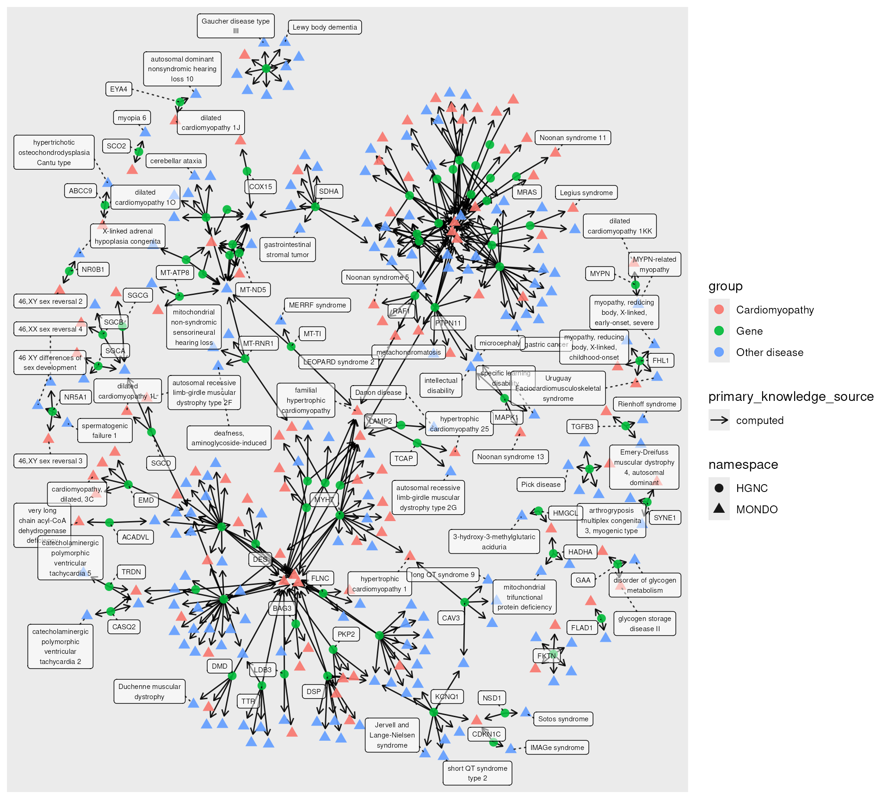

vignettes/shared_genetics.Rmd
shared_genetics.RmdGenes and variants that cause one disease sometimes contribute to others as well, a phenomenon known as pleiotropy. Phenome-wide association studies (PheWAS) investigate this statistically, testing variants for association with many phenotypes across large cohorts. Before (or alongside) such a study, it is useful to ask what is already known: which other diseases share curated genetic causes with a disease of interest?
The Monarch KG integrates curated gene- and variant-disease
relationships from sources such as ClinVar, OMIM, Orphanet, and ClinGen,
along with the disease hierarchy of the Mondo ontology. Here we use
monarchr to start from a disease (cardiomyopathy), collect
its subtypes and their known genetic causes, find other diseases
attributed to the same variants, and summarize which genes link
them.
Note that this is a knowledge-graph lookup, not a statistical association study: results reflect curated, largely Mendelian, causal annotations, and are best treated as a starting point for hypotheses about shared genetics rather than as evidence of association. The full analysis takes a few minutes to run.
First we find the Mondo identifier for cardiomyopathy. A search
returns several related terms, so we pick the general one,
MONDO:0004994, and fetch it:
library(monarchr)
library(tidygraph)
library(dplyr)
monarch_search("cardiomyopathy", category = "biolink:Disease", limit = 5)Graph with 5 nodes and 0 edges. Expand sections below for details.
Showing 5 of 5 nodes:
| id | pcategory | name | description | synonym (list) | category (list) | iri | xref (list) | namespace | provided_by | file_source | exact_synonym (list) | subsets (list) | narrow_synonym (list) |
|---|---|---|---|---|---|---|---|---|---|---|---|---|---|
| “MONDO:0004994” | “biolink:Disease” | “cardiomyopathy” | “A disease of the heart muscle or myocardium proper. Cardiomyopathies may be classified as either primary or secondary, on the basis of etiology, or on the pathophysiology of the lesion: hypertrophic, dilated, or restrictive.” | list(c(“Cardiomyopathies”, “cardiomyopathy”)) | c(“biolink:Disease”, “biolink:DiseaseOrPhenotypicFeature”, “biolink:OntologyClass”, “biolink:BiologicalEntity”, “biolink:ThingWithTaxon”, “biolink:NamedThing”, “biolink:Entity”) | “http://purl.obolibrary.org/obo/MONDO_0004994” | list(c(“DOID:0050700”, “EFO:0000318”, “ICD10CM:I42”, “ICD10WHO:I42”, “ICD9:425”, “ICD9:425.4”, “ICD9:425.9”, “MEDGEN:209232”, “MESH:D009202”, “MedDRA:10007636”, “NCIT:C34830”, “Orphanet:167848”, “SCTID:85898001”, “UMLS:C0878544”, “icd11.foundation:282225286”)) | “MONDO” | “phenio_nodes” | “phenio_nodes” | list(c(“Cardiomyopathies”, “cardiomyopathy”)) | list(c(“disease_grouping”, “ordo_group_of_disorders”, “otar”)) | NA |
| “MONDO:0005045” | “biolink:Disease” | “hypertrophic cardiomyopathy” | “A condition in which the myocardium is hypertrophied without an obvious cause. The hypertrophy is generally asymmetric and may be associated with obstruction of the ventricular outflow tract.” | list(c(“familial hypertrophic cardiomyopathy”, “hypertrophic cardiomyopathy”, “hypertrophic subaortic stenosis”, “obstructive hypertrophic cardiomyopathy”)) | c(“biolink:Disease”, “biolink:DiseaseOrPhenotypicFeature”, “biolink:OntologyClass”, “biolink:BiologicalEntity”, “biolink:ThingWithTaxon”, “biolink:NamedThing”, “biolink:Entity”) | “http://purl.obolibrary.org/obo/MONDO_0005045” | list(c(“DOID:11984”, “EFO:0000538”, “HP:0001639”, “ICD10CM:I42.1”, “ICD10CM:I42.2”, “ICD9:425.1”, “ICD9:425.11”, “ICD9:425.4”, “MEDGEN:2881”, “MESH:D002312”, “MedDRA:10020871”, “NANDO:1200286”, “NANDO:1200288”, “NANDO:2100054”, “NANDO:2200229”, “NANDO:2201042”, “NCIT:C34449”, “Orphanet:217569”, “SCTID:233873004”, “UMLS:C0007194”, “icd11.foundation:1830681485”)) | “MONDO” | “phenio_nodes” | “phenio_nodes” | list(c(“hypertrophic cardiomyopathy”, “hypertrophic subaortic stenosis”, “obstructive hypertrophic cardiomyopathy”)) | list(c(“clingen”, “disease_grouping”, “doid_rare”, “inferred_rare”, “ordo_group_of_disorders”, “otar”, “rare”)) | list(“familial hypertrophic cardiomyopathy”) |
| “MONDO:0005201” | “biolink:Disease” | “restrictive cardiomyopathy” | “A type of heart disorder referring to the inability of the ventricles to fill with blood because the myocardium (heart muscle) stiffens and looses its flexibility. Causes include replacement of the myocardium with scar tissue, abnormal cellular infiltration of the myocardium, or deposition of a substance (e.g., amyloid) in the myocardium.” | list(c(“familial restrictive cardiomyopathy”, “restrictive cardiomyopathy”)) | c(“biolink:Disease”, “biolink:DiseaseOrPhenotypicFeature”, “biolink:OntologyClass”, “biolink:BiologicalEntity”, “biolink:ThingWithTaxon”, “biolink:NamedThing”, “biolink:Entity”) | “http://purl.obolibrary.org/obo/MONDO_0005201” | list(c(“DOID:397”, “EFO:0002630”, “GARD:0020531”, “ICD9:425.4”, “MEDGEN:40111”, “MESH:D002313”, “MedDRA:10038748”, “NANDO:1200292”, “NANDO:1200293”, “NANDO:2100058”, “NANDO:2200233”, “NCIT:C62798”, “Orphanet:217632”, “SCTID:415295002”, “UMLS:C0007196”, “icd11.foundation:316495940”)) | “MONDO” | “phenio_nodes” | “phenio_nodes” | list(“restrictive cardiomyopathy”) | list(c(“disease_grouping”, “doid_rare”, “gard_rare”, “nord_rare”, “ordo_group_of_disorders”, “otar”, “rare”)) | list(“familial restrictive cardiomyopathy”) |
| “MONDO:0005491” | “biolink:Disease” | “Chagas cardiomyopathy” | “A disease of the cardiac muscle developed subsequent to the initial protozoan infection by trypanosoma cruzi. After infection, less than 10% develop acute illness such as myocarditis (mostly in children). The disease then enters a latent phase without clinical symptoms until about 20 years later. Myocardial symptoms of advanced chagas disease include conduction defects (heart block) and cardiomegaly.” | list(c(“Trypanosoma cruzi cardiomyopathy”, “Trypanosoma cruzi caused cardiomyopathy”)) | c(“biolink:Disease”, “biolink:DiseaseOrPhenotypicFeature”, “biolink:OntologyClass”, “biolink:BiologicalEntity”, “biolink:ThingWithTaxon”, “biolink:NamedThing”, “biolink:Entity”) | “http://purl.obolibrary.org/obo/MONDO_0005491” | list(c(“EFO:0005529”, “GARD:0024193”, “ICD9:086.0”, “MEDGEN:868”, “MESH:D002598”, “SCTID:998008”, “UMLS:C0007930”)) | “MONDO” | “phenio_nodes” | “phenio_nodes” | list(c(“Trypanosoma cruzi cardiomyopathy”, “Trypanosoma cruzi caused cardiomyopathy”)) | list(c(“gard_rare”, “otar”, “rare”)) | NA |
| “MPATH:615” | “biolink:Disease” | “cardiomyopathy” | “A disease of the heart muscle or myocardium proper.” | NA | c(“biolink:Disease”, “biolink:DiseaseOrPhenotypicFeature”, “biolink:OntologyClass”, “biolink:BiologicalEntity”, “biolink:ThingWithTaxon”, “biolink:NamedThing”, “biolink:Entity”) | “http://purl.obolibrary.org/obo/MPATH_615” | NA | “MPATH” | “phenio_nodes” | “phenio_nodes” | NA | NA | NA |
Showing 0 of 0 edges:
cardiomyopathy <- monarch_engine() |>
fetch_nodes(query_ids = "MONDO:0004994")Then we collect all of its subtypes by following
biolink:subclass_of edges inward, transitively:
cm_subtypes <- cardiomyopathy |>
expand(
predicates = "biolink:subclass_of",
direction = "in",
transitive = TRUE
)
cm_subtypesGraph with 288 nodes and 312 edges. Expand sections below for details.
Showing 100 of 288 nodes:
| id | pcategory | name | description | synonym (list) | category (list) | iri | xref (list) | namespace | provided_by | file_source | exact_synonym (list) | subsets (list) | related_synonym (list) | narrow_synonym (list) | broad_synonym (list) |
|---|---|---|---|---|---|---|---|---|---|---|---|---|---|---|---|
| “MONDO:0004994” | “biolink:Disease” | “cardiomyopathy” | “A disease of the heart muscle or myocardium proper. Cardiomyopathies may be classified as either primary or secondary, on the basis of etiology, or on the pathophysiology of the lesion: hypertrophic, dilated, or restrictive.” | list(c(“Cardiomyopathies”, “cardiomyopathy”)) | c(“biolink:Disease”, “biolink:DiseaseOrPhenotypicFeature”, “biolink:OntologyClass”, “biolink:BiologicalEntity”, “biolink:ThingWithTaxon”, “biolink:NamedThing”, “biolink:Entity”) | “http://purl.obolibrary.org/obo/MONDO_0004994” | list(c(“DOID:0050700”, “EFO:0000318”, “ICD10CM:I42”, “ICD10WHO:I42”, “ICD9:425”, “ICD9:425.4”, “ICD9:425.9”, “MEDGEN:209232”, “MESH:D009202”, “MedDRA:10007636”, “NCIT:C34830”, “Orphanet:167848”, “SCTID:85898001”, “UMLS:C0878544”, “icd11.foundation:282225286”)) | “MONDO” | “phenio_nodes” | “phenio_nodes” | list(c(“Cardiomyopathies”, “cardiomyopathy”)) | list(c(“disease_grouping”, “ordo_group_of_disorders”, “otar”)) | NA | NA | NA |
| “MONDO:0000241” | “biolink:Disease” | “Keshan disease” | “A congestive cardiomyopathy caused by a combination of dietary deficiency of selenium and the presence of a mutated strain of Coxsackievirus.” | list(c(“congestive cardiomyopathy due to selenium deficiency”, “enlarged heart and poor heart function”)) | c(“biolink:Disease”, “biolink:DiseaseOrPhenotypicFeature”, “biolink:OntologyClass”, “biolink:BiologicalEntity”, “biolink:ThingWithTaxon”, “biolink:NamedThing”, “biolink:Entity”) | “http://purl.obolibrary.org/obo/MONDO_0000241” | list(c(“DOID:0050083”, “GARD:0008761”, “ICD9:269.3”, “MEDGEN:78639”, “MESH:C536166”, “SCTID:46939000”, “UMLS:C0268095”, “icd11.foundation:1307765114”)) | “MONDO” | “phenio_nodes” | “phenio_nodes” | NA | list(c(“doid_rare”, “gard_rare”, “nord_rare”, “rare”)) | list(c(“congestive cardiomyopathy due to selenium deficiency”, “enlarged heart and poor heart function”)) | NA | NA |
| “MONDO:0000591” | “biolink:Disease” | “intrinsic cardiomyopathy” | “A cardiomyopathy that is due to abnormalities in heart muscle cells.” | list(c(“intrinsic cardiomyopathy”, “primary cardiomyopathy”)) | c(“biolink:Disease”, “biolink:DiseaseOrPhenotypicFeature”, “biolink:OntologyClass”, “biolink:BiologicalEntity”, “biolink:ThingWithTaxon”, “biolink:NamedThing”, “biolink:Entity”) | “http://purl.obolibrary.org/obo/MONDO_0000591” | list(c(“DOID:0060036”, “GARD:0022809”)) | “MONDO” | “phenio_nodes” | “phenio_nodes” | list(c(“intrinsic cardiomyopathy”, “primary cardiomyopathy”)) | list(c(“clingen”, “gard_rare”, “otar”, “rare”)) | NA | NA | NA |
| “MONDO:0000727” | “biolink:Disease” | “scapuloperoneal myopathy” | “A muscular dystrophy which begins at the lower legs and affects the shoulder region earlier and more severely than distal arm.” | list(c(“Myopathy, Scapuloperoneal”, “myopathy, scapuloperoneal”, “scapuloperoneal syndrome, myopathic type”)) | c(“biolink:Disease”, “biolink:DiseaseOrPhenotypicFeature”, “biolink:OntologyClass”, “biolink:BiologicalEntity”, “biolink:ThingWithTaxon”, “biolink:NamedThing”, “biolink:Entity”) | “http://purl.obolibrary.org/obo/MONDO_0000727” | list(c(“DOID:0060253”, “GARD:0022820”, “MEDGEN:419759”, “MESH:C536624”, “NORD:436”, “UMLS:C2931268”)) | “MONDO” | “phenio_nodes” | “phenio_nodes” | list(“Myopathy, Scapuloperoneal”) | list(c(“gard_rare”, “nord_rare”, “otar”, “rare”)) | list(c(“myopathy, scapuloperoneal”, “scapuloperoneal syndrome, myopathic type”)) | NA | NA |
| “MONDO:0016830” | “biolink:Disease” | “Emery-Dreifuss muscular dystrophy” | “Emery-Dreifuss muscular dystrophy (EDMD) is characterized by muscular weakness and atrophy, with early joint contractures and cardiomyopathy.” | list(c(“EDMD”, “Emery Dreifuss Muscular Dystrophy”, “Emery-Dreifuss muscular dystrophy”, “Humeroperoneal neuromuscular disease, (formerly)”, “scapuloperoneal syndrome, X-linked (formerly)”)) | c(“biolink:Disease”, “biolink:DiseaseOrPhenotypicFeature”, “biolink:OntologyClass”, “biolink:BiologicalEntity”, “biolink:ThingWithTaxon”, “biolink:NamedThing”, “biolink:Entity”) | “http://purl.obolibrary.org/obo/MONDO_0016830” | list(c(“DOID:11726”, “GARD:0006329”, “MEDGEN:96078”, “MESH:D020389”, “NANDO:1200492”, “NANDO:2200857”, “NCIT:C84685”, “NORD:1084”, “OMIMPS:310300”, “Orphanet:261”, “SCTID:111508004”, “UMLS:C0410189”, “icd11.foundation:749295636”)) | “MONDO” | “phenio_nodes” | “phenio_nodes” | list(c(“EDMD”, “Emery Dreifuss Muscular Dystrophy”, “Emery-Dreifuss muscular dystrophy”)) | list(c(“doid_rare”, “gard_rare”, “ncit_rare”, “nord_rare”, “ordo_disorder”, “orphanet_rare”, “otar”, “rare”)) | list(c(“Humeroperoneal neuromuscular disease, (formerly)”, “scapuloperoneal syndrome, X-linked (formerly)”)) | NA | NA |
| “MONDO:0016342” | “biolink:Disease” | “familial isolated arrhythmogenic right ventricular dysplasia” | “Familial isolated arrhythmogenic right ventricular dysplasia (ARVC) is the familial autosomal dominant form of ARVC, a heart muscle disease characterized by life-threatening ventricular arrhythmias with left bundle branch block configuration that may manifest with palpitations, ventricular tachycardia, syncope and sudden fatal attacks, and that is due to dystrophy and fibro-fatty replacement of the right ventricular myocardium that may lead to right ventricular aneurysms.” | list(c(“familial isolated ARVC”, “familial isolated ARVD”, “familial isolated arrhythmogenic right ventricular cardiomyopathy”, “familial isolated arrhythmogenic right ventricular dysplasia”, “familial isolated arrhythmogenic ventricular cardiomyopathy”, “familial isolated arrhythmogenic ventricular dysplasia”)) | c(“biolink:Disease”, “biolink:DiseaseOrPhenotypicFeature”, “biolink:OntologyClass”, “biolink:BiologicalEntity”, “biolink:ThingWithTaxon”, “biolink:NamedThing”, “biolink:Entity”) | “http://purl.obolibrary.org/obo/MONDO_0016342” | list(c(“GARD:0017129”, “MEDGEN:901869”, “OMIMPS:107970”, “Orphanet:217656”, “SCTID:715865008”, “UMLS:C4274968”, “icd11.foundation:460188584”)) | “MONDO” | “phenio_nodes” | “phenio_nodes” | list(c(“familial isolated ARVC”, “familial isolated ARVD”, “familial isolated arrhythmogenic right ventricular cardiomyopathy”, “familial isolated arrhythmogenic right ventricular dysplasia”, “familial isolated arrhythmogenic ventricular cardiomyopathy”, “familial isolated arrhythmogenic ventricular dysplasia”)) | list(c(“clingen”, “gard_rare”, “nord_rare”, “ordo_disorder”, “orphanet_rare”, “otar”, “rare”)) | NA | NA | NA |
| “MONDO:0000908” | “biolink:Disease” | “arrhythmogenic right ventricular dysplasia 13” | “Any arrhythmogenic right ventricular cardiomyopathy in which the cause of the disease is a mutation in the CTNNA3 gene.” | list(c(“ARVC13”, “ARVD13”, “CTNNA3 arrhythmogenic right ventricular cardiomyopathy”, “arrhythmogenic right ventricular cardiomyopathy 13”, “arrhythmogenic right ventricular cardiomyopathy caused by mutation in CTNNA3”, “arrhythmogenic right ventricular dysplasia type 13”, “arrhythmogenic right ventricular dysplasia, familial, 13”, “arrhythmogenic right ventricular dysplasia, familial, type 13”)) | c(“biolink:Disease”, “biolink:DiseaseOrPhenotypicFeature”, “biolink:OntologyClass”, “biolink:BiologicalEntity”, “biolink:ThingWithTaxon”, “biolink:NamedThing”, “biolink:Entity”) | “http://purl.obolibrary.org/obo/MONDO_0000908” | list(c(“DOID:0110084”, “GARD:0022844”, “MEDGEN:816468”, “OMIM:615616”, “UMLS:C3810138”)) | “MONDO” | “phenio_nodes” | “phenio_nodes” | list(c(“ARVC13”, “ARVD13”, “CTNNA3 arrhythmogenic right ventricular cardiomyopathy”, “arrhythmogenic right ventricular cardiomyopathy 13”, “arrhythmogenic right ventricular cardiomyopathy caused by mutation in CTNNA3”, “arrhythmogenic right ventricular dysplasia type 13”, “arrhythmogenic right ventricular dysplasia, familial, 13”, “arrhythmogenic right ventricular dysplasia, familial, type 13”)) | list(c(“gard_rare”, “nord_rare”, “rare”)) | NA | NA | NA |
| “MONDO:0001113” | “biolink:Disease” | “Fiedler’s myocarditis” | NA | list(“idiopathic myocarditis”) | c(“biolink:Disease”, “biolink:DiseaseOrPhenotypicFeature”, “biolink:OntologyClass”, “biolink:BiologicalEntity”, “biolink:ThingWithTaxon”, “biolink:NamedThing”, “biolink:Entity”) | “http://purl.obolibrary.org/obo/MONDO_0001113” | list(c(“DOID:10778”, “GARD:0022882”, “ICD10CM:I40.1”, “ICD9:422.91”, “MEDGEN:510047”, “SCTID:266238009”, “UMLS:C0155689”)) | “MONDO” | “phenio_nodes” | “phenio_nodes” | list(“idiopathic myocarditis”) | list(c(“gard_rare”, “nord_rare”, “rare”)) | NA | NA | NA |
| “MONDO:0004496” | “biolink:Disease” | “myocarditis” | “Myocarditis is a condition that is characterized by inflammation of the heart muscle (myocardium). Some affected people have no noticeable symptoms of the condition. When present, signs and symptoms may include chest pain, abnormal heartbeat, shortness of breath, fatigue, signs of infection (i.e. fever, headache, sore throat, diarrhea), and leg swelling. Myocarditis can be caused by a variety of factors including infections (viral, bacterial, parasitic, and fungal), allergic reactions to certain medications, and exposure to certain chemicals. It can also be associated with other inflammatory conditions such as lupus, Wegener’s granulomatosis, giant cell arteritis and Takayasu’s arteritis. Most cases occur sporadically in people with no family history of the condition. Treatment aims to address the underlying cause of the condition. Medications and rarely, a heart transplant may be needed if the heart muscle becomes weak.” | list(c(“inflammation of myocardium”, “myocardial inflammation (finding)”, “myocardium inflammation”)) | c(“biolink:Disease”, “biolink:DiseaseOrPhenotypicFeature”, “biolink:OntologyClass”, “biolink:BiologicalEntity”, “biolink:ThingWithTaxon”, “biolink:NamedThing”, “biolink:Entity”) | “http://purl.obolibrary.org/obo/MONDO_0004496” | list(c(“DOID:820”, “EFO:0009609”, “GARD:0007137”, “ICD10CM:I40”, “ICD9:429.0”, “MEDGEN:44553”, “MESH:D009205”, “NCIT:C34831”, “SCTID:50920009”, “UMLS:C0027059”, “icd11.foundation:1018829714”)) | “MONDO” | “phenio_nodes” | “phenio_nodes” | list(c(“inflammation of myocardium”, “myocardial inflammation (finding)”, “myocardium inflammation”)) | list(c(“doid_rare”, “gard_rare”, “otar”, “rare”)) | NA | NA | NA |
| “MONDO:0001114” | “biolink:Disease” | “bacterial myocarditis” | “Myocarditis that is caused by an infection with a bacterial agent.” | list(“septic myocarditis”) | c(“biolink:Disease”, “biolink:DiseaseOrPhenotypicFeature”, “biolink:OntologyClass”, “biolink:BiologicalEntity”, “biolink:ThingWithTaxon”, “biolink:NamedThing”, “biolink:Entity”) | “http://purl.obolibrary.org/obo/MONDO_0001114” | list(c(“DOID:10779”, “GARD:0022883”, “ICD10CM:I40.0”, “ICD9:422.92”, “MEDGEN:730492”, “NCIT:C128380”, “SCTID:64043005”, “UMLS:C1384588”, “icd11.foundation:900037931”)) | “MONDO” | “phenio_nodes” | “phenio_nodes” | list(“septic myocarditis”) | list(c(“gard_rare”, “rare”)) | NA | NA | NA |
| “MONDO:0001707” | “biolink:Disease” | “cardiac sarcoidosis” | “Sarcoidosis affecting the tissues of the heart.” | list(c(“heart sarcoidosis”, “sarcoidosis of heart”)) | c(“biolink:Disease”, “biolink:DiseaseOrPhenotypicFeature”, “biolink:OntologyClass”, “biolink:BiologicalEntity”, “biolink:ThingWithTaxon”, “biolink:NamedThing”, “biolink:Entity”) | “http://purl.obolibrary.org/obo/MONDO_0001707” | list(c(“DOID:13405”, “GARD:0022992”, “MEDGEN:140260”, “NCIT:C35589”, “SCTID:75403004”, “UMLS:C0392077”)) | “MONDO” | “phenio_nodes” | “phenio_nodes” | list(c(“heart sarcoidosis”, “sarcoidosis of heart”)) | list(c(“gard_rare”, “rare”)) | NA | NA | NA |
| “MONDO:0016345” | “biolink:Disease” | “non-familial restrictive cardiomyopathy” | NA | NA | c(“biolink:Disease”, “biolink:DiseaseOrPhenotypicFeature”, “biolink:OntologyClass”, “biolink:BiologicalEntity”, “biolink:ThingWithTaxon”, “biolink:NamedThing”, “biolink:Entity”) | “http://purl.obolibrary.org/obo/MONDO_0016345” | list(c(“GARD:0020535”, “MEDGEN:1843079”, “NANDO:1200294”, “Orphanet:217720”, “UMLS:C5680885”, “icd11.foundation:2097520643”)) | “MONDO” | “phenio_nodes” | “phenio_nodes” | NA | list(c(“disease_grouping”, “gard_rare”, “ordo_group_of_disorders”, “rare”)) | NA | NA | NA |
| “MONDO:0002815” | “biolink:Disease” | “acute myocarditis” | “The sudden onset of inflammation of heart muscle with myocellular necrosis; this is generally secondary to an infectious cause, and patients often have a recent history of a flu-like illness.” | list(“myocarditis, acute”) | c(“biolink:Disease”, “biolink:DiseaseOrPhenotypicFeature”, “biolink:OntologyClass”, “biolink:BiologicalEntity”, “biolink:ThingWithTaxon”, “biolink:NamedThing”, “biolink:Entity”) | “http://purl.obolibrary.org/obo/MONDO_0002815” | list(c(“DOID:3951”, “GARD:0023253”, “ICD10WHO:I40”, “ICD9:422”, “ICD9:422.90”, “ICD9:422.99”, “MEDGEN:102339”, “NCIT:C35206”, “SCTID:46701001”, “UMLS:C0155686”)) | “MONDO” | “phenio_nodes” | “phenio_nodes” | list(“myocarditis, acute”) | list(c(“gard_rare”, “nord_rare”, “rare”)) | NA | NA | NA |
| “MONDO:0002824” | “biolink:Disease” | “extrinsic cardiomyopathy” | “A cardiomyopathy that is not due to abnormalities in heart muscle cells.” | list(“secondary cardiomyopathy”) | c(“biolink:Disease”, “biolink:DiseaseOrPhenotypicFeature”, “biolink:OntologyClass”, “biolink:BiologicalEntity”, “biolink:ThingWithTaxon”, “biolink:NamedThing”, “biolink:Entity”) | “http://purl.obolibrary.org/obo/MONDO_0002824” | list(c(“DOID:3978”, “GARD:0023255”, “ICD9:425.8”, “MEDGEN:739084”, “SCTID:195029002”, “UMLS:C1689817”)) | “MONDO” | “phenio_nodes” | “phenio_nodes” | list(“secondary cardiomyopathy”) | list(c(“gard_rare”, “rare”)) | NA | NA | NA |
| “MONDO:0004582” | “biolink:Disease” | “rheumatic myocarditis” | “Inflammation of the myocardium in acute rheumatic heart disease.” | list(c(“acute rheumatic myocarditis”, “acute rheumatic myocarditis (disorder) [ambiguous]”, “rheumatic myocarditis”)) | c(“biolink:Disease”, “biolink:DiseaseOrPhenotypicFeature”, “biolink:OntologyClass”, “biolink:BiologicalEntity”, “biolink:ThingWithTaxon”, “biolink:NamedThing”, “biolink:Entity”) | “http://purl.obolibrary.org/obo/MONDO_0004582” | list(c(“DOID:8481”, “GARD:0024072”, “ICD10CM:I09.0”, “ICD9:391.9”, “ICD9:398.0”, “MEDGEN:56370”, “NCIT:C35202”, “SCTID:195136004”, “UMLS:C0155557”, “icd11.foundation:1177212968”)) | “MONDO” | “phenio_nodes” | “phenio_nodes” | list(c(“acute rheumatic myocarditis”, “acute rheumatic myocarditis (disorder) [ambiguous]”, “rheumatic myocarditis”)) | list(c(“gard_rare”, “nord_rare”, “otar”, “rare”)) | NA | NA | NA |
| “MONDO:0004802” | “biolink:Disease” | “pulmonary eosinophilia” | “A condition characterized by infiltration of the lung with eosinophils due to inflammation or other disease processes. Major eosinophilic lung diseases are the eosinophilic pneumonias caused by infections, allergens, or toxic agents.” | NA | c(“biolink:Disease”, “biolink:DiseaseOrPhenotypicFeature”, “biolink:OntologyClass”, “biolink:BiologicalEntity”, “biolink:ThingWithTaxon”, “biolink:NamedThing”, “biolink:Entity”) | “http://purl.obolibrary.org/obo/MONDO_0004802” | list(c(“DOID:9498”, “GARD:0024108”, “ICD9:518.3”, “MEDGEN:46208”, “MESH:D011657”, “SCTID:367542003”, “UMLS:C0034068”, “icd11.foundation:544479555”)) | “MONDO” | “phenio_nodes” | “phenio_nodes” | NA | list(c(“gard_rare”, “nord_rare”, “rare”)) | NA | NA | NA |
| “MONDO:0015691” | “biolink:Disease” | “hypereosinophilic syndrome” | “Hypereosinophilic syndrome (HES) constitutes a rare and heterogeneous group of disorders, defined as persistent and marked blood eosinophilia and/or tissue eosinophilia associated with a wide range of clinical manifestations reflecting eosinophil-induced tissue/organ damage.” | list(c(“HES”, “hypereosinophilic disease”, “hypereosinophilic disorder”, “hypereosinophilic syndrome”)) | c(“biolink:Disease”, “biolink:DiseaseOrPhenotypicFeature”, “biolink:OntologyClass”, “biolink:BiologicalEntity”, “biolink:ThingWithTaxon”, “biolink:NamedThing”, “biolink:Entity”) | “http://purl.obolibrary.org/obo/MONDO_0015691” | list(c(“DOID:999”, “EFO:1001467”, “GARD:0002804”, “ICD10CM:D72.11”, “ICD9:288.3”, “ICDO:9964/3”, “MEDGEN:280990”, “MESH:D017681”, “MedDRA:10048643”, “NANDO:2200805”, “NANDO:2200806”, “NCIT:C27038”, “Orphanet:168956”, “SCTID:419455006”, “UMLS:C1540912”, “icd11.foundation:110429919”)) | “MONDO” | “phenio_nodes” | “phenio_nodes” | list(c(“HES”, “hypereosinophilic disease”, “hypereosinophilic disorder”, “hypereosinophilic syndrome”)) | list(c(“disease_grouping”, “doid_rare”, “gard_rare”, “nord_rare”, “ordo_group_of_disorders”, “otar”, “rare”)) | NA | NA | NA |
| “MONDO:0004803” | “biolink:Disease” | “disseminated eosinophilic collagen disease” | NA | NA | c(“biolink:Disease”, “biolink:DiseaseOrPhenotypicFeature”, “biolink:OntologyClass”, “biolink:BiologicalEntity”, “biolink:ThingWithTaxon”, “biolink:NamedThing”, “biolink:Entity”) | “http://purl.obolibrary.org/obo/MONDO_0004803” | list(c(“DOID:9499”, “GARD:0024109”, “ICD9:710.8”, “MEDGEN:538043”, “SCTID:423486005”, “UMLS:C0263662”)) | “MONDO” | “phenio_nodes” | “phenio_nodes” | NA | list(c(“gard_rare”, “rare”)) | NA | NA | NA |
| “MONDO:0004485” | “biolink:Disease” | “interstitial myocarditis” | “Inflammation of the heart characterized by infiltration of the interstitial tissues by inflammatory cells, histiocytes, and the formation of granulomas. Giant cells are often present.” | NA | c(“biolink:Disease”, “biolink:DiseaseOrPhenotypicFeature”, “biolink:OntologyClass”, “biolink:BiologicalEntity”, “biolink:ThingWithTaxon”, “biolink:NamedThing”, “biolink:Entity”) | “http://purl.obolibrary.org/obo/MONDO_0004485” | list(c(“DOID:817”, “GARD:0024031”, “MEDGEN:44554”, “NCIT:C35786”, “SCTID:37925008”, “UMLS:C0027060”)) | “MONDO” | “phenio_nodes” | “phenio_nodes” | NA | list(c(“gard_rare”, “rare”)) | NA | NA | NA |
| “MONDO:0004851” | “biolink:Disease” | “toxic myocarditis” | NA | NA | c(“biolink:Disease”, “biolink:DiseaseOrPhenotypicFeature”, “biolink:OntologyClass”, “biolink:BiologicalEntity”, “biolink:ThingWithTaxon”, “biolink:NamedThing”, “biolink:Entity”) | “http://purl.obolibrary.org/obo/MONDO_0004851” | list(c(“DOID:9694”, “GARD:0024118”, “ICD9:422.93”, “MEDGEN:510049”, “SCTID:31993003”, “UMLS:C0155691”)) | “MONDO” | “phenio_nodes” | “phenio_nodes” | NA | list(c(“gard_rare”, “nord_rare”, “rare”)) | NA | NA | NA |
| “MONDO:0005418” | “biolink:Disease” | “non-compaction cardiomyopathy” | “Left ventricular non-compaction (LVNC) is characterized by prominent left ventricular trabeculae and deep inter-trabecular recesses. The myocardial wall is often thickened with a thin, compacted epicardial layer and a thickened endocardial layer. In some patients, LVNC is associated with left ventricular dilatation and systolic dysfunction, which can be transient in neonates.” | NA | c(“biolink:Disease”, “biolink:DiseaseOrPhenotypicFeature”, “biolink:OntologyClass”, “biolink:BiologicalEntity”, “biolink:ThingWithTaxon”, “biolink:NamedThing”, “biolink:Entity”) | “http://purl.obolibrary.org/obo/MONDO_0005418” | list(c(“EFO:0004686”, “GARD:0024182”, “MEDGEN:1843481”, “UMLS:C4324548”)) | “MONDO” | “phenio_nodes” | “phenio_nodes” | NA | list(c(“gard_rare”, “otar”, “rare”)) | NA | NA | NA |
| “MONDO:0005491” | “biolink:Disease” | “Chagas cardiomyopathy” | “A disease of the cardiac muscle developed subsequent to the initial protozoan infection by trypanosoma cruzi. After infection, less than 10% develop acute illness such as myocarditis (mostly in children). The disease then enters a latent phase without clinical symptoms until about 20 years later. Myocardial symptoms of advanced chagas disease include conduction defects (heart block) and cardiomegaly.” | list(c(“Trypanosoma cruzi cardiomyopathy”, “Trypanosoma cruzi caused cardiomyopathy”)) | c(“biolink:Disease”, “biolink:DiseaseOrPhenotypicFeature”, “biolink:OntologyClass”, “biolink:BiologicalEntity”, “biolink:ThingWithTaxon”, “biolink:NamedThing”, “biolink:Entity”) | “http://purl.obolibrary.org/obo/MONDO_0005491” | list(c(“EFO:0005529”, “GARD:0024193”, “ICD9:086.0”, “MEDGEN:868”, “MESH:D002598”, “SCTID:998008”, “UMLS:C0007930”)) | “MONDO” | “phenio_nodes” | “phenio_nodes” | list(c(“Trypanosoma cruzi cardiomyopathy”, “Trypanosoma cruzi caused cardiomyopathy”)) | list(c(“gard_rare”, “otar”, “rare”)) | NA | NA | NA |
| “MONDO:0004941” | “biolink:Disease” | “eosinophilia-myalgia syndrome” | “A complex systemic syndrome with inflammatory and autoimmune components that affect the skin, fascia, muscle, nerve, blood vessels, lung, and heart. Diagnostic features generally include eosinophilia, myalgia severe enough to limit usual activities of daily living, and the absence of coexisting infectious, autoimmune or other conditions that may induce eosinophilia. Biopsy of affected tissue reveals a microangiopathy associated with diffuse inflammation involving connective tissue. (From Spitzer et al., J Rheumatol Suppl 1996 Oct;46:73-9; Blackburn wd, Semin Arthritis Rheum 1997 Jun;26(6):788-93)” | list(c(“EMS”, “L-tryptophan induced EMS”, “eosinophilia myalgia syndrome”, “severe muscle pain and abnormally high eosinophils”, “syndrome with inflammatory and autoimmune components that affect the skin, fascia, muscle, nerve, blood vessels, lung, and heart”)) | c(“biolink:Disease”, “biolink:DiseaseOrPhenotypicFeature”, “biolink:OntologyClass”, “biolink:BiologicalEntity”, “biolink:ThingWithTaxon”, “biolink:NamedThing”, “biolink:Entity”) | “http://purl.obolibrary.org/obo/MONDO_0004941” | list(c(“DOID:998”, “EFO:1001316”, “GARD:0006345”, “ICD9:710.5”, “MEDGEN:38987”, “MESH:D016603”, “NORD:1094”, “SCTID:95416007”, “UMLS:C0085179”, “icd11.foundation:1361333197”)) | “MONDO” | “phenio_nodes” | “phenio_nodes” | list(“eosinophilia myalgia syndrome”) | list(c(“doid_rare”, “gard_rare”, “nord_rare”, “otar”, “rare”)) | list(c(“EMS”, “L-tryptophan induced EMS”, “severe muscle pain and abnormally high eosinophils”, “syndrome with inflammatory and autoimmune components that affect the skin, fascia, muscle, nerve, blood vessels, lung, and heart”)) | NA | NA |
| “MONDO:0005021” | “biolink:Disease” | “dilated cardiomyopathy” | “Cardiomyopathy which is characterized by dilation and contractile dysfunction of the left and right ventricles. It may be idiopathic, or it may result from a myocardial infarction, myocardial infection, or alcohol abuse. It is a cause of congestive heart failure.” | list(c(“dilated cardiomyopathy”, “familial dilated cardiomyopathy”, “idiopathic dilation cardiomyopathy”)) | c(“biolink:Disease”, “biolink:DiseaseOrPhenotypicFeature”, “biolink:OntologyClass”, “biolink:BiologicalEntity”, “biolink:ThingWithTaxon”, “biolink:NamedThing”, “biolink:Entity”) | “http://purl.obolibrary.org/obo/MONDO_0005021” | list(c(“DOID:12930”, “EFO:0000407”, “GARD:0000221”, “HP:0001644”, “ICD10CM:I42.0”, “ICD9:425.4”, “MEDGEN:2880”, “MESH:D002311”, “MedDRA:10056370”, “NANDO:2100057”, “NANDO:2200232”, “NCIT:C84673”, “Orphanet:217604”, “SCTID:195021004”, “UMLS:C0007193”, “icd11.foundation:1916294688”)) | “MONDO” | “phenio_nodes” | “phenio_nodes” | list(“dilated cardiomyopathy”) | list(c(“clingen”, “disease_grouping”, “doid_rare”, “gard_rare”, “nord_rare”, “ordo_group_of_disorders”, “otar”, “rare”)) | list(c(“familial dilated cardiomyopathy”, “idiopathic dilation cardiomyopathy”)) | NA | NA |
| “MONDO:0005045” | “biolink:Disease” | “hypertrophic cardiomyopathy” | “A condition in which the myocardium is hypertrophied without an obvious cause. The hypertrophy is generally asymmetric and may be associated with obstruction of the ventricular outflow tract.” | list(c(“familial hypertrophic cardiomyopathy”, “hypertrophic cardiomyopathy”, “hypertrophic subaortic stenosis”, “obstructive hypertrophic cardiomyopathy”)) | c(“biolink:Disease”, “biolink:DiseaseOrPhenotypicFeature”, “biolink:OntologyClass”, “biolink:BiologicalEntity”, “biolink:ThingWithTaxon”, “biolink:NamedThing”, “biolink:Entity”) | “http://purl.obolibrary.org/obo/MONDO_0005045” | list(c(“DOID:11984”, “EFO:0000538”, “HP:0001639”, “ICD10CM:I42.1”, “ICD10CM:I42.2”, “ICD9:425.1”, “ICD9:425.11”, “ICD9:425.4”, “MEDGEN:2881”, “MESH:D002312”, “MedDRA:10020871”, “NANDO:1200286”, “NANDO:1200288”, “NANDO:2100054”, “NANDO:2200229”, “NANDO:2201042”, “NCIT:C34449”, “Orphanet:217569”, “SCTID:233873004”, “UMLS:C0007194”, “icd11.foundation:1830681485”)) | “MONDO” | “phenio_nodes” | “phenio_nodes” | list(c(“hypertrophic cardiomyopathy”, “hypertrophic subaortic stenosis”, “obstructive hypertrophic cardiomyopathy”)) | list(c(“clingen”, “disease_grouping”, “doid_rare”, “inferred_rare”, “ordo_group_of_disorders”, “otar”, “rare”)) | NA | list(“familial hypertrophic cardiomyopathy”) | NA |
| “MONDO:0005110” | “biolink:Disease” | “idiopathic cardiomyopathy” | “A disease of the heart muscle or myocardium proper whose cause is unknown.” | NA | c(“biolink:Disease”, “biolink:DiseaseOrPhenotypicFeature”, “biolink:OntologyClass”, “biolink:BiologicalEntity”, “biolink:ThingWithTaxon”, “biolink:NamedThing”, “biolink:Entity”) | “http://purl.obolibrary.org/obo/MONDO_0005110” | list(c(“EFO:0000767”, “GARD:0024149”, “MEDGEN:18634”, “NCIT:C53654”, “UMLS:C0033141”)) | “MONDO” | “phenio_nodes” | “phenio_nodes” | NA | list(c(“gard_rare”, “otar”, “rare”)) | NA | NA | NA |
| “MONDO:0005200” | “biolink:Disease” | “viral dilated cardiomyopathy” | “An dilated cardiomyopathy caused by infection with Viruses.” | list(c(“Viruses caused dilated cardiomyopathy”, “Viruses dilated cardiomyopathy”)) | c(“biolink:Disease”, “biolink:DiseaseOrPhenotypicFeature”, “biolink:OntologyClass”, “biolink:BiologicalEntity”, “biolink:ThingWithTaxon”, “biolink:NamedThing”, “biolink:Entity”) | “http://purl.obolibrary.org/obo/MONDO_0005200” | list(c(“EFO:0002629”, “GARD:0024162”, “MEDGEN:538852”, “SCTID:30496006”, “UMLS:C0264797”, “Wikipedia:Viral_cardiomyopathy”)) | “MONDO” | “phenio_nodes” | “phenio_nodes” | list(c(“Viruses caused dilated cardiomyopathy”, “Viruses dilated cardiomyopathy”)) | list(c(“gard_rare”, “otar”, “rare”)) | NA | NA | NA |
| “MONDO:0005201” | “biolink:Disease” | “restrictive cardiomyopathy” | “A type of heart disorder referring to the inability of the ventricles to fill with blood because the myocardium (heart muscle) stiffens and looses its flexibility. Causes include replacement of the myocardium with scar tissue, abnormal cellular infiltration of the myocardium, or deposition of a substance (e.g., amyloid) in the myocardium.” | list(c(“familial restrictive cardiomyopathy”, “restrictive cardiomyopathy”)) | c(“biolink:Disease”, “biolink:DiseaseOrPhenotypicFeature”, “biolink:OntologyClass”, “biolink:BiologicalEntity”, “biolink:ThingWithTaxon”, “biolink:NamedThing”, “biolink:Entity”) | “http://purl.obolibrary.org/obo/MONDO_0005201” | list(c(“DOID:397”, “EFO:0002630”, “GARD:0020531”, “ICD9:425.4”, “MEDGEN:40111”, “MESH:D002313”, “MedDRA:10038748”, “NANDO:1200292”, “NANDO:1200293”, “NANDO:2100058”, “NANDO:2200233”, “NCIT:C62798”, “Orphanet:217632”, “SCTID:415295002”, “UMLS:C0007196”, “icd11.foundation:316495940”)) | “MONDO” | “phenio_nodes” | “phenio_nodes” | list(“restrictive cardiomyopathy”) | list(c(“disease_grouping”, “doid_rare”, “gard_rare”, “nord_rare”, “ordo_group_of_disorders”, “otar”, “rare”)) | NA | list(“familial restrictive cardiomyopathy”) | NA |
| “MONDO:0005217” | “biolink:Disease” | “familial cardiomyopathy” | “An instance of cardiomyopathy that is caused by an inherited modification of the individual’s genome.” | list(“hereditary cardiomyopathy”) | c(“biolink:Disease”, “biolink:DiseaseOrPhenotypicFeature”, “biolink:OntologyClass”, “biolink:BiologicalEntity”, “biolink:ThingWithTaxon”, “biolink:NamedThing”, “biolink:Entity”) | “http://purl.obolibrary.org/obo/MONDO_0005217” | list(c(“EFO:0002945”, “GARD:0024166”, “ICD9:425.4”, “MEDGEN:538845”, “SCTID:35728003”, “UMLS:C0264789”, “icd11.foundation:1018022925”)) | “MONDO” | “phenio_nodes” | “phenio_nodes” | list(“hereditary cardiomyopathy”) | list(c(“gard_rare”, “otar”, “rare”)) | NA | NA | NA |
| “MONDO:0007152” | “biolink:Disease” | “arrhythmogenic right ventricular dysplasia 1” | “Any arrhythmogenic right ventricular cardiomyopathy in which the cause of the disease is a mutation in the TGFB3 gene.” | list(c(“ARVC1”, “ARVD1”, “TGFB3 arrhythmogenic right ventricular cardiomyopathy”, “arrhythmogenic right ventricular cardiomyopathy 1”, “arrhythmogenic right ventricular cardiomyopathy caused by mutation in TGFB3”, “arrhythmogenic right ventricular dysplasia type 1”, “arrhythmogenic right ventricular dysplasia, familial, 1”, “arrhythmogenic right ventricular dysplasia, familial, type 1”, “familial arrhythmogenic right ventricular dysplasia 1”)) | c(“biolink:Disease”, “biolink:DiseaseOrPhenotypicFeature”, “biolink:OntologyClass”, “biolink:BiologicalEntity”, “biolink:ThingWithTaxon”, “biolink:NamedThing”, “biolink:Entity”) | “http://purl.obolibrary.org/obo/MONDO_0007152” | list(c(“DOID:0110070”, “GARD:0024526”, “MEDGEN:349530”, “OMIM:107970”, “UMLS:C1862511”)) | “MONDO” | “phenio_nodes” | “phenio_nodes” | list(c(“ARVC1”, “ARVD1”, “TGFB3 arrhythmogenic right ventricular cardiomyopathy”, “arrhythmogenic right ventricular cardiomyopathy 1”, “arrhythmogenic right ventricular cardiomyopathy caused by mutation in TGFB3”, “arrhythmogenic right ventricular dysplasia type 1”, “arrhythmogenic right ventricular dysplasia, familial, type 1”, “familial arrhythmogenic right ventricular dysplasia 1”)) | list(c(“gard_rare”, “nord_rare”, “otar”, “rare”)) | list(“arrhythmogenic right ventricular dysplasia, familial, 1”) | NA | NA |
| “MONDO:0007171” | “biolink:Disease” | “atrial standstill 1” | “Any atrial standstill in which the cause of the disease is a mutation in both the GJA5 and SCN5A genes.” | list(c(“ATRST1”, “atrial standstill 1”, “atrial standstill type 1”, “atrial standstill, digenic (GJA5/SCN5A)”)) | c(“biolink:Disease”, “biolink:DiseaseOrPhenotypicFeature”, “biolink:OntologyClass”, “biolink:BiologicalEntity”, “biolink:ThingWithTaxon”, “biolink:NamedThing”, “biolink:Entity”) | “http://purl.obolibrary.org/obo/MONDO_0007171” | list(c(“DOID:0080662”, “GARD:0018611”, “MEDGEN:1646392”, “OMIM:108770”, “UMLS:C4551959”)) | “MONDO” | “phenio_nodes” | “phenio_nodes” | list(c(“atrial standstill 1”, “atrial standstill type 1”, “atrial standstill, digenic (GJA5/SCN5A)”)) | list(c(“doid_rare”, “gard_rare”, “nord_rare”, “rare”)) | list(“ATRST1”) | NA | NA |
| “MONDO:0015281” | “biolink:Disease” | “atrial standstill” | “Atrial standstill is a rare cardiac rhythm disease with a few familial and sporadic cases described to date that is characterized by a transient or permanent absence of electrical and mechanical atrial activity. Electrocardiographic findings include bradycardia, ectopic supraventricular rhythms, lack of atrial excitability and absent P waves.” | list(“atrial cardiomyopathy with heart block”) | c(“biolink:Disease”, “biolink:DiseaseOrPhenotypicFeature”, “biolink:OntologyClass”, “biolink:BiologicalEntity”, “biolink:ThingWithTaxon”, “biolink:NamedThing”, “biolink:Entity”) | “http://purl.obolibrary.org/obo/MONDO_0015281” | list(c(“GARD:0016564”, “ICD9:426.6”, “MEDGEN:639047”, “MESH:C563984”, “Orphanet:1344”, “SCTID:450919004”, “UMLS:C0541782”, “icd11.foundation:483869734”)) | “MONDO” | “phenio_nodes” | “phenio_nodes” | list(“atrial cardiomyopathy with heart block”) | list(c(“gard_rare”, “nord_rare”, “ordo_disorder”, “orphanet_rare”, “otar”, “rare”)) | NA | NA | NA |
| “MONDO:0006643” | “biolink:Disease” | “alcoholic cardiomyopathy” | “A dilated cardiomyopathy which is associated with consumption of large amounts of alcohol over a period of years.” | list(“alcoholic cardiomyopathy”) | c(“biolink:Disease”, “biolink:DiseaseOrPhenotypicFeature”, “biolink:OntologyClass”, “biolink:BiologicalEntity”, “biolink:ThingWithTaxon”, “biolink:NamedThing”, “biolink:Entity”) | “http://purl.obolibrary.org/obo/MONDO_0006643” | list(c(“DOID:12935”, “EFO:1000801”, “GARD:0024450”, “ICD10CM:I42.6”, “ICD9:425.5”, “MEDGEN:2879”, “MESH:D002310”, “MedDRA:10001616”, “NCIT:C53653”, “SCTID:83521008”, “UMLS:C0007192”)) | “MONDO” | “phenio_nodes” | “phenio_nodes” | list(“alcoholic cardiomyopathy”) | list(c(“gard_rare”, “nord_rare”, “otar”, “rare”)) | NA | NA | NA |
| “MONDO:0006746” | “biolink:Disease” | “endomyocardial fibrosis” | “A disease characterized by fibrotic thickening of the endocardium, particularly the right and/or left inflow tracts. The disease often involves the atrioventricular valves, leading to valvular regurgitaion. It most commonly occurs in children living within 15 degrees of the equator.” | list(“African endomyocardial fibrosis”) | c(“biolink:Disease”, “biolink:DiseaseOrPhenotypicFeature”, “biolink:OntologyClass”, “biolink:BiologicalEntity”, “biolink:ThingWithTaxon”, “biolink:NamedThing”, “biolink:Entity”) | “http://purl.obolibrary.org/obo/MONDO_0006746” | list(c(“DOID:12932”, “EFO:1000921”, “GARD:0006340”, “ICD9:425.0”, “MEDGEN:107513”, “MESH:D004719”, “MedDRA:10014800”, “NCIT:C34585”, “NORD:1092”, “UMLS:C0553980”, “icd11.foundation:365224859”)) | “MONDO” | “phenio_nodes” | “phenio_nodes” | list(“African endomyocardial fibrosis”) | list(c(“doid_rare”, “gard_rare”, “nord_rare”, “otar”, “rare”)) | NA | NA | NA |
| “MONDO:0007265” | “biolink:Disease” | “cardiofaciocutaneous syndrome 1” | “Any cardiofaciocutaneous syndrome in which the cause of the disease is a mutation in the BRAF gene.” | list(c(“BRAF cardiofaciocutaneous syndrome”, “CFC1”, “cardiofaciocutaneous syndrome”, “cardiofaciocutaneous syndrome 1”, “cardiofaciocutaneous syndrome caused by mutation in BRAF”, “cardiofaciocutaneous syndrome type 1”)) | c(“biolink:Disease”, “biolink:DiseaseOrPhenotypicFeature”, “biolink:OntologyClass”, “biolink:BiologicalEntity”, “biolink:ThingWithTaxon”, “biolink:NamedThing”, “biolink:Entity”) | “http://purl.obolibrary.org/obo/MONDO_0007265” | list(c(“DOID:0111460”, “GARD:0024539”, “OMIM:115150”)) | “MONDO” | “phenio_nodes” | “phenio_nodes” | list(c(“BRAF cardiofaciocutaneous syndrome”, “cardiofaciocutaneous syndrome 1”, “cardiofaciocutaneous syndrome caused by mutation in BRAF”, “cardiofaciocutaneous syndrome type 1”)) | list(c(“gard_rare”, “nord_rare”, “rare”)) | list(“CFC1”) | NA | list(“cardiofaciocutaneous syndrome”) |
| “MONDO:0015280” | “biolink:Disease” | “cardiofaciocutaneous syndrome” | “Cardiofaciocutaneous (CFC) syndrome is a RASopathy characterized by craniofacial dysmorphology, congenital heart disease, dermatological abnormalities (most commonly hyperkeratotic skin and sparse, curly hair), growth retardation and intellectual disability.” | list(c(“CFC”, “CFC syndrome”, “cardio-facio-cutaneous syndrome”, “cardiofaciocutaneous (CFC) syndrome”, “cardiofaciocutaneous syndrome”, “congenital heart defects characteristic facial appearance ectodermal abnormalities and growth failure”)) | c(“biolink:Disease”, “biolink:DiseaseOrPhenotypicFeature”, “biolink:OntologyClass”, “biolink:BiologicalEntity”, “biolink:ThingWithTaxon”, “biolink:NamedThing”, “biolink:Entity”) | “http://purl.obolibrary.org/obo/MONDO_0015280” | list(c(“DOID:0060233”, “GARD:0009146”, “MEDGEN:266149”, “MESH:C535579”, “NANDO:1200462”, “NANDO:2200967”, “NCIT:C84617”, “NORD:891”, “OMIMPS:115150”, “Orphanet:1340”, “SCTID:403770008”, “UMLS:C1275081”)) | “MONDO” | “phenio_nodes” | “phenio_nodes” | list(c(“CFC”, “CFC syndrome”, “cardiofaciocutaneous (CFC) syndrome”, “cardiofaciocutaneous syndrome”)) | list(c(“clingen”, “doid_rare”, “gard_rare”, “ncit_rare”, “nord_rare”, “ordo_disorder”, “ordo_malformation_syndrome”, “orphanet_rare”, “otar”, “rare”)) | list(c(“cardio-facio-cutaneous syndrome”, “congenital heart defects characteristic facial appearance ectodermal abnormalities and growth failure”)) | NA | NA |
| “MONDO:0007266” | “biolink:Disease” | “hypertrophic cardiomyopathy 2” | “Any hypertrophic cardiomyopathy in which the cause of the disease is a mutation in the TNNT2 gene.” | list(c(“CMH2”, “TNNT2 hypertrophic cardiomyopathy”, “cardiomyopathy, familial hypertrophic, 2”, “cardiomyopathy, familial hypertrophic, type 2”, “cardiomyopathy, hypertrophic, 2”, “familial hypertrophic cardiomyopathy type 2”, “hypertrophic cardiomyopathy 2”, “hypertrophic cardiomyopathy caused by mutation in TNNT2”, “hypertrophic cardiomyopathy type 2”)) | c(“biolink:Disease”, “biolink:DiseaseOrPhenotypicFeature”, “biolink:OntologyClass”, “biolink:BiologicalEntity”, “biolink:ThingWithTaxon”, “biolink:NamedThing”, “biolink:Entity”) | “http://purl.obolibrary.org/obo/MONDO_0007266” | list(c(“DOID:0110308”, “GARD:0024540”, “MEDGEN:349383”, “MESH:C566171”, “NCIT:C142892”, “OMIM:115195”, “UMLS:C1861864”)) | “MONDO” | “phenio_nodes” | “phenio_nodes” | list(c(“CMH2”, “TNNT2 hypertrophic cardiomyopathy”, “cardiomyopathy, familial hypertrophic, type 2”, “cardiomyopathy, hypertrophic, 2”, “familial hypertrophic cardiomyopathy type 2”, “hypertrophic cardiomyopathy 2”, “hypertrophic cardiomyopathy caused by mutation in TNNT2”, “hypertrophic cardiomyopathy type 2”)) | list(c(“gard_rare”, “ncit_rare”, “nord_rare”, “otar”, “rare”)) | list(“cardiomyopathy, familial hypertrophic, 2”) | NA | NA |
| “MONDO:0024573” | “biolink:Disease” | “familial hypertrophic cardiomyopathy” | “Hypertrophic cardiomyopathy caused by mutations in the genes encoding components of the sarcomere, in the absence of predisposing conditions.” | list(c(“cardiomyopathy, familial hypertrophic”, “familial hypertrophic cardiomyopathy”, “familila or idiopathic hypertrophic obstructive cardiomyopathy”, “hereditary hypertrophic cardiomyopathy”, “hypertrophic familial cardiomyopathy”)) | c(“biolink:Disease”, “biolink:DiseaseOrPhenotypicFeature”, “biolink:OntologyClass”, “biolink:BiologicalEntity”, “biolink:ThingWithTaxon”, “biolink:NamedThing”, “biolink:Entity”) | “http://purl.obolibrary.org/obo/MONDO_0024573” | list(c(“DOID:0080326”, “MEDGEN:183649”, “MESH:D024741”, “NCIT:C84773”, “OMIMPS:192600”, “Orphanet:155”, “SCTID:471885006”, “UMLS:C0949658”, “icd11.foundation:1408928442”)) | “MONDO” | “phenio_nodes” | “phenio_nodes” | list(c(“cardiomyopathy, familial hypertrophic”, “familial hypertrophic cardiomyopathy”, “familila or idiopathic hypertrophic obstructive cardiomyopathy”, “hereditary hypertrophic cardiomyopathy”, “hypertrophic familial cardiomyopathy”)) | list(c(“doid_rare”, “inferred_rare”, “ncit_rare”, “otar”, “rare”)) | NA | NA | NA |
| “MONDO:0007267” | “biolink:Disease” | “hypertrophic cardiomyopathy 3” | “Any hypertrophic cardiomyopathy in which the cause of the disease is a mutation in the TPM1 gene.” | list(c(“CMH3”, “TPM1 hypertrophic cardiomyopathy”, “cardiomyopathy, familial hypertrophic, 3”, “cardiomyopathy, familial hypertrophic, type 3”, “cardiomyopathy, hypertrophic, 3”, “hypertrophic cardiomyopathy 3”, “hypertrophic cardiomyopathy caused by mutation in TPM1”, “hypertrophic cardiomyopathy type 3”)) | c(“biolink:Disease”, “biolink:DiseaseOrPhenotypicFeature”, “biolink:OntologyClass”, “biolink:BiologicalEntity”, “biolink:ThingWithTaxon”, “biolink:NamedThing”, “biolink:Entity”) | “http://purl.obolibrary.org/obo/MONDO_0007267” | list(c(“DOID:0110309”, “GARD:0024541”, “MEDGEN:349382”, “MESH:C566170”, “OMIM:115196”, “UMLS:C1861863”)) | “MONDO” | “phenio_nodes” | “phenio_nodes” | list(c(“CMH3”, “TPM1 hypertrophic cardiomyopathy”, “cardiomyopathy, familial hypertrophic, type 3”, “cardiomyopathy, hypertrophic, 3”, “hypertrophic cardiomyopathy 3”, “hypertrophic cardiomyopathy caused by mutation in TPM1”, “hypertrophic cardiomyopathy type 3”)) | list(c(“gard_rare”, “nord_rare”, “rare”)) | list(“cardiomyopathy, familial hypertrophic, 3”) | NA | NA |
| “MONDO:0007268” | “biolink:Disease” | “hypertrophic cardiomyopathy 4” | “An autosomal dominant condition caused by mutation(s) in the MYBPC3 gene, encoding MYBPC3 protein. It is characterized by severe neonatal hypertrophic cardiomyopathy.” | list(c(“CMH4”, “MYBPC3 hypertrophic cardiomyopathy”, “cardiomyopathy, familial hypertrophic, 4”, “cardiomyopathy, familial hypertrophic, type 4”, “cardiomyopathy, hypertrophic, 4”, “familial hypertrophic cardiomyopathy type 4”, “hypertrophic cardiomyopathy 4”, “hypertrophic cardiomyopathy caused by mutation in MYBPC3”, “hypertrophic cardiomyopathy type 4”)) | c(“biolink:Disease”, “biolink:DiseaseOrPhenotypicFeature”, “biolink:OntologyClass”, “biolink:BiologicalEntity”, “biolink:ThingWithTaxon”, “biolink:NamedThing”, “biolink:Entity”) | “http://purl.obolibrary.org/obo/MONDO_0007268” | list(c(“DOID:0110310”, “GARD:0024542”, “MEDGEN:350526”, “MESH:C566169”, “NCIT:C133725”, “OMIM:115197”, “UMLS:C1861862”)) | “MONDO” | “phenio_nodes” | “phenio_nodes” | list(c(“CMH4”, “MYBPC3 hypertrophic cardiomyopathy”, “cardiomyopathy, familial hypertrophic, 4”, “cardiomyopathy, familial hypertrophic, type 4”, “cardiomyopathy, hypertrophic, 4”, “familial hypertrophic cardiomyopathy type 4”, “hypertrophic cardiomyopathy 4”, “hypertrophic cardiomyopathy caused by mutation in MYBPC3”, “hypertrophic cardiomyopathy type 4”)) | list(c(“gard_rare”, “ncit_rare”, “nord_rare”, “otar”, “rare”)) | NA | NA | NA |
| “MONDO:0700335” | “biolink:Disease” | “familial isolated dilated cardiomyopathy” | “A rare familial cardiomyopathy characterized by the dilation of left ventricle and progressively impairing of systolic ventricular function, in the absence of abnormal loading conditions or coronary artery disease sufficient to cause global systolic impairment. The disease may cause heart failure or arrhythmia. The disease is isolated when no additional atypical cardiac or extracardiac manifestations are present.” | list(c(“familial isolated dilated cardiomyopathy”, “familial or idiopathic dilated cardiomyopathy”)) | c(“biolink:Disease”, “biolink:DiseaseOrPhenotypicFeature”, “biolink:OntologyClass”, “biolink:BiologicalEntity”, “biolink:ThingWithTaxon”, “biolink:NamedThing”, “biolink:Entity”) | “http://purl.obolibrary.org/obo/MONDO_0700335” | list(c(“GARD:0027293”, “MEDGEN:1826005”, “Orphanet:154”, “UMLS:C5679590”, “icd11.foundation:949016860”)) | “MONDO” | “phenio_nodes” | “phenio_nodes” | list(c(“familial isolated dilated cardiomyopathy”, “familial or idiopathic dilated cardiomyopathy”)) | list(c(“gard_rare”, “ordo_disorder”, “orphanet_rare”, “rare”)) | NA | NA | NA |
| “MONDO:0007269” | “biolink:Disease” | “dilated cardiomyopathy 1A” | “Familial dilated cardiomyopathy with conduction defect due to LMNA mutation is a rare familial dilated cardiomyopathy characterized by left ventricular enlargement and/or reduced systolic function preceded or accompanied by significant conduction system disease and/or arrhythmias including bradyarrhythmias, supraventricular or ventricular arrhythmias. Disease onset is usually in early to mid-adulthood. Sudden cardiac death may occur and may be the presenting symptom. In some cases, it is associated with skeletal myopathy and elevated serum creatine kinase.” | list(c(“CDCD1”, “LMNA familial isolated dilated cardiomyopathy”, “cardiomyopathy dilated with conduction defect type 1”, “cardiomyopathy, dilated, 1A”, “cardiomyopathy, dilated, type 1A”, “dilated cardiomyopathy 1A”, “dilated cardiomyopathy type 1A”, “familial dilated cardiomyopathy with conduction defect due to LMNA mutation”, “familial isolated dilated cardiomyopathy caused by mutation in LMNA”)) | c(“biolink:Disease”, “biolink:DiseaseOrPhenotypicFeature”, “biolink:OntologyClass”, “biolink:BiologicalEntity”, “biolink:ThingWithTaxon”, “biolink:NamedThing”, “biolink:Entity”) | “http://purl.obolibrary.org/obo/MONDO_0007269” | list(c(“DOID:0110425”, “GARD:0018615”, “MEDGEN:1875382”, “OMIM:115200”, “Orphanet:300751”, “SCTID:766883006”, “UMLS:C5979868”, “icd11.foundation:884022112”)) | “MONDO” | “phenio_nodes” | “phenio_nodes” | list(c(“CDCD1”, “LMNA familial isolated dilated cardiomyopathy”, “cardiomyopathy dilated with conduction defect type 1”, “cardiomyopathy, dilated, type 1A”, “dilated cardiomyopathy 1A”, “dilated cardiomyopathy type 1A”, “familial dilated cardiomyopathy with conduction defect due to LMNA mutation”, “familial isolated dilated cardiomyopathy caused by mutation in LMNA”)) | list(c(“doid_rare”, “gard_rare”, “nord_rare”, “ordo_disorder”, “orphanet_rare”, “otar”, “rare”)) | list(“cardiomyopathy, dilated, 1A”) | NA | NA |
| “MONDO:0016340” | “biolink:Disease” | “familial restrictive cardiomyopathy” | “An instance of restrictive cardiomyopathy that is caused by an inherited modification of the individual’s genome.” | list(“hereditary restrictive cardiomyopathy”) | c(“biolink:Disease”, “biolink:DiseaseOrPhenotypicFeature”, “biolink:OntologyClass”, “biolink:BiologicalEntity”, “biolink:ThingWithTaxon”, “biolink:NamedThing”, “biolink:Entity”) | “http://purl.obolibrary.org/obo/MONDO_0016340” | list(c(“GARD:0020532”, “ICD9:425.4”, “MEDGEN:468561”, “OMIMPS:115210”, “Orphanet:217635”, “SCTID:233878008”, “UMLS:C0340429”)) | “MONDO” | “phenio_nodes” | “phenio_nodes” | list(“hereditary restrictive cardiomyopathy”) | list(c(“disease_grouping”, “gard_rare”, “nord_rare”, “ordo_group_of_disorders”, “otar”, “rare”)) | NA | NA | NA |
| “MONDO:0007270” | “biolink:Disease” | “cardiomyopathy, familial restrictive, 1” | “Any familial isolated restrictive cardiomyopathy in which the cause of the disease is a mutation in the TNNI3 gene.” | list(c(“RCM1”, “TNNI3 familial isolated restrictive cardiomyopathy”, “cardiomyopathy, familial restrictive, 1”, “cardiomyopathy, familial restrictive, type 1”, “familial isolated restrictive cardiomyopathy caused by mutation in TNNI3”)) | c(“biolink:Disease”, “biolink:DiseaseOrPhenotypicFeature”, “biolink:OntologyClass”, “biolink:BiologicalEntity”, “biolink:ThingWithTaxon”, “biolink:NamedThing”, “biolink:Entity”) | “http://purl.obolibrary.org/obo/MONDO_0007270” | list(c(“DOID:0111425”, “GARD:0018070”, “MEDGEN:396236”, “MESH:C566168”, “OMIM:115210”, “UMLS:C1861861”)) | “MONDO” | “phenio_nodes” | “phenio_nodes” | list(c(“TNNI3 familial isolated restrictive cardiomyopathy”, “cardiomyopathy, familial restrictive, 1”, “cardiomyopathy, familial restrictive, type 1”, “familial isolated restrictive cardiomyopathy caused by mutation in TNNI3”)) | list(c(“gard_rare”, “nord_rare”, “rare”)) | list(“RCM1”) | NA | NA |
| “MONDO:0007534” | “biolink:Disease” | “Beckwith-Wiedemann syndrome” | “Beckwith-Wiedemann syndrome (BWS) is a genetic disorder characterized by overgrowth, tumor predisposition and congenital malformations.” | list(c(“BWS”, “Beckwith-Wiedemann syndrome”, “Wiedemann-Beckwith syndrome”, “Wiedemann-Beckwith syndrome (WBS)”, “exomphalos macroglossia gigantism syndrome”, “exomphalos-macroglossia-gigantism syndrome”)) | c(“biolink:Disease”, “biolink:DiseaseOrPhenotypicFeature”, “biolink:OntologyClass”, “biolink:BiologicalEntity”, “biolink:ThingWithTaxon”, “biolink:NamedThing”, “biolink:Entity”) | “http://purl.obolibrary.org/obo/MONDO_0007534” | list(c(“DOID:5572”, “GARD:0003343”, “ICD9:759.89”, “MEDGEN:2562”, “MESH:D001506”, “MedDRA:10050344”, “NANDO:2200959”, “NCIT:C34415”, “NORD:845”, “OMIM:130650”, “Orphanet:116”, “SCTID:81780002”, “UMLS:C0004903”, “icd11.foundation:803086260”)) | “MONDO” | “phenio_nodes” | “phenio_nodes” | list(c(“BWS”, “Beckwith-Wiedemann syndrome”, “Wiedemann-Beckwith syndrome”, “exomphalos-macroglossia-gigantism syndrome”)) | list(c(“doid_rare”, “gard_rare”, “nord_rare”, “ordo_disorder”, “ordo_malformation_syndrome”, “orphanet_rare”, “otar”, “rare”)) | list(c(“Wiedemann-Beckwith syndrome (WBS)”, “exomphalos macroglossia gigantism syndrome”)) | NA | NA |
| “MONDO:0007893” | “biolink:Disease” | “Noonan syndrome with multiple lentigines” | “A rare multisystem genetic disorder characterized by lentigines, hypertrophic cardiomyopathy, short stature, pectus deformity, and dysmorphic facial features.” | list(c(“Cardiomyopathic lentiginosis”, “LEOPARD syndrome”, “Noonan syndrome with multiple lentigines”, “familial multiple lentigines syndrome”, “generalised lentiginosis”, “lentigines, electrocardiographic conduction abnormalities, ocular hypertelorism, pulmonic stenosis, abnormal genitalia, retardation of growth, Deafnes”, “lentigines, electrocardiographic conduction defects, 0cular hypertelorism, pulmonary stenosis, abnormalities of the genitals, retarded Growth, deafness”)) | c(“biolink:Disease”, “biolink:DiseaseOrPhenotypicFeature”, “biolink:OntologyClass”, “biolink:BiologicalEntity”, “biolink:ThingWithTaxon”, “biolink:NamedThing”, “biolink:Entity”) | “http://purl.obolibrary.org/obo/MONDO_0007893” | list(c(“DOID:14291”, “GARD:0001100”, “ICD9:709.09”, “MEDGEN:104494”, “MESH:D044542”, “MedDRA:10062901”, “NCIT:C84820”, “NORD:1360”, “OMIMPS:151100”, “Orphanet:500”, “SCTID:111306001”, “UMLS:C0175704”, “icd11.foundation:939197023”)) | “MONDO” | “phenio_nodes” | “phenio_nodes” | list(c(“Cardiomyopathic lentiginosis”, “LEOPARD syndrome”, “Noonan syndrome with multiple lentigines”, “familial multiple lentigines syndrome”, “generalised lentiginosis”, “lentigines, electrocardiographic conduction defects, 0cular hypertelorism, pulmonary stenosis, abnormalities of the genitals, retarded Growth, deafness”)) | list(c(“clingen”, “doid_rare”, “gard_rare”, “ncit_rare”, “nord_rare”, “ordo_disorder”, “ordo_malformation_syndrome”, “orphanet_rare”, “otar”, “rare”)) | list(“lentigines, electrocardiographic conduction abnormalities, ocular hypertelorism, pulmonic stenosis, abnormal genitalia, retardation of growth, Deafnes”) | NA | NA |
| “MONDO:0020297” | “biolink:Disease” | “Noonan syndrome and Noonan-related syndrome” | NA | NA | c(“biolink:Disease”, “biolink:DiseaseOrPhenotypicFeature”, “biolink:OntologyClass”, “biolink:BiologicalEntity”, “biolink:ThingWithTaxon”, “biolink:NamedThing”, “biolink:Entity”) | “http://purl.obolibrary.org/obo/MONDO_0020297” | list(c(“GARD:0019561”, “MEDGEN:1826127”, “MESH:C537846”, “Orphanet:98733”, “UMLS:C5681679”)) | “MONDO” | “phenio_nodes” | “phenio_nodes” | NA | list(c(“disease_grouping”, “gard_rare”, “ordo_group_of_disorders”, “otar”, “rare”)) | NA | NA | NA |
| “MONDO:0007938” | “biolink:Disease” | “46,XY sex reversal 4” | “Sex reversal in an individual associated with a 9p24.3 deletion.” | list(c(“46,XY Sex reversal type 4”, “46,XY sex reversal 4”, “46XY sex reversal 4, Isolated cases”, “SRXY4”)) | c(“biolink:Disease”, “biolink:DiseaseOrPhenotypicFeature”, “biolink:OntologyClass”, “biolink:BiologicalEntity”, “biolink:ThingWithTaxon”, “biolink:NamedThing”, “biolink:Entity”) | “http://purl.obolibrary.org/obo/MONDO_0007938” | list(c(“DOID:0111771”, “GARD:0015083”, “MEDGEN:416704”, “MESH:C567887”, “NCIT:C132270”, “OMIM:154230”, “UMLS:C2752149”)) | “MONDO” | “phenio_nodes” | “phenio_nodes” | list(c(“46,XY Sex reversal type 4”, “46,XY sex reversal 4”, “46XY sex reversal 4, Isolated cases”)) | list(c(“gard_rare”, “nord_rare”, “rare”)) | list(“SRXY4”) | NA | NA |
| “MONDO:0010765” | “biolink:Disease” | “46,XY complete gonadal dysgenesis” | “46,XY complete gonadal dysgenesis (46,XY CGD) is a disorder of sex development (DSD) associated with anomalies in gonadal development that result in the presence of female external and internal genitalia despite the 46,XY karyotype.” | list(c(“46 XY gonadal dysgenesis”, “46, XY CGD”, “46, XY complete gonadal dysgenesis”, “46, XY pure gonadal dysgenesis”, “46,XY CGD”, “46,XY SEX reversal”, “46,XY gonadal dysgenesis”, “46,XY pure gonadal dysgenesis”, “Swyer syndrome”, “gonadal dysgenesis, XY female type”)) | c(“biolink:Disease”, “biolink:DiseaseOrPhenotypicFeature”, “biolink:OntologyClass”, “biolink:BiologicalEntity”, “biolink:ThingWithTaxon”, “biolink:NamedThing”, “biolink:Entity”) | “http://purl.obolibrary.org/obo/MONDO_0010765” | list(c(“DOID:14448”, “GARD:0005068”, “MEDGEN:445380”, “MESH:D006061”, “NCIT:C120198”, “NORD:1750”, “OMIMPS:400044”, “Orphanet:242”, “SCTID:95218005”, “UMLS:C2936694”)) | “MONDO” | “phenio_nodes” | “phenio_nodes” | list(c(“46 XY gonadal dysgenesis”, “46, XY CGD”, “46, XY complete gonadal dysgenesis”, “46, XY pure gonadal dysgenesis”, “46,XY CGD”, “46,XY SEX reversal”, “46,XY gonadal dysgenesis”, “46,XY pure gonadal dysgenesis”, “Swyer syndrome”)) | list(c(“gard_rare”, “nord_rare”, “ordo_disorder”, “ordo_malformation_syndrome”, “orphanet_rare”, “otar”, “prototype_pattern”, “rare”)) | list(“gonadal dysgenesis, XY female type”) | NA | NA |
| “MONDO:0008056” | “biolink:Disease” | “myotonic dystrophy type 1” | “Steinert disease, also known as myotonic dystrophy type 1, is a muscle disease characterized by myotonia and by multiorgan damage that combines various degrees of muscle weakness, arrhythmia and/or cardiac conduction disorders, cataract, endocrine damage, sleep disorders and baldness.” | list(c(“DM1”, “DMPK myotonic dystrophy”, “MD1”, “Steinert disease”, “Steinert myotonic dystrophy syndrome”, “Steinert syndrome”, “Steinert’s disease”, “dystrophia myotonica”, “dystrophia myotonica type 1”, “myotonic dystrophy 1”, “myotonic dystrophy caused by mutation in DMPK”, “myotonic dystrophy type 1”)) | c(“biolink:Disease”, “biolink:DiseaseOrPhenotypicFeature”, “biolink:OntologyClass”, “biolink:BiologicalEntity”, “biolink:ThingWithTaxon”, “biolink:NamedThing”, “biolink:Entity”) | “http://purl.obolibrary.org/obo/MONDO_0008056” | list(c(“DOID:11722”, “GARD:0008310”, “ICD9:359.21”, “MEDGEN:886881”, “NCIT:C84679”, “OMIM:160900”, “Orphanet:273”, “UMLS:C3250443”, “icd11.foundation:557405480”)) | “MONDO” | “phenio_nodes” | “phenio_nodes” | list(c(“DM1”, “DMPK myotonic dystrophy”, “MD1”, “Steinert disease”, “Steinert myotonic dystrophy syndrome”, “Steinert syndrome”, “dystrophia myotonica”, “myotonic dystrophy caused by mutation in DMPK”, “myotonic dystrophy type 1”)) | list(c(“doid_rare”, “gard_rare”, “ncit_rare”, “nord_rare”, “ordo_disorder”, “orphanet_rare”, “otar”, “rare”)) | list(c(“Steinert’s disease”, “dystrophia myotonica type 1”, “myotonic dystrophy 1”)) | NA | NA |
| “MONDO:0008104” | “biolink:Disease” | “Noonan syndrome 1” | “Noonan syndrome caused by mutations in the PTPN11 gene.” | list(c(“NS1”, “Noonan syndrome 1”, “Noonan syndrome type 1”)) | c(“biolink:Disease”, “biolink:DiseaseOrPhenotypicFeature”, “biolink:OntologyClass”, “biolink:BiologicalEntity”, “biolink:ThingWithTaxon”, “biolink:NamedThing”, “biolink:Entity”) | “http://purl.obolibrary.org/obo/MONDO_0008104” | list(c(“DOID:0060578”, “GARD:0007223”, “MEDGEN:1638960”, “NCIT:C75459”, “OMIM:163950”, “UMLS:C4551602”)) | “MONDO” | “phenio_nodes” | “phenio_nodes” | list(c(“NS1”, “Noonan syndrome 1”, “Noonan syndrome type 1”)) | list(c(“gard_rare”, “nord_rare”, “rare”)) | NA | NA | NA |
| “MONDO:0018997” | “biolink:Disease” | “Noonan syndrome” | “Noonan Syndrome (NS) is characterized by short stature, typical facial dysmorphism and congenital heart defects.” | list(c(“Noonan syndrome”, “Noonan’s syndrome”, “Noonan-Ehmke syndrome”, “Ullrich-Noonan syndrome”, “pseudo-Ullrich-Turner syndrome”)) | c(“biolink:Disease”, “biolink:DiseaseOrPhenotypicFeature”, “biolink:OntologyClass”, “biolink:BiologicalEntity”, “biolink:ThingWithTaxon”, “biolink:NamedThing”, “biolink:Entity”) | “http://purl.obolibrary.org/obo/MONDO_0018997” | list(c(“DOID:3490”, “GARD:0010955”, “ICD9:759.89”, “MEDGEN:18073”, “MESH:D009634”, “MedDRA:10029748”, “NANDO:1200680”, “NANDO:2200413”, “NCIT:C34854”, “NORD:1513”, “OMIMPS:163950”, “Orphanet:648”, “SCTID:205824006”, “UMLS:C0028326”, “icd11.foundation:1044395354”)) | “MONDO” | “phenio_nodes” | “phenio_nodes” | list(c(“Noonan syndrome”, “Noonan’s syndrome”)) | list(c(“clingen”, “doid_rare”, “gard_rare”, “nord_rare”, “ordo_disorder”, “ordo_malformation_syndrome”, “orphanet_rare”, “otar”, “rare”)) | list(c(“Noonan-Ehmke syndrome”, “Ullrich-Noonan syndrome”, “pseudo-Ullrich-Turner syndrome”)) | NA | NA |
| “MONDO:0008409” | “biolink:Disease” | “congenital myopathy 7A, myosin storage, autosomal dominant” | NA | list(c(“MSMA”, “MYH7-related late-onset SPMD”, “MYH7-related late-onset scapuloperoneal muscular dystrophy”, “MYH7-related late-onset scapuloperoneal syndrome”, “MYH7-related scapuloperoneal myopathy”, “SPMD”, “SPMM”, “autosomal dominant myosin storage myopathy”, “myopathy with lysis of type 1 myofibrils”, “myopathy, hyaline body, autosomal dominant”, “myopathy, myosin storage, autosomal dominant”, “scapuloperoneal muscular dystrophy”, “scapuloperoneal myopathy, MYH7-related”, “scapuloperoneal syndrome, myopathic type”)) | c(“biolink:Disease”, “biolink:DiseaseOrPhenotypicFeature”, “biolink:OntologyClass”, “biolink:BiologicalEntity”, “biolink:ThingWithTaxon”, “biolink:NamedThing”, “biolink:Entity”) | “http://purl.obolibrary.org/obo/MONDO_0008409” | list(c(“DOID:0111269”, “GARD:0015429”, “ICD9:359.89”, “MEDGEN:374868”, “MESH:C564253”, “OMIM:181430”, “OMIM:608358”, “Orphanet:437572”, “Orphanet:636965”, “UMLS:C1842160”)) | “MONDO” | “phenio_nodes” | “phenio_nodes” | list(c(“MSMA”, “MYH7-related late-onset SPMD”, “MYH7-related late-onset scapuloperoneal muscular dystrophy”, “MYH7-related late-onset scapuloperoneal syndrome”, “MYH7-related scapuloperoneal myopathy”, “SPMD”, “SPMM”, “autosomal dominant myosin storage myopathy”, “myopathy with lysis of type 1 myofibrils”, “myopathy, hyaline body, autosomal dominant”, “myopathy, myosin storage, autosomal dominant”, “scapuloperoneal muscular dystrophy”, “scapuloperoneal myopathy, MYH7-related”, “scapuloperoneal syndrome, myopathic type”)) | list(c(“gard_rare”, “nord_rare”, “ordo_subtype_of_a_disorder”, “otar”, “rare”)) | NA | NA | NA |
| “MONDO:0008647” | “biolink:Disease” | “hypertrophic cardiomyopathy 1” | “Any hypertrophic cardiomyopathy in which the cause of the disease is a mutation in the MYH7 gene.” | list(c(“CMH1”, “MYH7 hypertrophic cardiomyopathy”, “cardiomyopathy, familial hypertrophic, 1”, “cardiomyopathy, familial hypertrophic, Autosomal dominant, Digenic dominant”, “cardiomyopathy, familial hypertrophic, type 1”, “cardiomyopathy, hypertrophic, 1, Autosomal dominant, Digenic dominant”, “cardiomyopathy, hypertrophic, 1, digenic, Autosomal dominant, Digenic dominant”, “hypertrophic cardiomyopathy 1”, “hypertrophic cardiomyopathy caused by mutation in MYH7”, “hypertrophic cardiomyopathy type 1”)) | c(“biolink:Disease”, “biolink:DiseaseOrPhenotypicFeature”, “biolink:OntologyClass”, “biolink:BiologicalEntity”, “biolink:ThingWithTaxon”, “biolink:NamedThing”, “biolink:Entity”) | “http://purl.obolibrary.org/obo/MONDO_0008647” | list(c(“DOID:0110307”, “GARD:0024636”, “MEDGEN:501195”, “OMIM:192600”, “UMLS:C3495498”)) | “MONDO” | “phenio_nodes” | “phenio_nodes” | list(c(“CMH1”, “MYH7 hypertrophic cardiomyopathy”, “cardiomyopathy, familial hypertrophic, Autosomal dominant, Digenic dominant”, “cardiomyopathy, familial hypertrophic, type 1”, “cardiomyopathy, hypertrophic, 1, Autosomal dominant, Digenic dominant”, “cardiomyopathy, hypertrophic, 1, digenic, Autosomal dominant, Digenic dominant”, “hypertrophic cardiomyopathy 1”, “hypertrophic cardiomyopathy caused by mutation in MYH7”, “hypertrophic cardiomyopathy type 1”)) | list(c(“gard_rare”, “nord_rare”, “rare”)) | list(“cardiomyopathy, familial hypertrophic, 1”) | NA | NA |
| “MONDO:0008685” | “biolink:Disease” | “Wolff-Parkinson-White syndrome” | “A cardiac conduction disorder characterized by an electrocardiographic finding of ventricular pre-excitation, which is a short PR interval and a long QRS interval with a delta wave. Most individuals are asymptomatic; however they can experience periods of palpitations, shortness of breath or syncope during tachycardic episodes.” | list(c(“WPW”, “Wolff-Parkinson-White pattern (finding)”, “Wolff-Parkinson-White syndrome”, “Wolff-Parkinson-white syndrome (disease)”, “ventricular familial preexcitation syndrome”)) | c(“biolink:Disease”, “biolink:DiseaseOrPhenotypicFeature”, “biolink:OntologyClass”, “biolink:BiologicalEntity”, “biolink:ThingWithTaxon”, “biolink:NamedThing”, “biolink:Entity”) | “http://purl.obolibrary.org/obo/MONDO_0008685” | list(c(“DOID:384”, “EFO:1001450”, “HP:0001716”, “ICD9:426.7”, “MEDGEN:12162”, “MESH:D014927”, “NANDO:2200217”, “NCIT:C35132”, “OMIM:194200”, “Orphanet:907”, “SCTID:17869006”, “UMLS:C0043202”, “icd11.foundation:1091030330”)) | “MONDO” | “phenio_nodes” | “phenio_nodes” | list(c(“WPW”, “Wolff-Parkinson-White pattern (finding)”, “Wolff-Parkinson-White syndrome”, “Wolff-Parkinson-white syndrome (disease)”, “ventricular familial preexcitation syndrome”)) | list(c(“doid_rare”, “inferred_rare”, “otar”, “rare”)) | NA | NA | NA |
| “MONDO:0800484” | “biolink:Disease” | “PRKAG2-related cardiomyopathy” | “A metabolic heart condition characterized by variable cardiac hypertrophy, ventricular pre-excitation, and aberrant glycogen storage in the cardiac tissue due to a pathogenic variant in PRKAG2 that results in a net anabolic effect in cardiac cells.” | list(c(“PRKAG2 cardiac syndrome”, “PRKAG2 cardiomyopathy”, “PRKAG2 syndrome”, “PRKAG2-related cardiomyopathy”)) | c(“biolink:Disease”, “biolink:DiseaseOrPhenotypicFeature”, “biolink:OntologyClass”, “biolink:BiologicalEntity”, “biolink:ThingWithTaxon”, “biolink:NamedThing”, “biolink:Entity”) | “http://purl.obolibrary.org/obo/MONDO_0800484” | list(“GARD:0026575”) | “MONDO” | “phenio_nodes” | “phenio_nodes” | list(c(“PRKAG2 cardiac syndrome”, “PRKAG2 cardiomyopathy”, “PRKAG2 syndrome”, “PRKAG2-related cardiomyopathy”)) | list(c(“gard_rare”, “rare”)) | NA | NA | NA |
| “MONDO:0008723” | “biolink:Disease” | “very long chain acyl-CoA dehydrogenase deficiency” | “An inherited disorder of mitochondrial long-chain fatty acid oxidation with a variable presentation including: cardiomyopathy, hypoketotic hypoglycemia, liver disease, exercise intolerance and rhabdomyolysis.” | list(c(“ACADVLD”, “VLCAD”, “VLCAD deficiency”, “VLCADD”, “Very Long Chain Acyl CoA Dehydrogenase Deficiency (LCAD)”, “acyl-CoA dehydrogenase, very long-chain deficiency”, “acyl-CoA dehydrogenase, very long-chain, deficiency OF”, “very long chain acyl-CoA dehydrogenase deficiency”, “very long-chain acyl-CoA dehydrogenase deficiency”, “very long-chain acyl-Coenzyme A dehydrogenase deficiency”)) | c(“biolink:Disease”, “biolink:DiseaseOrPhenotypicFeature”, “biolink:OntologyClass”, “biolink:BiologicalEntity”, “biolink:ThingWithTaxon”, “biolink:NamedThing”, “biolink:Entity”) | “http://purl.obolibrary.org/obo/MONDO_0008723” | list(c(“DOID:0080155”, “GARD:0005508”, “ICD10CM:E71.310”, “MEDGEN:854382”, “NANDO:2200512”, “NANDO:2201139”, “NCIT:C98647”, “NORD:1827”, “OMIM:201475”, “Orphanet:26793”, “SCTID:237997005”, “UMLS:C3887523”, “icd11.foundation:907810567”)) | “MONDO” | “phenio_nodes” | “phenio_nodes” | list(c(“VLCAD”, “VLCAD deficiency”, “VLCADD”, “Very Long Chain Acyl CoA Dehydrogenase Deficiency (LCAD)”, “acyl-CoA dehydrogenase, very long-chain deficiency”, “very long chain acyl-CoA dehydrogenase deficiency”, “very long-chain acyl-CoA dehydrogenase deficiency”, “very long-chain acyl-Coenzyme A dehydrogenase deficiency”)) | list(c(“clingen”, “doid_rare”, “gard_rare”, “ncit_rare”, “nord_rare”, “ordo_disorder”, “orphanet_rare”, “otar”, “rare”)) | list(c(“ACADVLD”, “acyl-CoA dehydrogenase, very long-chain, deficiency OF”)) | NA | NA |
| “MONDO:0009265” | “biolink:Disease” | “Gaucher disease type I” | “Gaucher disease type 1 is the chronic non-neurological form of Gaucher disease (GD) characterized by organomegaly, bone involvement and cytopenia.” | list(c(“Gaucher disease type I”, “Gaucher disease, noncerebral juvenile”, “Gaucher’s disease type I”, “Gba deficiency”, “acid Beta-glucosidase deficiency”, “non-cerebral juvenile Gaucher disease”)) | c(“biolink:Disease”, “biolink:DiseaseOrPhenotypicFeature”, “biolink:OntologyClass”, “biolink:BiologicalEntity”, “biolink:ThingWithTaxon”, “biolink:NamedThing”, “biolink:Entity”) | “http://purl.obolibrary.org/obo/MONDO_0009265” | list(c(“DOID:0110957”, “GARD:0002441”, “MEDGEN:409531”, “NANDO:1200057”, “NANDO:2201210”, “OMIM:230800”, “Orphanet:77259”, “SCTID:62201009”, “UMLS:C1961835”)) | “MONDO” | “phenio_nodes” | “phenio_nodes” | list(c(“Gaucher disease type I”, “Gaucher disease, noncerebral juvenile”, “Gaucher’s disease type I”, “non-cerebral juvenile Gaucher disease”)) | list(c(“doid_rare”, “gard_rare”, “nord_rare”, “ordo_subtype_of_a_disorder”, “otar”, “rare”)) | NA | NA | list(c(“Gba deficiency”, “acid Beta-glucosidase deficiency”)) |
| “MONDO:0009282” | “biolink:Disease” | “multiple acyl-CoA dehydrogenase deficiency” | “A disorder of fatty acid and amino acid oxidation, caused by mutations in ETFDH, ETFA, or ETFB, and is a clinically heterogeneous disorder ranging from a severe neonatal presentation with metabolic acidosis, cardiomyopathy and liver disease, to a mild childhood/adult disease with episodic metabolic decompensation, muscle weakness, and respiratory failure.” | list(c(“EMA”, “Etfa deficiency”, “Etfb deficiency”, “Etfdh deficiency”, “Glutaric Aciduria Type II”, “MAD deficiency”, “MADD”, “electron transfer flavoprotein deficiency”, “glutaric acidemia 2A”, “glutaric acidemia 2B”, “glutaric acidemia 2C”, “glutaric acidemia IIA”, “glutaric acidemia IIB”, “glutaric acidemia IIC”, “glutaric acidemia type 2”, “glutaric acidemia type II”, “glutaric aciduria type 2”, “glutaric aciduria, type 2”, “multiple acyl Coenzyme A dehydrogenase deficiency”, “multiple acyl-CoA dehydrogenase deficiency”)) | c(“biolink:Disease”, “biolink:DiseaseOrPhenotypicFeature”, “biolink:OntologyClass”, “biolink:BiologicalEntity”, “biolink:ThingWithTaxon”, “biolink:NamedThing”, “biolink:Entity”) | “http://purl.obolibrary.org/obo/MONDO_0009282” | list(c(“DOID:0060358”, “GARD:0006523”, “ICD10CM:E71.313”, “MEDGEN:75696”, “NANDO:1200801”, “NANDO:2200502”, “NCIT:C84907”, “NORD:1192”, “OMIM:231680”, “Orphanet:26791”, “UMLS:C0268596”, “icd11.foundation:977130875”)) | “MONDO” | “phenio_nodes” | “phenio_nodes” | list(c(“Glutaric Aciduria Type II”, “MAD deficiency”, “MADD”, “electron transfer flavoprotein deficiency”, “glutaric acidemia type 2”, “glutaric acidemia type II”, “glutaric aciduria type 2”, “glutaric aciduria, type 2”, “multiple acyl Coenzyme A dehydrogenase deficiency”, “multiple acyl-CoA dehydrogenase deficiency”)) | list(c(“clingen”, “doid_rare”, “gard_rare”, “ncit_rare”, “nord_rare”, “ordo_disorder”, “orphanet_rare”, “otar”, “rare”)) | list(“EMA”) | list(c(“Etfa deficiency”, “Etfb deficiency”, “Etfdh deficiency”, “glutaric acidemia 2A”, “glutaric acidemia 2B”, “glutaric acidemia 2C”, “glutaric acidemia IIA”, “glutaric acidemia IIB”, “glutaric acidemia IIC”)) | NA |
| “MONDO:0009290” | “biolink:Disease” | “glycogen storage disease II” | “Glycogen storage disease due to acid maltase deficiency (AMD) is an autosomal recessive trait leading to metabolic myopathy that affects cardiac and respiratory muscles in addition to skeletal muscle and other tissues. AMD represents a wide spectrum of clinical presentations caused by an accumulation of glycogen in lysosomes: Glycogen storage disease due to acid maltase deficiency, infantile onset, non-classic infantile onset and adult onset. Early onset forms are more severe and often fatal.” | list(c(“Aglucosidase alfa”, “Alpha-1,4-glucosidase acid deficiency”, “GAA glycogen storage disease”, “GSD II”, “GSD due to acid maltase deficiency”, “GSD type 2”, “GSD type II”, “GSD2”, “Pompe Disease”, “Pompe disease”, “acid maltase deficiency”, “acid maltase deficiency disease”, “deficiency of alpha-glucosidase”, “deficiency of lysosomal alpha-glucosidase”, “generalised glycogenosis”, “glucosidase acid-1,4-alpha deficiency”, “glycogen storage disease II”, “glycogen storage disease caused by mutation in GAA”, “glycogen storage disease type 2”, “glycogen storage disease type II”, “glycogenosis due to acid maltase deficiency”, “glycogenosis type 2”, “glycogenosis type II”)) | c(“biolink:Disease”, “biolink:DiseaseOrPhenotypicFeature”, “biolink:OntologyClass”, “biolink:BiologicalEntity”, “biolink:ThingWithTaxon”, “biolink:NamedThing”, “biolink:Entity”) | “http://purl.obolibrary.org/obo/MONDO_0009290” | list(c(“DOID:2752”, “GARD:0005714”, “ICD10CM:E74.02”, “MEDGEN:5340”, “MedDRA:10053185”, “NANDO:1200138”, “NANDO:1200825”, “NANDO:2200569”, “NCIT:C84734”, “NORD:1595”, “Orphanet:365”, “SCTID:274864009”, “UMLS:C0017921”, “icd11.foundation:1427054474”)) | “MONDO” | “phenio_nodes” | “phenio_nodes” | list(c(“Alpha-1,4-glucosidase acid deficiency”, “GAA glycogen storage disease”, “GSD due to acid maltase deficiency”, “GSD type 2”, “GSD type II”, “Pompe Disease”, “Pompe disease”, “acid maltase deficiency”, “generalised glycogenosis”, “glycogen storage disease II”, “glycogen storage disease caused by mutation in GAA”, “glycogen storage disease type 2”, “glycogen storage disease type II”, “glycogenosis due to acid maltase deficiency”, “glycogenosis type 2”, “glycogenosis type II”)) | list(c(“clingen”, “doid_rare”, “gard_rare”, “ncit_rare”, “nord_rare”, “ordo_disorder”, “orphanet_rare”, “otar”, “rare”)) | list(c(“Aglucosidase alfa”, “GSD II”, “GSD2”, “acid maltase deficiency disease”, “deficiency of alpha-glucosidase”, “deficiency of lysosomal alpha-glucosidase”, “glucosidase acid-1,4-alpha deficiency”)) | NA | NA |
| “MONDO:0009301” | “biolink:Disease” | “46,XY sex reversal 7” | NA | list(c(“46,XY Sex reversal type 7”, “46,XY sex reversal 7”, “46XY sex reversal 7”, “SRXY7”)) | c(“biolink:Disease”, “biolink:DiseaseOrPhenotypicFeature”, “biolink:OntologyClass”, “biolink:BiologicalEntity”, “biolink:ThingWithTaxon”, “biolink:NamedThing”, “biolink:Entity”) | “http://purl.obolibrary.org/obo/MONDO_0009301” | list(c(“DOID:0111774”, “GARD:0015174”, “MEDGEN:383876”, “MESH:C565537”, “OMIM:233420”, “UMLS:C1856273”)) | “MONDO” | “phenio_nodes” | “phenio_nodes” | list(c(“46,XY Sex reversal type 7”, “46,XY sex reversal 7”, “46XY sex reversal 7”)) | list(c(“gard_rare”, “nord_rare”, “rare”)) | list(“SRXY7”) | NA | NA |
| “MONDO:0010771” | “biolink:Disease” | “histiocytoid cardiomyopathy” | “Histiocytoid cardiomyopathy is an arrhythmogenic disorder characterized by cardiomegaly, severe cardiac arrhythmias or sudden death, and the presence of histiocyte-like cells within the myocardium.” | list(c(“Arachnocytosis of the myocardium”, “Purkinje cell hamartoma”, “congenital cardiomyopathy”, “foamy myocardial transformation of infancy”, “focal lipid cardiomyopathy”, “histiocytoid cardiomyopathy”, “infantile cardiomyopathy with histiocytoid change”, “infantile histiocytoid cardiomyopathy”, “infantile xanthomatous cardiomyopathy”, “isolated Cardiac lipidosis”, “myocardial hamartoma”, “oncocytic cardiomyopathy”)) | c(“biolink:Disease”, “biolink:DiseaseOrPhenotypicFeature”, “biolink:OntologyClass”, “biolink:BiologicalEntity”, “biolink:ThingWithTaxon”, “biolink:NamedThing”, “biolink:Entity”) | “http://purl.obolibrary.org/obo/MONDO_0010771” | list(c(“DOID:0080198”, “GARD:0009511”, “MEDGEN:310844”, “MESH:C535584”, “NCIT:C45745”, “OMIM:500000”, “Orphanet:137675”, “UMLS:C1708371”, “icd11.foundation:1870618141”)) | “MONDO” | “phenio_nodes” | “phenio_nodes” | list(c(“Arachnocytosis of the myocardium”, “Purkinje cell hamartoma”, “congenital cardiomyopathy”, “foamy myocardial transformation of infancy”, “histiocytoid cardiomyopathy”, “infantile cardiomyopathy with histiocytoid change”, “infantile xanthomatous cardiomyopathy”, “isolated Cardiac lipidosis”, “myocardial hamartoma”, “oncocytic cardiomyopathy”)) | list(c(“doid_rare”, “gard_rare”, “nord_rare”, “ordo_disorder”, “orphanet_rare”, “otar”, “rare”)) | list(c(“focal lipid cardiomyopathy”, “infantile histiocytoid cardiomyopathy”)) | NA | NA |
| “MONDO:0008911” | “biolink:Disease” | “cardiac lipidosis, familial” | NA | list(“cardiac lipidosis, familial”) | c(“biolink:Disease”, “biolink:DiseaseOrPhenotypicFeature”, “biolink:OntologyClass”, “biolink:BiologicalEntity”, “biolink:ThingWithTaxon”, “biolink:NamedThing”, “biolink:Entity”) | “http://purl.obolibrary.org/obo/MONDO_0008911” | list(c(“GARD:0015148”, “MEDGEN:395234”, “MESH:C565884”, “OMIM:212080”, “UMLS:C1859332”)) | “MONDO” | “phenio_nodes” | “phenio_nodes” | list(“cardiac lipidosis, familial”) | list(c(“gard_rare”, “nord_rare”, “rare”)) | NA | NA | NA |
| “MONDO:0009026” | “biolink:Disease” | “Costello syndrome” | “Costello syndrome (CS) is a rare multisystemic disorder characterized by failure to thrive, short stature, developmental delay or intellectual disability, joint laxity, soft skin, and distinctive facial features. Cardiac and neurological involvement is common and there is an increased lifetime risk of certain tumors.” | list(c(“CSTLO”, “Costello syndrome”, “FCS syndrome”, “congenital myopathy with excess of muscle spindles”, “faciocutaneoskeletal syndrome”)) | c(“biolink:Disease”, “biolink:DiseaseOrPhenotypicFeature”, “biolink:OntologyClass”, “biolink:BiologicalEntity”, “biolink:ThingWithTaxon”, “biolink:NamedThing”, “biolink:Entity”) | “http://purl.obolibrary.org/obo/MONDO_0009026” | list(c(“DOID:0050469”, “GARD:0001550”, “ICD9:799.89”, “MEDGEN:108454”, “MESH:D056685”, “MedDRA:10067380”, “NANDO:1200463”, “NANDO:2200971”, “NCIT:C84652”, “NORD:1011”, “OMIM:218040”, “Orphanet:3071”, “SCTID:309776008”, “UMLS:C0587248”, “icd11.foundation:1946512039”)) | “MONDO” | “phenio_nodes” | “phenio_nodes” | list(c(“Costello syndrome”, “FCS syndrome”, “congenital myopathy with excess of muscle spindles”, “faciocutaneoskeletal syndrome”)) | list(c(“clingen”, “doid_rare”, “gard_rare”, “ncit_rare”, “nord_rare”, “ordo_disorder”, “ordo_malformation_syndrome”, “orphanet_rare”, “otar”, “rare”)) | list(“CSTLO”) | NA | NA |
| “MONDO:0009677” | “biolink:Disease” | “autosomal recessive limb-girdle muscular dystrophy type 2C” | “Autosomal recessive limb-girdle muscular dystrophy type 2C (LGMD2C) is a subtype of autosomal recessive limb-girdle muscular dystrophy characterized by a childhood onset of progressive shoulder and pelvic girdle muscle weakness and atrophy frequently associated with calf hypertrophy, diaphragmatic weakness, and/or variable cardiac abnormalities. Mild to moderate elevated serum creatine kinase levels and positive Gowers sign are reported.” | list(c(“DMDA1”, “LGMD2C”, “Maghrebian myopathy”, “SCARMD”, “SGCG autosomal recessive limb-girdle muscular dystrophy”, “autosomal recessive limb-girdle muscular dystrophy caused by mutation in SGCG”, “autosomal recessive limb-girdle muscular dystrophy type 2C”, “gamma-sarcoglycanopathy”, “limb-girdle muscular dystrophy due to gamma-sarcoglycan deficiency”, “limb-girdle muscular dystrophy with gamma-sarcoglycan deficiency”, “limb-girdle muscular dystrophy, type 2C”, “muscular dystrophy, limb-girdle, autosomal recessive 5”, “muscular dystrophy, limb-girdle, type 2C”)) | c(“biolink:Disease”, “biolink:DiseaseOrPhenotypicFeature”, “biolink:OntologyClass”, “biolink:BiologicalEntity”, “biolink:ThingWithTaxon”, “biolink:NamedThing”, “biolink:Entity”) | “http://purl.obolibrary.org/obo/MONDO_0009677” | list(c(“DOID:0110277”, “GARD:0002429”, “MEDGEN:98045”, “MESH:C535900”, “OMIM:253700”, “Orphanet:353”, “UMLS:C0410173”)) | “MONDO” | “phenio_nodes” | “phenio_nodes” | list(c(“DMDA1”, “LGMD2C”, “Maghrebian myopathy”, “SCARMD”, “SGCG autosomal recessive limb-girdle muscular dystrophy”, “autosomal recessive limb-girdle muscular dystrophy caused by mutation in SGCG”, “autosomal recessive limb-girdle muscular dystrophy type 2C”, “gamma-sarcoglycanopathy”, “limb-girdle muscular dystrophy due to gamma-sarcoglycan deficiency”, “muscular dystrophy, limb-girdle, autosomal recessive 5”, “muscular dystrophy, limb-girdle, type 2C”)) | list(c(“doid_rare”, “gard_rare”, “nord_rare”, “ordo_disorder”, “orphanet_rare”, “otar”, “rare”)) | list(c(“limb-girdle muscular dystrophy with gamma-sarcoglycan deficiency”, “limb-girdle muscular dystrophy, type 2C”)) | NA | NA |
| “MONDO:0016333” | “biolink:Disease” | “familial dilated cardiomyopathy” | “A a genetic form of heart disease that occurs when heart (cardiac) muscle becomes thin and weakened in at least one chamber of the heart, causing the open area of the chamber to become enlarged (dilated). As a result, the heart is unable to pump blood as efficiently as usual. To compensate, the heart attempts to increase the amount of blood being pumped through the heart, leading to further thinning and weakening of the cardiac muscle. Over time, this condition results in heart failure.” | list(c(“DCM”, “dilated cardiomyopathy, familial”, “hereditary dilated cardiomyopathy”, “hypokinetic dilated cardiomyopathy, familial”, “idiopathic dilated cardiomyopathy”)) | c(“biolink:Disease”, “biolink:DiseaseOrPhenotypicFeature”, “biolink:OntologyClass”, “biolink:BiologicalEntity”, “biolink:ThingWithTaxon”, “biolink:NamedThing”, “biolink:Entity”) | “http://purl.obolibrary.org/obo/MONDO_0016333” | list(c(“GARD:0020525”, “MEDGEN:90951”, “MESH:C536231”, “OMIMPS:115200”, “Orphanet:217607”, “UMLS:C0340427”, “icd11.foundation:423719003”)) | “MONDO” | “phenio_nodes” | “phenio_nodes” | list(“hereditary dilated cardiomyopathy”) | list(c(“disease_grouping”, “gard_rare”, “ordo_group_of_disorders”, “otar”, “rare”)) | list(c(“DCM”, “dilated cardiomyopathy, familial”, “hypokinetic dilated cardiomyopathy, familial”, “idiopathic dilated cardiomyopathy”)) | NA | NA |
| “MONDO:0009867” | “biolink:Disease” | “lethal congenital glycogen storage disease of heart” | “Any glycogen storage disease in which the cause of the disease is a mutation in the PRKAG2 gene.” | list(c(“PRKAG2 glycogen storage disease”, “fatal congenital hypertrophic cardiomyopathy due to GSD”, “fatal congenital hypertrophic cardiomyopathy due to glycogenosis”, “glycogen storage disease caused by mutation in PRKAG2”, “phosphorylase kinase deficiency of heart”)) | c(“biolink:Disease”, “biolink:DiseaseOrPhenotypicFeature”, “biolink:OntologyClass”, “biolink:BiologicalEntity”, “biolink:ThingWithTaxon”, “biolink:NamedThing”, “biolink:Entity”) | “http://purl.obolibrary.org/obo/MONDO_0009867” | list(c(“DOID:0090101”, “GARD:0010728”, “MEDGEN:337919”, “MESH:C564888”, “OMIM:261740”, “Orphanet:439854”, “UMLS:C1849813”)) | “MONDO” | “phenio_nodes” | “phenio_nodes” | list(c(“PRKAG2 glycogen storage disease”, “fatal congenital hypertrophic cardiomyopathy due to GSD”, “fatal congenital hypertrophic cardiomyopathy due to glycogenosis”, “glycogen storage disease caused by mutation in PRKAG2”, “phosphorylase kinase deficiency of heart”)) | list(c(“doid_rare”, “gard_rare”, “nord_rare”, “ordo_disorder”, “orphanet_rare”, “otar”, “rare”)) | NA | NA | NA |
| “MONDO:0010226” | “biolink:Disease” | “46,XY sex reversal 2” | NA | list(c(“46,XY Sex reversal type 2”, “46,XY sex reversal 2”, “SRXY2”)) | c(“biolink:Disease”, “biolink:DiseaseOrPhenotypicFeature”, “biolink:OntologyClass”, “biolink:BiologicalEntity”, “biolink:ThingWithTaxon”, “biolink:NamedThing”, “biolink:Entity”) | “http://purl.obolibrary.org/obo/MONDO_0010226” | list(c(“DOID:0111777”, “GARD:0009159”, “MEDGEN:341190”, “MESH:C535601”, “NANDO:1200404”, “OMIM:300018”, “UMLS:C1848296”)) | “MONDO” | “phenio_nodes” | “phenio_nodes” | list(c(“46,XY Sex reversal type 2”, “46,XY sex reversal 2”)) | list(c(“doid_rare”, “gard_rare”, “nord_rare”, “rare”)) | list(“SRXY2”) | NA | NA |
| “MONDO:0010400” | “biolink:Disease” | “X-linked scapuloperoneal muscular dystrophy” | “X-linked scapuloperoneal muscular dystrophy (X-linked SPMD) is a skeletal muscle disease characterized by late onset, co-occurrence of scapular and peroneal muscle weakness, and scapular winging.” | list(c(“SPM”, “X-linked SPMD”, “X-linked scapuloperoneal syndrome”, “scapuloperoneal myopathy, X-linked dominant”, “scapuloperoneal myopathy, X-linked dominant, X-linked dominant”)) | c(“biolink:Disease”, “biolink:DiseaseOrPhenotypicFeature”, “biolink:OntologyClass”, “biolink:BiologicalEntity”, “biolink:ThingWithTaxon”, “biolink:NamedThing”, “biolink:Entity”) | “http://purl.obolibrary.org/obo/MONDO_0010400” | list(c(“GARD:0007608”, “MEDGEN:395530”, “OMIM:300695”, “Orphanet:431272”, “UMLS:C2678061”)) | “MONDO” | “phenio_nodes” | “phenio_nodes” | list(c(“X-linked SPMD”, “X-linked scapuloperoneal syndrome”, “scapuloperoneal myopathy, X-linked dominant, X-linked dominant”)) | list(c(“gard_rare”, “nord_rare”, “ordo_disorder”, “orphanet_rare”, “rare”)) | list(c(“SPM”, “scapuloperoneal myopathy, X-linked dominant”)) | NA | NA |
| “MONDO:0010401” | “biolink:Disease” | “X-linked myopathy with postural muscle atrophy” | “X-linked myopathy with postural muscle atrophy is a rare progressive muscular dystrophy characterized by an adult-onset scapulo-axio-peroneal myopathy. Clinical presentation includes shoulder girdle atrophy, scapular winging, axial muscular atrophy of postural muscles combined with a generalized hypertrophy. Typically, neck rigidity, rigid spine, Achilles tendon shortening, and respiratory insufficiency later in disease course are present.” | list(c(“X-linked myopathy with postural muscle atrophy”, “XMPMA”, “myopathy, X-linked, with postural muscle atrophy”, “myopathy, X-linked, with postural muscle atrophy, X-linked recessive”)) | c(“biolink:Disease”, “biolink:DiseaseOrPhenotypicFeature”, “biolink:OntologyClass”, “biolink:BiologicalEntity”, “biolink:ThingWithTaxon”, “biolink:NamedThing”, “biolink:Entity”) | “http://purl.obolibrary.org/obo/MONDO_0010401” | list(c(“DOID:0070251”, “GARD:0017081”, “MEDGEN:395525”, “OMIM:300696”, “Orphanet:178461”, “UMLS:C2678055”, “icd11.foundation:420677690”)) | “MONDO” | “phenio_nodes” | “phenio_nodes” | list(c(“X-linked myopathy with postural muscle atrophy”, “XMPMA”, “myopathy, X-linked, with postural muscle atrophy, X-linked recessive”)) | list(c(“gard_rare”, “nord_rare”, “ordo_disorder”, “orphanet_rare”, “otar”, “rare”)) | list(“myopathy, X-linked, with postural muscle atrophy”) | NA | NA |
| “MONDO:0010680” | “biolink:Disease” | “X-linked Emery-Dreifuss muscular dystrophy” | “X-linked form of Emery-Dreifuss muscular dystrophy.” | list(c(“Emerinopathy”, “Emery-Dreifuss muscular dystrophy, X-linked”, “X-linked Emery-Dreifuss muscular dystrophy”, “muscular dystrophy, tardive Emery-Dreifuss type, with contractures”)) | c(“biolink:Disease”, “biolink:DiseaseOrPhenotypicFeature”, “biolink:OntologyClass”, “biolink:BiologicalEntity”, “biolink:ThingWithTaxon”, “biolink:NamedThing”, “biolink:Entity”) | “http://purl.obolibrary.org/obo/MONDO_0010680” | list(c(“GARD:0002102”, “MEDGEN:148284”, “MESH:D000083143”, “Orphanet:98863”, “UMLS:C0751337”, “icd11.foundation:516501338”)) | “MONDO” | “phenio_nodes” | “phenio_nodes” | list(c(“Emerinopathy”, “Emery-Dreifuss muscular dystrophy, X-linked”, “X-linked Emery-Dreifuss muscular dystrophy”)) | list(c(“gard_rare”, “nord_rare”, “ordo_etiological_subtype”, “ordo_subtype_of_a_disorder”, “otar”, “rare”)) | list(“muscular dystrophy, tardive Emery-Dreifuss type, with contractures”) | NA | NA |
| “MONDO:0010542” | “biolink:Disease” | “dilated cardiomyopathy 3B” | “Any dilated cardiomyopathy in which the cause of the disease is a mutation in the DMD gene.” | list(c(“CMD3B”, “DMD dilated cardiomyopathy”, “cardiomyopathy, dilated, 3B”, “cardiomyopathy, dilated, type 3B”, “dilated cardiomyopathy 3B”, “dilated cardiomyopathy caused by mutation in DMD”, “dilated cardiomyopathy type 3B”)) | c(“biolink:Disease”, “biolink:DiseaseOrPhenotypicFeature”, “biolink:OntologyClass”, “biolink:BiologicalEntity”, “biolink:ThingWithTaxon”, “biolink:NamedThing”, “biolink:Entity”) | “http://purl.obolibrary.org/obo/MONDO_0010542” | list(c(“DOID:0060561”, “DOID:0081164”, “DOID:0110461”, “GARD:0015287”, “ICD9:425.4”, “MEDGEN:777148”, “MESH:C580047”, “OMIM:302045”, “SCTID:702424003”, “UMLS:C3668940”)) | “MONDO” | “phenio_nodes” | “phenio_nodes” | list(c(“CMD3B”, “DMD dilated cardiomyopathy”, “cardiomyopathy, dilated, type 3B”, “dilated cardiomyopathy 3B”, “dilated cardiomyopathy caused by mutation in DMD”, “dilated cardiomyopathy type 3B”)) | list(c(“gard_rare”, “nord_rare”, “otar”, “rare”)) | list(“cardiomyopathy, dilated, 3B”) | NA | NA |
| “MONDO:0010543” | “biolink:Disease” | “Barth syndrome” | “Barth syndrome (BTHS) is an inborn error of phospholipid metabolism characterized by dilated cardiomyopathy (DCM), skeletal myopathy, neutropenia, growth delay and organic aciduria.” | list(c(“3-methylglutaconic aciduria type 2”, “3-methylglutaconic aciduria type II”, “BTHS”, “Barth syndrome”, “Barth syndrome, X-linked recessive”, “MGA2”, “TAZ defect”, “X-linked cardioskeletal myopathy and neutropenia”, “cardioskeletal myopathy with neutropenia and abnormal mitochondria”, “cardioskeletal myopathy-neutropenia syndrome”)) | c(“biolink:Disease”, “biolink:DiseaseOrPhenotypicFeature”, “biolink:OntologyClass”, “biolink:BiologicalEntity”, “biolink:ThingWithTaxon”, “biolink:NamedThing”, “biolink:Entity”) | “http://purl.obolibrary.org/obo/MONDO_0010543” | list(c(“DOID:0050476”, “GARD:0005890”, “ICD10CM:E78.71”, “MEDGEN:107893”, “MESH:D056889”, “NANDO:1200991”, “NANDO:2200751”, “NCIT:C84585”, “NORD:840”, “OMIM:302060”, “Orphanet:111”, “SCTID:297231002”, “UMLS:C0574083”, “icd11.foundation:452199926”)) | “MONDO” | “phenio_nodes” | “phenio_nodes” | list(c(“3-methylglutaconic aciduria type 2”, “BTHS”, “Barth syndrome”, “Barth syndrome, X-linked recessive”, “MGA2”, “X-linked cardioskeletal myopathy and neutropenia”, “cardioskeletal myopathy with neutropenia and abnormal mitochondria”, “cardioskeletal myopathy-neutropenia syndrome”)) | list(c(“clingen”, “doid_rare”, “gard_rare”, “nord_rare”, “ordo_disorder”, “orphanet_rare”, “otar”, “rare”)) | list(c(“3-methylglutaconic aciduria type II”, “TAZ defect”)) | NA | NA |
| “MONDO:0018901” | “biolink:Disease” | “left ventricular noncompaction” | “Left ventricular noncompaction (LVNC) is a rare cardiomyopathy characterized anatomically by prominent left ventricular trabeculae and deep intratrabecular recesses causing progressive systolic and diastolic dysfunction, conduction abnormalities, and occasionally thromboembolic events.” | list(c(“LVNC”, “Lv non-compaction syndrome”, “left ventricular hypertrabeculation”, “left ventricular non-compaction cardiomyopathy”, “left ventricular non-compaction syndrome”, “left ventricular noncompaction (disease)”, “spongy myocardium”)) | c(“biolink:Disease”, “biolink:DiseaseOrPhenotypicFeature”, “biolink:OntologyClass”, “biolink:BiologicalEntity”, “biolink:ThingWithTaxon”, “biolink:NamedThing”, “biolink:Entity”) | “http://purl.obolibrary.org/obo/MONDO_0018901” | list(c(“DOID:0060480”, “GARD:0010985”, “MEDGEN:450531”, “NANDO:2200231”, “NCIT:C99544”, “OMIMPS:604169”, “Orphanet:54260”, “UMLS:C1960469”)) | “MONDO” | “phenio_nodes” | “phenio_nodes” | list(c(“LVNC”, “Lv non-compaction syndrome”, “left ventricular hypertrabeculation”, “left ventricular non-compaction cardiomyopathy”, “left ventricular non-compaction syndrome”, “left ventricular noncompaction (disease)”, “spongy myocardium”)) | list(c(“doid_rare”, “gard_rare”, “nord_rare”, “ordo_disorder”, “orphanet_rare”, “otar”, “rare”)) | NA | NA | NA |
| “MONDO:0011094” | “biolink:Disease” | “dilated cardiomyopathy 1C” | “A dilated cardiomyopathy that has material basis in mutation in the LDB3 gene on chromosome 10q23.2.” | list(c(“CMD1C”, “cardiomyopathy, dilated, 1C, with or without LVNC”, “cardiomyopathy, dilated, 1C, with or without left ventricular noncompaction”, “cardiomyopathy, hypertrophic, 24”, “dilated cardiomyopathy type 1C”)) | c(“biolink:Disease”, “biolink:DiseaseOrPhenotypicFeature”, “biolink:OntologyClass”, “biolink:BiologicalEntity”, “biolink:ThingWithTaxon”, “biolink:NamedThing”, “biolink:Entity”) | “http://purl.obolibrary.org/obo/MONDO_0011094” | list(c(“DOID:0110423”, “GARD:0015331”, “MEDGEN:316944”, “MESH:C563307”, “NCIT:C170436”, “OMIM:601493”, “UMLS:C1832244”)) | “MONDO” | “phenio_nodes” | “phenio_nodes” | list(c(“cardiomyopathy, dilated, 1C, with or without LVNC”, “cardiomyopathy, hypertrophic, 24”, “dilated cardiomyopathy type 1C”)) | list(c(“gard_rare”, “nord_rare”, “rare”)) | list(c(“CMD1C”, “cardiomyopathy, dilated, 1C, with or without left ventricular noncompaction”)) | NA | NA |
| “MONDO:0011095” | “biolink:Disease” | “dilated cardiomyopathy 1D” | “Any familial isolated dilated cardiomyopathy in which the cause of the disease is a mutation in the TNNT2 gene.” | list(c(“CMD1D”, “TNNT2 familial isolated dilated cardiomyopathy”, “cardiomyopathy, dilated, 1D”, “cardiomyopathy, dilated, type 1D”, “dilated cardiomyopathy 1D”, “dilated cardiomyopathy type 1D”, “familial isolated dilated cardiomyopathy caused by mutation in TNNT2”)) | c(“biolink:Disease”, “biolink:DiseaseOrPhenotypicFeature”, “biolink:OntologyClass”, “biolink:BiologicalEntity”, “biolink:ThingWithTaxon”, “biolink:NamedThing”, “biolink:Entity”) | “http://purl.obolibrary.org/obo/MONDO_0011095” | list(c(“DOID:0110426”, “GARD:0015332”, “MEDGEN:316943”, “MESH:C563306”, “OMIM:601494”, “UMLS:C1832243”)) | “MONDO” | “phenio_nodes” | “phenio_nodes” | list(c(“CMD1D”, “TNNT2 familial isolated dilated cardiomyopathy”, “cardiomyopathy, dilated, type 1D”, “dilated cardiomyopathy 1D”, “dilated cardiomyopathy type 1D”, “familial isolated dilated cardiomyopathy caused by mutation in TNNT2”)) | list(c(“gard_rare”, “nord_rare”, “rare”)) | list(“cardiomyopathy, dilated, 1D”) | NA | NA |
| “MONDO:0010772” | “biolink:Disease” | “Leber optic atrophy and dystonia” | NA | list(c(“LDYT”, “LHON and dystonia”, “Leber Hereditary optic neuropathy with dystonia”, “Leber optic atrophy and dystonia”, “Leber’s hereditary optic neuropathy with dystonia”, “dystonia familial, with visual failure and striatal lucencies”, “dystonia, familial, with visual failure and striatal lucencies”)) | c(“biolink:Disease”, “biolink:DiseaseOrPhenotypicFeature”, “biolink:OntologyClass”, “biolink:BiologicalEntity”, “biolink:ThingWithTaxon”, “biolink:NamedThing”, “biolink:Entity”) | “http://purl.obolibrary.org/obo/MONDO_0010772” | list(c(“DOID:0111755”, “GARD:0015311”, “MEDGEN:333240”, “MESH:C536024”, “OMIM:500001”, “UMLS:C1839040”)) | “MONDO” | “phenio_nodes” | “phenio_nodes” | list(“Leber optic atrophy and dystonia”) | list(c(“gard_rare”, “nord_rare”, “rare”)) | list(c(“LDYT”, “LHON and dystonia”, “Leber Hereditary optic neuropathy with dystonia”, “Leber’s hereditary optic neuropathy with dystonia”, “dystonia familial, with visual failure and striatal lucencies”, “dystonia, familial, with visual failure and striatal lucencies”)) | NA | NA |
| “MONDO:0010788” | “biolink:Disease” | “Leber hereditary optic neuropathy” | “Leber’s hereditary optic neuropathy (LHON) is a mitochondrial neurodegenerative disease affecting the optic nerve and often characterized by sudden vision loss in young adult carriers.” | list(c(“LHON”, “Leber Hereditary optic atrophy”, “Leber hereditary optic neuropathy”, “Leber optic atrophy”, “Leber’s disease”, “optic atrophy, Leber type”)) | c(“biolink:Disease”, “biolink:DiseaseOrPhenotypicFeature”, “biolink:OntologyClass”, “biolink:BiologicalEntity”, “biolink:ThingWithTaxon”, “biolink:NamedThing”, “biolink:Entity”) | “http://purl.obolibrary.org/obo/MONDO_0010788” | list(c(“DOID:705”, “GARD:0006870”, “MEDGEN:182973”, “MESH:D029242”, “NANDO:1200178”, “NANDO:1200940”, “NCIT:C84808”, “NORD:1352”, “OMIM:535000”, “Orphanet:104”, “SCTID:58610003”, “UMLS:C0917796”, “icd11.foundation:1018428959”)) | “MONDO” | “phenio_nodes” | “phenio_nodes” | list(c(“LHON”, “Leber Hereditary optic atrophy”, “Leber hereditary optic neuropathy”, “Leber optic atrophy”)) | list(c(“doid_rare”, “gard_rare”, “ncit_rare”, “nord_rare”, “ordo_disorder”, “orphanet_rare”, “otar”, “rare”)) | list(c(“Leber’s disease”, “optic atrophy, Leber type”)) | NA | NA |
| “MONDO:0010787” | “biolink:Disease” | “Kearns-Sayre syndrome” | “Kearns-Sayre syndrome (KSS) is a mitochondrial disease characterized by progressive external ophthalmoplegia (PEO), pigmentary retinitis and an onset before the age of 20 years. Common additional features include deafness, cerebellar ataxia and heart block.” | list(c(“CPEO with ragged red fibers”, “CPEO with ragged red fibres”, “CPEO with ragged-Red fibres”, “KSS”, “Kearns-Sayre syndrome”, “ophthalmoplegia plus syndrome”, “ophthalmoplegia, progressive external, with ragged red fibers”, “ophthalmoplegia, progressive external, with ragged red fibres”, “ophthalmoplegia, progressive external, with ragged-Red fibres”)) | c(“biolink:Disease”, “biolink:DiseaseOrPhenotypicFeature”, “biolink:OntologyClass”, “biolink:BiologicalEntity”, “biolink:ThingWithTaxon”, “biolink:NamedThing”, “biolink:Entity”) | “http://purl.obolibrary.org/obo/MONDO_0010787” | list(c(“DOID:12934”, “GARD:0006817”, “ICD10CM:H49.81”, “MEDGEN:9618”, “MESH:D007625”, “MedDRA:10048804”, “NANDO:1201064”, “NANDO:2200529”, “NCIT:C84798”, “OMIM:530000”, “Orphanet:480”, “SCTID:25792000”, “UMLS:C0022541”, “icd11.foundation:399100745”)) | “MONDO” | “phenio_nodes” | “phenio_nodes” | list(“Kearns-Sayre syndrome”) | list(c(“doid_rare”, “gard_rare”, “ncit_rare”, “ordo_disorder”, “orphanet_rare”, “otar”, “rare”)) | list(c(“CPEO with ragged red fibers”, “CPEO with ragged red fibres”, “CPEO with ragged-Red fibres”, “KSS”, “ophthalmoplegia plus syndrome”, “ophthalmoplegia, progressive external, with ragged red fibers”, “ophthalmoplegia, progressive external, with ragged red fibres”, “ophthalmoplegia, progressive external, with ragged-Red fibres”)) | NA | NA |
| “MONDO:0010946” | “biolink:Disease” | “hypertrophic cardiomyopathy 6” | “Any hypertrophic cardiomyopathy in which the cause of the disease is a mutation in the PRKAG2 gene.” | list(c(“CMH6”, “PRKAG2 hypertrophic cardiomyopathy”, “cardiomyopathy, familial hypertrophic, 6”, “cardiomyopathy, familial hypertrophic, type 6”, “cardiomyopathy, hypertrophic 6”, “hypertrophic cardiomyopathy 6”, “hypertrophic cardiomyopathy caused by mutation in PRKAG2”, “hypertrophic cardiomyopathy type 6”)) | c(“biolink:Disease”, “biolink:DiseaseOrPhenotypicFeature”, “biolink:OntologyClass”, “biolink:BiologicalEntity”, “biolink:ThingWithTaxon”, “biolink:NamedThing”, “biolink:Entity”) | “http://purl.obolibrary.org/obo/MONDO_0010946” | list(c(“DOID:0110312”, “GARD:0024763”, “MEDGEN:331466”, “MESH:C563436”, “OMIM:600858”, “UMLS:C1833236”)) | “MONDO” | “phenio_nodes” | “phenio_nodes” | list(c(“CMH6”, “PRKAG2 hypertrophic cardiomyopathy”, “cardiomyopathy, familial hypertrophic, type 6”, “cardiomyopathy, hypertrophic 6”, “hypertrophic cardiomyopathy 6”, “hypertrophic cardiomyopathy caused by mutation in PRKAG2”, “hypertrophic cardiomyopathy type 6”)) | list(c(“gard_rare”, “nord_rare”, “rare”)) | list(“cardiomyopathy, familial hypertrophic, 6”) | NA | NA |
| “MONDO:0010951” | “biolink:Disease” | “dilated cardiomyopathy 1B” | “A dilated cardiomyopathy that has material basis in variation in the chromosome region 9q13.” | list(c(“cardiomyopathy, dilated 1B”, “cardiomyopathy, dilated, 1B”, “dilated cardiomyopathy type 1B”)) | c(“biolink:Disease”, “biolink:DiseaseOrPhenotypicFeature”, “biolink:OntologyClass”, “biolink:BiologicalEntity”, “biolink:ThingWithTaxon”, “biolink:NamedThing”, “biolink:Entity”) | “http://purl.obolibrary.org/obo/MONDO_0010951” | list(c(“DOID:0110443”, “GARD:0015323”, “MEDGEN:1814491”, “OMIM:600884”, “UMLS:C5700078”)) | “MONDO” | “phenio_nodes” | “phenio_nodes” | list(c(“cardiomyopathy, dilated 1B”, “dilated cardiomyopathy type 1B”)) | list(c(“gard_rare”, “nord_rare”, “rare”)) | list(“cardiomyopathy, dilated, 1B”) | NA | NA |
| “MONDO:0011003” | “biolink:Disease” | “dilated cardiomyopathy 1E” | “Any familial isolated dilated cardiomyopathy in which the cause of the disease is a mutation in the SCN5A gene.” | list(c(“CDCD2”, “CMD1E”, “SCN5A familial isolated dilated cardiomyopathy”, “cardiomyopathy dilated with conduction defect type 2”, “cardiomyopathy, dilated, 1E”, “cardiomyopathy, dilated, type 1E”, “cardiomyopathy, dilated, with conduction defect 2”, “cardiomyopathy, dilated, with conduction disorder and arrhythmia”, “dilated cardiomyopathy type 1E”, “familial isolated dilated cardiomyopathy caused by mutation in SCN5A”)) | c(“biolink:Disease”, “biolink:DiseaseOrPhenotypicFeature”, “biolink:OntologyClass”, “biolink:BiologicalEntity”, “biolink:ThingWithTaxon”, “biolink:NamedThing”, “biolink:Entity”) | “http://purl.obolibrary.org/obo/MONDO_0011003” | list(c(“DOID:0110433”, “GARD:0005644”, “MEDGEN:331341”, “MESH:C563384”, “OMIM:601154”, “UMLS:C1832680”)) | “MONDO” | “phenio_nodes” | “phenio_nodes” | list(c(“CDCD2”, “CMD1E”, “SCN5A familial isolated dilated cardiomyopathy”, “cardiomyopathy dilated with conduction defect type 2”, “cardiomyopathy, dilated, 1E”, “cardiomyopathy, dilated, type 1E”, “cardiomyopathy, dilated, with conduction defect 2”, “cardiomyopathy, dilated, with conduction disorder and arrhythmia”, “dilated cardiomyopathy type 1E”, “familial isolated dilated cardiomyopathy caused by mutation in SCN5A”)) | list(c(“gard_rare”, “nord_rare”, “rare”)) | NA | NA | NA |
| “MONDO:0011017” | “biolink:Disease” | “Naxos disease” | “A recessively inherited condition with arrhythmogenic right ventricular dysplasia/cardiomyopathy (ARVD/C) and a cutaneous phenotype, characterized by peculiar wooly hair and palmoplantar keratoderma.” | list(c(“KWWH type I”, “NAXOS disease”, “NXD”, “Naxos disease”, “keratoderma with woolly hair type I”, “keratoderma with wooly hair type I”, “keratosis palmoplantaris arrythmogenic cardiomyopathy woolly hair”, “keratosis palmoplantaris arrythmogenic cardiomyopathy wooly hair”, “keratosis palmoplantaris with arrythmogenic cardiomyopathy”, “palmoplantar hyperkeratosis with arrythmogenic cardiomyopathy”, “palmoplantar keratoderma with arrhythmogenic right ventricular cardiomyopathy and woolly hair”, “palmoplantar keratoderma with arrythmogenic cardiomyopathy”, “woolly hair palmoplantar keratoderma cardiac abnormalities”, “woolly hair, palmoplantar keratoderma, and Cardiac abnormalities”, “wooly hair palmoplantar keratoderma cardiac abnormalities”)) | c(“biolink:Disease”, “biolink:DiseaseOrPhenotypicFeature”, “biolink:OntologyClass”, “biolink:BiologicalEntity”, “biolink:ThingWithTaxon”, “biolink:NamedThing”, “biolink:Entity”) | “http://purl.obolibrary.org/obo/MONDO_0011017” | list(c(“DOID:0080551”, “GARD:0009795”, “MEDGEN:321991”, “MESH:C538346”, “OMIM:601214”, “Orphanet:34217”, “SCTID:715535009”, “UMLS:C1832600”, “icd11.foundation:633516876”)) | “MONDO” | “phenio_nodes” | “phenio_nodes” | list(c(“KWWH type I”, “NAXOS disease”, “NXD”, “Naxos disease”, “keratoderma with woolly hair type I”, “keratoderma with wooly hair type I”, “keratosis palmoplantaris with arrythmogenic cardiomyopathy”, “palmoplantar hyperkeratosis with arrythmogenic cardiomyopathy”, “palmoplantar keratoderma with arrythmogenic cardiomyopathy”)) | list(c(“doid_rare”, “gard_rare”, “nord_rare”, “ordo_disorder”, “orphanet_rare”, “otar”, “rare”)) | list(c(“keratosis palmoplantaris arrythmogenic cardiomyopathy woolly hair”, “keratosis palmoplantaris arrythmogenic cardiomyopathy wooly hair”, “palmoplantar keratoderma with arrhythmogenic right ventricular cardiomyopathy and woolly hair”, “woolly hair palmoplantar keratoderma cardiac abnormalities”, “woolly hair, palmoplantar keratoderma, and Cardiac abnormalities”, “wooly hair palmoplantar keratoderma cardiac abnormalities”)) | NA | NA |
| “MONDO:0016587” | “biolink:Disease” | “arrhythmogenic right ventricular cardiomyopathy” | “Arrhythmogenic right ventricular cardiomyopathy (ARVC) is a heart muscle disease that consists in progressive dystrophy of primarily the right ventricular myocardium with fibro-fatty replacement and ventricular dilation, and that is clinically characterized by ventricular arrhythmias and a risk of sudden cardiac death.” | list(c(“ARVD”, “arrhythmogenic RVD”, “arrhythmogenic right ventricular cardiomyopathy”, “arrhythmogenic right ventricular dysplasia”, “right ventricular dysplasia”)) | c(“biolink:Disease”, “biolink:DiseaseOrPhenotypicFeature”, “biolink:OntologyClass”, “biolink:BiologicalEntity”, “biolink:ThingWithTaxon”, “biolink:NamedThing”, “biolink:Entity”) | “http://purl.obolibrary.org/obo/MONDO_0016587” | list(c(“DOID:0050431”, “GARD:0005847”, “ICD9:425.4”, “MEDGEN:87618”, “MESH:D019571”, “MedDRA:10058093”, “NANDO:2100055”, “NANDO:2200230”, “NCIT:C84571”, “Orphanet:247”, “SCTID:281170005”, “UMLS:C0349788”, “icd11.foundation:1931494126”)) | “MONDO” | “phenio_nodes” | “phenio_nodes” | list(c(“ARVD”, “arrhythmogenic RVD”, “arrhythmogenic right ventricular cardiomyopathy”, “arrhythmogenic right ventricular dysplasia”, “right ventricular dysplasia”)) | list(c(“clingen”, “disease_grouping”, “doid_rare”, “gard_rare”, “ncit_rare”, “ordo_group_of_disorders”, “otar”, “rare”)) | NA | NA | NA |
| “MONDO:0011028” | “biolink:Disease” | “autosomal recessive limb-girdle muscular dystrophy type 2F” | “Autosomal recessive limb-girdle muscular dystrophy type 2F (LGMD2F) is a subtype of autosomal recessive limb-girdle muscular dystrophy characterized by a variable age of onset of progressive weakness and wasting of the proximal skeletal muscles of the shoulder and pelvic girdles, frequently associated with progressive respiratory muscle impairment and cardiomyopathy. Calf hypertrophy, muscle cramps and elevated serum creatine kinase levels are also observed. Neuropsychomotor development is usually normal.” | list(c(“LGMD2F”, “SGCD autosomal recessive limb-girdle muscular dystrophy”, “autosomal recessive limb-girdle muscular dystrophy caused by mutation in SGCD”, “delta-sarcoglycanopathy”, “limb-girdle muscular dystrophy due to delta-sarcoglycan deficiency”, “limb-girdle muscular dystrophy type 2F”, “muscular dystrophy limb-girdle with delta-sarcoglyan deficiency”, “muscular dystrophy, limb-girdle, autosomal recessive 6”, “muscular dystrophy, limb-girdle, type 2F”)) | c(“biolink:Disease”, “biolink:DiseaseOrPhenotypicFeature”, “biolink:OntologyClass”, “biolink:BiologicalEntity”, “biolink:ThingWithTaxon”, “biolink:NamedThing”, “biolink:Entity”) | “http://purl.obolibrary.org/obo/MONDO_0011028” | list(c(“DOID:0110280”, “GARD:0008573”, “MEDGEN:331308”, “MESH:C535896”, “OMIM:601287”, “Orphanet:219”, “SCTID:718177001”, “UMLS:C1832525”)) | “MONDO” | “phenio_nodes” | “phenio_nodes” | list(c(“LGMD2F”, “SGCD autosomal recessive limb-girdle muscular dystrophy”, “autosomal recessive limb-girdle muscular dystrophy caused by mutation in SGCD”, “limb-girdle muscular dystrophy due to delta-sarcoglycan deficiency”, “muscular dystrophy, limb-girdle, autosomal recessive 6”)) | list(c(“doid_rare”, “gard_rare”, “nord_rare”, “ordo_disorder”, “orphanet_rare”, “otar”, “rare”)) | list(c(“limb-girdle muscular dystrophy type 2F”, “muscular dystrophy limb-girdle with delta-sarcoglyan deficiency”, “muscular dystrophy, limb-girdle, type 2F”)) | NA | list(“delta-sarcoglycanopathy”) |
| “MONDO:0011076” | “biolink:Disease” | “myofibrillar myopathy 1” | “A rare genetic skeletal muscle disease characterized by abnormal chimeric aggregates of desmin and other cytoskeletal proteins and granulofilamentous material at the ultrastructural level in muscle biopsies and variable clinical/ myopathological features, age of disease onset and rate of disease progression. Patients present with bilateral skeletal muscle weakness that starts in distal leg muscles and spreads proximally, sometimes involving trunk, neck flexors and facial muscles and often cardiomyopathy manifested by conduction blocks, arrhythmias, chronic heart failure, and sometimes tachyarrhythmia. Weakness eventually leads to wheelchair dependence. Respiratory insufficiency can be a major cause of disability and death, beginning with nocturnal hyperventilation with oxygen desaturation and progressing to daytime respiratory failure.” | list(c(“CMD1F and LGMD1D”, “DES autosomal recessive limb-girdle muscular dystrophy”, “DES myofibrillar myopathy (disease)”, “IBM1”, “MFM1”, “arrhythmogenic right ventricular cardiomyopathy 7”, “arrhythmogenic right ventricular dysplasia, familial, 7”, “autosomal recessive limb-girdle muscular dystrophy caused by mutation in DES”, “autosomal recessive limb-girdle muscular dystrophy type 2R”, “cardiomyopathy, dilated, 1F and limb-girdle muscular dystrophy type 1D”, “cardiomyopathy, dilated, with conduction defect and muscular dystrophy”, “desmin-related myofibrillar myopathy”, “desminopathy”, “inclusion body myopathy 1, autosomal dominant”, “myofibrillar myopathy (disease) caused by mutation in DES”, “myofibrillar myopathy 1”, “myofibrillar myopathy type 1”, “myopathy, myofibrillar, 1”, “myopathy, myofibrillar, type 1”)) | c(“biolink:Disease”, “biolink:DiseaseOrPhenotypicFeature”, “biolink:OntologyClass”, “biolink:BiologicalEntity”, “biolink:ThingWithTaxon”, “biolink:NamedThing”, “biolink:Entity”) | “http://purl.obolibrary.org/obo/MONDO_0011076” | list(c(“DOID:0080092”, “DOID:0110286”, “GARD:0016870”, “MEDGEN:330449”, “OMIM:601419”, “OMIM:615325”, “Orphanet:363543”, “Orphanet:98909”, “UMLS:C1832370”)) | “MONDO” | “phenio_nodes” | “phenio_nodes” | list(c(“DES autosomal recessive limb-girdle muscular dystrophy”, “DES myofibrillar myopathy (disease)”, “autosomal recessive limb-girdle muscular dystrophy caused by mutation in DES”, “autosomal recessive limb-girdle muscular dystrophy type 2R”, “desmin-related myofibrillar myopathy”, “desminopathy”, “myofibrillar myopathy (disease) caused by mutation in DES”, “myofibrillar myopathy 1”, “myofibrillar myopathy type 1”, “myopathy, myofibrillar, type 1”)) | list(c(“doid_rare”, “gard_rare”, “ordo_disorder”, “orphanet_rare”, “otar”, “rare”)) | list(c(“CMD1F and LGMD1D”, “IBM1”, “MFM1”, “arrhythmogenic right ventricular cardiomyopathy 7”, “arrhythmogenic right ventricular dysplasia, familial, 7”, “cardiomyopathy, dilated, 1F and limb-girdle muscular dystrophy type 1D”, “cardiomyopathy, dilated, with conduction defect and muscular dystrophy”, “inclusion body myopathy 1, autosomal dominant”, “myopathy, myofibrillar, 1”)) | NA | NA |
| “MONDO:0011188” | “biolink:Disease” | “arrhythmogenic right ventricular dysplasia 3” | “An arrhythmogenic right ventricular dysplasia associated with variation in the region 14q12-q22.” | list(c(“ARVC3”, “ARVD3”, “arrhythmogenic right ventricular cardiomyopathy 3”, “arrhythmogenic right ventricular dysplasia type 3”, “arrhythmogenic right ventricular dysplasia, familial, 3”)) | c(“biolink:Disease”, “biolink:DiseaseOrPhenotypicFeature”, “biolink:OntologyClass”, “biolink:BiologicalEntity”, “biolink:ThingWithTaxon”, “biolink:NamedThing”, “biolink:Entity”) | “http://purl.obolibrary.org/obo/MONDO_0011188” | list(c(“DOID:0110072”, “GARD:0024780”, “MEDGEN:356108”, “MESH:C566584”, “OMIM:602086”, “UMLS:C1865882”)) | “MONDO” | “phenio_nodes” | “phenio_nodes” | list(c(“ARVC3”, “ARVD3”, “arrhythmogenic right ventricular cardiomyopathy 3”, “arrhythmogenic right ventricular dysplasia type 3”)) | list(c(“gard_rare”, “nord_rare”, “rare”)) | list(“arrhythmogenic right ventricular dysplasia, familial, 3”) | NA | NA |
| “MONDO:0011189” | “biolink:Disease” | “arrhythmogenic right ventricular dysplasia 4” | “An arrhythmogenic right ventricular dysplasia associated with variation in the region 2q32.1-q32.3.” | list(c(“ARVC4”, “ARVD4”, “arrhythmogenic right ventricular cardiomyopathy 4”, “arrhythmogenic right ventricular dysplasia type 4”, “arrhythmogenic right ventricular dysplasia, familial, 4”, “fanilial arrhythmogenic right ventricular dysplasia 4”)) | c(“biolink:Disease”, “biolink:DiseaseOrPhenotypicFeature”, “biolink:OntologyClass”, “biolink:BiologicalEntity”, “biolink:ThingWithTaxon”, “biolink:NamedThing”, “biolink:Entity”) | “http://purl.obolibrary.org/obo/MONDO_0011189” | list(c(“DOID:0110073”, “GARD:0024781”, “MEDGEN:356107”, “MESH:C566583”, “OMIM:602087”, “UMLS:C1865881”)) | “MONDO” | “phenio_nodes” | “phenio_nodes” | list(c(“ARVC4”, “ARVD4”, “arrhythmogenic right ventricular cardiomyopathy 4”, “arrhythmogenic right ventricular dysplasia type 4”, “fanilial arrhythmogenic right ventricular dysplasia 4”)) | list(c(“gard_rare”, “nord_rare”, “rare”)) | list(“arrhythmogenic right ventricular dysplasia, familial, 4”) | NA | NA |
| “MONDO:0011400” | “biolink:Disease” | “dilated cardiomyopathy 1G” | “Any familial isolated dilated cardiomyopathy in which the cause of the disease is a mutation in the TTN gene.” | list(c(“CMD1G”, “TTN familial isolated dilated cardiomyopathy”, “cardiomyopathy, dilated, 1G”, “cardiomyopathy, dilated, type 1G”, “dilated cardiomyopathy type 1G”, “familial isolated dilated cardiomyopathy caused by mutation in TTN”)) | c(“biolink:Disease”, “biolink:DiseaseOrPhenotypicFeature”, “biolink:OntologyClass”, “biolink:BiologicalEntity”, “biolink:ThingWithTaxon”, “biolink:NamedThing”, “biolink:Entity”) | “http://purl.obolibrary.org/obo/MONDO_0011400” | list(c(“DOID:0110430”, “GARD:0015363”, “MEDGEN:347714”, “MESH:C565824”, “OMIM:604145”, “UMLS:C1858763”)) | “MONDO” | “phenio_nodes” | “phenio_nodes” | list(c(“CMD1G”, “TTN familial isolated dilated cardiomyopathy”, “cardiomyopathy, dilated, type 1G”, “dilated cardiomyopathy type 1G”, “familial isolated dilated cardiomyopathy caused by mutation in TTN”)) | list(c(“gard_rare”, “nord_rare”, “rare”)) | list(“cardiomyopathy, dilated, 1G”) | NA | NA |
| “MONDO:0011403” | “biolink:Disease” | “left ventricular noncompaction 1” | “Any left ventricular noncompaction in which the cause of the disease is a mutation in the DTNA gene.” | list(c(“DTNA left ventricular noncompaction”, “LVNC1”, “left ventricular noncompaction 1”, “left ventricular noncompaction 1, with or without congenital heart defects”, “left ventricular noncompaction caused by mutation in DTNA”, “left ventricular noncompaction type 1”)) | c(“biolink:Disease”, “biolink:DiseaseOrPhenotypicFeature”, “biolink:OntologyClass”, “biolink:BiologicalEntity”, “biolink:ThingWithTaxon”, “biolink:NamedThing”, “biolink:Entity”) | “http://purl.obolibrary.org/obo/MONDO_0011403” | list(c(“GARD:0024797”, “MEDGEN:349005”, “OMIM:604169”, “UMLS:C1858725”)) | “MONDO” | “phenio_nodes” | “phenio_nodes” | list(c(“DTNA left ventricular noncompaction”, “left ventricular noncompaction 1”, “left ventricular noncompaction 1, with or without congenital heart defects”, “left ventricular noncompaction caused by mutation in DTNA”, “left ventricular noncompaction type 1”)) | list(c(“gard_rare”, “nord_rare”, “rare”)) | list(“LVNC1”) | NA | NA |
| “MONDO:0011423” | “biolink:Disease” | “autosomal recessive limb-girdle muscular dystrophy type 2E” | “Autosomal recessive limb girdle muscular dystrophy type 2E (LGMD2E) is a subtype of autosomal recessive limb girdle muscular dystrophy characterized by a childhood to adolescent onset of progressive pelvic- and shoulder-girdle muscle weakness, particularly affecting the pelvic girdle (adductors and flexors of hip). Usually the knees are the earliest and most affected muscles. In advanced stages, involvement of the shoulder girdle (resulting in scapular winging) and the distal muscle groups are observed. Calf hypertrophy, cardiomyopathy, respiratory impairment, tendon contractures, scoliosis, and exercise-induced myoglobinuria may be observed.” | list(c(“LGMD due to beta-sarcoglycan deficiency”, “LGMD type 2E”, “LGMD2E”, “LGMDR4”, “SGCB autosomal recessive limb-girdle muscular dystrophy”, “autosomal recessive limb-girdle muscular dystrophy caused by mutation in SGCB”, “autosomal recessive limb-girdle muscular dystrophy type 2E”, “beta-sarcoglycan limb-girdle muscular dystrophy”, “beta-sarcoglycan-related LGMD R4”, “beta-sarcoglycan-related limb-girdle muscular dystrophy R4”, “beta-sarcoglycanopathy”, “limb-girdle muscular dystrophy due to beta-sarcoglycan deficiency”, “limb-girdle muscular dystrophy type 2E”, “muscular dystrophy limb-girdle with beta-sarcoglycan deficiency”, “muscular dystrophy, limb-girdle, autosomal recessive 4”, “muscular dystrophy, limb-girdle, type 2E”)) | c(“biolink:Disease”, “biolink:DiseaseOrPhenotypicFeature”, “biolink:OntologyClass”, “biolink:BiologicalEntity”, “biolink:ThingWithTaxon”, “biolink:NamedThing”, “biolink:Entity”) | “http://purl.obolibrary.org/obo/MONDO_0011423” | list(c(“DOID:0110279”, “GARD:0003851”, “MEDGEN:347674”, “OMIM:604286”, “Orphanet:119”, “SCTID:718850008”, “UMLS:C1858593”)) | “MONDO” | “phenio_nodes” | “phenio_nodes” | list(c(“LGMD due to beta-sarcoglycan deficiency”, “LGMD type 2E”, “LGMD2E”, “LGMDR4”, “SGCB autosomal recessive limb-girdle muscular dystrophy”, “autosomal recessive limb-girdle muscular dystrophy caused by mutation in SGCB”, “autosomal recessive limb-girdle muscular dystrophy type 2E”, “beta-sarcoglycan-related LGMD R4”, “beta-sarcoglycan-related limb-girdle muscular dystrophy R4”, “limb-girdle muscular dystrophy due to beta-sarcoglycan deficiency”, “limb-girdle muscular dystrophy type 2E”, “muscular dystrophy, limb-girdle, autosomal recessive 4”, “muscular dystrophy, limb-girdle, type 2E”)) | list(c(“doid_rare”, “gard_rare”, “nord_rare”, “ordo_disorder”, “orphanet_rare”, “otar”, “rare”)) | list(c(“beta-sarcoglycan limb-girdle muscular dystrophy”, “muscular dystrophy limb-girdle with beta-sarcoglycan deficiency”)) | NA | list(“beta-sarcoglycanopathy”) |
| “MONDO:0011425” | “biolink:Disease” | “dilated cardiomyopathy 1H” | “A dilated cardiomyopathy that has material basis in variation in the chromosome region 2q14-q22.” | list(c(“CMD1H”, “cardiomyopathy, dilated, 1H”, “dilated cardiomyopathy type 1H”)) | c(“biolink:Disease”, “biolink:DiseaseOrPhenotypicFeature”, “biolink:OntologyClass”, “biolink:BiologicalEntity”, “biolink:ThingWithTaxon”, “biolink:NamedThing”, “biolink:Entity”) | “http://purl.obolibrary.org/obo/MONDO_0011425” | list(c(“DOID:0110429”, “GARD:0015365”, “MEDGEN:348980”, “MESH:C536277”, “OMIM:604288”, “UMLS:C1858591”)) | “MONDO” | “phenio_nodes” | “phenio_nodes” | list(c(“CMD1H”, “dilated cardiomyopathy type 1H”)) | list(c(“gard_rare”, “nord_rare”, “rare”)) | list(“cardiomyopathy, dilated, 1H”) | NA | NA |
| “MONDO:0011451” | “biolink:Disease” | “cardioencephalomyopathy, fatal infantile, due to cytochrome c oxidase deficiency 1” | “Any fatal infantile encephalocardiomyopathy in which the cause of the disease is a mutation in the SCO2 gene.” | list(c(“CEMCOX1”, “SCO2 fatal infantile encephalocardiomyopathy”, “cardioencephalomyopathy, fatal infantile, due to cytochrome C oxidase deficiency type 1”, “cardioencephalomyopathy, fatal infantile, due to cytochrome c oxidase deficiency 1”, “fatal infantile encephalocardiomyopathy caused by mutation in SCO2”, “mitochondrial complex IV deficiency, nuclear type 2”)) | c(“biolink:Disease”, “biolink:DiseaseOrPhenotypicFeature”, “biolink:OntologyClass”, “biolink:BiologicalEntity”, “biolink:ThingWithTaxon”, “biolink:NamedThing”, “biolink:Entity”) | “http://purl.obolibrary.org/obo/MONDO_0011451” | list(c(“DOID:0080357”, “GARD:0018570”, “MEDGEN:1748867”, “OMIM:604377”, “UMLS:C5399977”)) | “MONDO” | “phenio_nodes” | “phenio_nodes” | list(c(“SCO2 fatal infantile encephalocardiomyopathy”, “cardioencephalomyopathy, fatal infantile, due to cytochrome C oxidase deficiency type 1”, “cardioencephalomyopathy, fatal infantile, due to cytochrome c oxidase deficiency 1”, “fatal infantile encephalocardiomyopathy caused by mutation in SCO2”, “mitochondrial complex IV deficiency, nuclear type 2”)) | list(c(“gard_rare”, “nord_rare”, “rare”)) | list(“CEMCOX1”) | NA | NA |
| “MONDO:0015487” | “biolink:Disease” | “fatal infantile encephalocardiomyopathy” | “Fatal infantile cytochrome C oxidase deficiency is a very rare mitochondrial disease characterized clinically by cardioencephalomyopathy resulting in death in infancy.” | list(c(“fatal infantile COX deficiency”, “fatal infantile cardioencephalomyopathy due to cytochrome C oxidase deficiency”, “fatal infantile cardioencephalomyopathy due to cytochrome c oxidase deficiency”, “fatal infantile encephalomyopathy”)) | c(“biolink:Disease”, “biolink:DiseaseOrPhenotypicFeature”, “biolink:OntologyClass”, “biolink:BiologicalEntity”, “biolink:ThingWithTaxon”, “biolink:NamedThing”, “biolink:Entity”) | “http://purl.obolibrary.org/obo/MONDO_0015487” | list(c(“DOID:0050713”, “GARD:0016569”, “MEDGEN:903874”, “Orphanet:1561”, “SCTID:718124006”, “UMLS:C4273730”)) | “MONDO” | “phenio_nodes” | “phenio_nodes” | list(c(“fatal infantile COX deficiency”, “fatal infantile cardioencephalomyopathy due to cytochrome C oxidase deficiency”, “fatal infantile cardioencephalomyopathy due to cytochrome c oxidase deficiency”)) | list(c(“doid_rare”, “gard_rare”, “nord_rare”, “ordo_disorder”, “orphanet_rare”, “otar”, “rare”)) | list(“fatal infantile encephalomyopathy”) | NA | NA |
| “MONDO:0011459” | “biolink:Disease” | “arrhythmogenic right ventricular dysplasia 5” | “Any arrhythmogenic right ventricular cardiomyopathy in which the cause of the disease is a mutation in the TMEM43 gene.” | list(c(“ARVC5”, “ARVD5”, “TMEM43 arrhythmogenic right ventricular cardiomyopathy”, “arrhythmogenic right ventricular cardiomyopathy 5”, “arrhythmogenic right ventricular cardiomyopathy caused by mutation in TMEM43”, “arrhythmogenic right ventricular dysplasia 5”, “arrhythmogenic right ventricular dysplasia type 5”, “arrhythmogenic right ventricular dysplasia, familial, 5”, “arrhythmogenic right ventricular dysplasia, familial, type 5”)) | c(“biolink:Disease”, “biolink:DiseaseOrPhenotypicFeature”, “biolink:OntologyClass”, “biolink:BiologicalEntity”, “biolink:ThingWithTaxon”, “biolink:NamedThing”, “biolink:Entity”) | “http://purl.obolibrary.org/obo/MONDO_0011459” | list(c(“DOID:0110074”, “GARD:0024800”, “MEDGEN:346805”, “MESH:C565776”, “OMIM:604400”, “UMLS:C1858379”)) | “MONDO” | “phenio_nodes” | “phenio_nodes” | list(c(“ARVC5”, “ARVD5”, “TMEM43 arrhythmogenic right ventricular cardiomyopathy”, “arrhythmogenic right ventricular cardiomyopathy 5”, “arrhythmogenic right ventricular cardiomyopathy caused by mutation in TMEM43”, “arrhythmogenic right ventricular dysplasia 5”, “arrhythmogenic right ventricular dysplasia type 5”, “arrhythmogenic right ventricular dysplasia, familial, type 5”)) | list(c(“clingen”, “gard_rare”, “nord_rare”, “otar”, “rare”)) | list(“arrhythmogenic right ventricular dysplasia, familial, 5”) | NA | NA |
| “MONDO:0011460” | “biolink:Disease” | “arrhythmogenic right ventricular dysplasia 6” | “An arrhythmogenic right ventricular dysplasia associated with variation in the region 10p14-p12.” | list(c(“ARVC6”, “ARVD6”, “arrhythmogenic right ventricular cardiomyopathy 6”, “arrhythmogenic right ventricular dysplasia type 6”, “arrhythmogenic right ventricular dysplasia, familial, 6”)) | c(“biolink:Disease”, “biolink:DiseaseOrPhenotypicFeature”, “biolink:OntologyClass”, “biolink:BiologicalEntity”, “biolink:ThingWithTaxon”, “biolink:NamedThing”, “biolink:Entity”) | “http://purl.obolibrary.org/obo/MONDO_0011460” | list(c(“DOID:0110075”, “GARD:0024801”, “MEDGEN:346892”, “MESH:C565775”, “OMIM:604401”, “UMLS:C1858378”)) | “MONDO” | “phenio_nodes” | “phenio_nodes” | list(c(“ARVC6”, “ARVD6”, “arrhythmogenic right ventricular cardiomyopathy 6”, “arrhythmogenic right ventricular dysplasia type 6”)) | list(c(“gard_rare”, “nord_rare”, “rare”)) | list(“arrhythmogenic right ventricular dysplasia, familial, 6”) | NA | NA |
| “MONDO:0011482” | “biolink:Disease” | “dilated cardiomyopathy 1I” | “Any familial isolated dilated cardiomyopathy in which the cause of the disease is a mutation in the DES gene.” | list(c(“CMD1I”, “DES familial isolated dilated cardiomyopathy”, “cardiomyopathy, dilated, 1I”, “cardiomyopathy, dilated, type 1I”, “dilated cardiomyopathy type 1I”, “familial isolated dilated cardiomyopathy caused by mutation in DES”)) | c(“biolink:Disease”, “biolink:DiseaseOrPhenotypicFeature”, “biolink:OntologyClass”, “biolink:BiologicalEntity”, “biolink:ThingWithTaxon”, “biolink:NamedThing”, “biolink:Entity”) | “http://purl.obolibrary.org/obo/MONDO_0011482” | list(c(“DOID:0110431”, “GARD:0015372”, “MEDGEN:387998”, “MESH:C565752”, “OMIM:604765”, “UMLS:C1858154”)) | “MONDO” | “phenio_nodes” | “phenio_nodes” | list(c(“CMD1I”, “DES familial isolated dilated cardiomyopathy”, “cardiomyopathy, dilated, type 1I”, “dilated cardiomyopathy type 1I”, “familial isolated dilated cardiomyopathy caused by mutation in DES”)) | list(c(“gard_rare”, “nord_rare”, “rare”)) | list(“cardiomyopathy, dilated, 1I”) | NA | NA |
| “MONDO:0011484” | “biolink:Disease” | “catecholaminergic polymorphic ventricular tachycardia 1” | “Polymorphic ventricular tachycardia induced by adrenergic stress. It is inherited in an autosomal dominant pattern and is caused by mutations in the ryanodine receptor 2 (RYR2) gene.” | list(c(“ARVC2”, “ARVD2”, “CPVT1”, “RYR2 familial isolated arrhythmogenic right ventricular dysplasia”, “arrhythmogenic right ventricular cardiomyopathy 2”, “arrhythmogenic right ventricular dysplasia 2”, “arrhythmogenic right ventricular dysplasia type 2”, “arrhythmogenic right ventricular dysplasia, familial, 2”, “arrhythmogenic right ventricular dysplasia, familial, type 2”, “catecholaminergic polymorphic ventricular tachycardia 1”, “catecholaminergic polymorphic ventricular tachycardia type 1”, “familial arrhythmogenic right ventricular dysplasia 2”, “familial isolated arrhythmogenic right ventricular dysplasia caused by mutation in RYR2”, “ventricular tachycardia, catecholaminergic polymorphic, 1”, “ventricular tachycardia, catecholaminergic polymorphic, 1, with or without atrial dysfunction and/or dilated cardiomyopathy”)) | c(“biolink:Disease”, “biolink:DiseaseOrPhenotypicFeature”, “biolink:OntologyClass”, “biolink:BiologicalEntity”, “biolink:ThingWithTaxon”, “biolink:NamedThing”, “biolink:Entity”) | “http://purl.obolibrary.org/obo/MONDO_0011484” | list(c(“DOID:0060675”, “DOID:0110071”, “GARD:0024803”, “MEDGEN:351513”, “MESH:C563409”, “NCIT:C123414”, “OMIM:600996”, “OMIM:604772”, “UMLS:C1631597”)) | “MONDO” | “phenio_nodes” | “phenio_nodes” | list(c(“ARVC2”, “ARVD2”, “RYR2 familial isolated arrhythmogenic right ventricular dysplasia”, “arrhythmogenic right ventricular cardiomyopathy 2”, “arrhythmogenic right ventricular dysplasia 2”, “arrhythmogenic right ventricular dysplasia type 2”, “arrhythmogenic right ventricular dysplasia, familial, type 2”, “catecholaminergic polymorphic ventricular tachycardia 1”, “catecholaminergic polymorphic ventricular tachycardia type 1”, “familial arrhythmogenic right ventricular dysplasia 2”, “familial isolated arrhythmogenic right ventricular dysplasia caused by mutation in RYR2”, “ventricular tachycardia, catecholaminergic polymorphic, 1”)) | list(c(“gard_rare”, “nord_rare”, “otar”, “rare”)) | list(c(“CPVT1”, “arrhythmogenic right ventricular dysplasia, familial, 2”, “ventricular tachycardia, catecholaminergic polymorphic, 1, with or without atrial dysfunction and/or dilated cardiomyopathy”)) | NA | NA |
| “MONDO:0011531” | “biolink:Disease” | “Noonan syndrome 2” | NA | list(c(“NS2”, “Noonan syndrome 2”, “Noonan syndrome autosomal recessive”, “Noonan syndrome type 2”, “autosomal recessive Noonan syndrome”)) | c(“biolink:Disease”, “biolink:DiseaseOrPhenotypicFeature”, “biolink:OntologyClass”, “biolink:BiologicalEntity”, “biolink:ThingWithTaxon”, “biolink:NamedThing”, “biolink:Entity”) | “http://purl.obolibrary.org/obo/MONDO_0011531” | list(c(“DOID:0060580”, “GARD:0010698”, “MEDGEN:344290”, “MESH:C548081”, “NCIT:C176930”, “OMIM:605275”, “UMLS:C1854469”)) | “MONDO” | “phenio_nodes” | “phenio_nodes” | list(c(“NS2”, “Noonan syndrome 2”, “Noonan syndrome type 2”)) | list(c(“gard_rare”, “nord_rare”, “rare”)) | list(c(“Noonan syndrome autosomal recessive”, “autosomal recessive Noonan syndrome”)) | NA | NA |
| “MONDO:0011541” | “biolink:Disease” | “dilated cardiomyopathy 1J” | “An extremely rare autosomal dominant syndrome described in two families to date and characterized by moderate to severe sensorineural hearing loss manifesting during childhood, and associated with late-onset dilated cardiomyopathy that generally progresses to heart failure.” | list(c(“CMD1J”, “EYA4 familial dilated cardiomyopathy”, “cardiomyopathy, dilated, 1J”, “cardiomyopathy, dilated, type 1J”, “dilated cardiomyopathy 1J”, “dilated cardiomyopathy type 1J”, “familial dilated cardiomyopathy caused by mutation in EYA4”, “neurosensory deafness with dilated cardiomyopathy”, “neurosensory hearing loss with dilated cardiomyopathy”, “sensorineural deafness with dilated cardiomyopathy”, “sensorineural hearing loss with dilated cardiomyopathy”)) | c(“biolink:Disease”, “biolink:DiseaseOrPhenotypicFeature”, “biolink:OntologyClass”, “biolink:BiologicalEntity”, “biolink:ThingWithTaxon”, “biolink:NamedThing”, “biolink:Entity”) | “http://purl.obolibrary.org/obo/MONDO_0011541” | list(c(“DOID:0110440”, “GARD:0017128”, “MEDGEN:343105”, “MESH:C565337”, “OMIM:605362”, “Orphanet:217622”, “UMLS:C1854368”)) | “MONDO” | “phenio_nodes” | “phenio_nodes” | list(c(“CMD1J”, “EYA4 familial dilated cardiomyopathy”, “cardiomyopathy, dilated, type 1J”, “dilated cardiomyopathy 1J”, “dilated cardiomyopathy type 1J”, “familial dilated cardiomyopathy caused by mutation in EYA4”, “neurosensory deafness with dilated cardiomyopathy”, “neurosensory hearing loss with dilated cardiomyopathy”, “sensorineural deafness with dilated cardiomyopathy”, “sensorineural hearing loss with dilated cardiomyopathy”)) | list(c(“clingen”, “doid_rare”, “gard_rare”, “nord_rare”, “ordo_disorder”, “orphanet_rare”, “otar”, “rare”)) | list(“cardiomyopathy, dilated, 1J”) | NA | NA |
Showing 100 of 312 edges:
| from | to | subject | predicate | object | primary_knowledge_source | knowledge_level | evidence_count | file_source | grouping_key | agent_type | original_predicate | aggregator_knowledge_source (list) | provided_by | id | category (list) |
|---|---|---|---|---|---|---|---|---|---|---|---|---|---|---|---|
| 2 | 1 | “MONDO:0000241” | “biolink:subclass_of” | “MONDO:0004994” | “infores:mondo” | “not_provided” | 0 | “phenio_edges” | “MONDO:0000241||biolink:subclass_of|MONDO:0004994” | “not_provided” | “rdfs:subClassOf” | list(c(“infores:monarchinitiative”, “infores:phenio”)) | “phenio_edges” | “urn:uuid:b4d30ba3-d4eb-473a-a97d-4267964faec9” | list(c(“biolink:Association”, “biolink:Entity”)) |
| 3 | 1 | “MONDO:0000591” | “biolink:subclass_of” | “MONDO:0004994” | “infores:mondo” | “not_provided” | 0 | “phenio_edges” | “MONDO:0000591||biolink:subclass_of|MONDO:0004994” | “not_provided” | “rdfs:subClassOf” | list(c(“infores:monarchinitiative”, “infores:phenio”)) | “phenio_edges” | “urn:uuid:b69b2e6b-735c-4aea-9033-64bb03b22126” | list(c(“biolink:Association”, “biolink:Entity”)) |
| 4 | 5 | “MONDO:0000727” | “biolink:subclass_of” | “MONDO:0016830” | “infores:mondo” | “not_provided” | 0 | “phenio_edges” | “MONDO:0000727||biolink:subclass_of|MONDO:0016830” | “not_provided” | “rdfs:subClassOf” | list(c(“infores:monarchinitiative”, “infores:phenio”)) | “phenio_edges” | “urn:uuid:fe68ec3f-b64b-4d7e-8701-f69185b561ed” | list(c(“biolink:Association”, “biolink:Entity”)) |
| 7 | 6 | “MONDO:0000908” | “biolink:subclass_of” | “MONDO:0016342” | “infores:mondo” | “not_provided” | 0 | “phenio_edges” | “MONDO:0000908||biolink:subclass_of|MONDO:0016342” | “not_provided” | “rdfs:subClassOf” | list(c(“infores:monarchinitiative”, “infores:phenio”)) | “phenio_edges” | “urn:uuid:b5508ce0-fa04-49ec-be6e-7b452823da03” | list(c(“biolink:Association”, “biolink:Entity”)) |
| 8 | 9 | “MONDO:0001113” | “biolink:subclass_of” | “MONDO:0004496” | “infores:mondo” | “not_provided” | 0 | “phenio_edges” | “MONDO:0001113||biolink:subclass_of|MONDO:0004496” | “not_provided” | “rdfs:subClassOf” | list(c(“infores:monarchinitiative”, “infores:phenio”)) | “phenio_edges” | “urn:uuid:be69fcbc-ddeb-4a9a-8c09-b2972715458c” | list(c(“biolink:Association”, “biolink:Entity”)) |
| 10 | 9 | “MONDO:0001114” | “biolink:subclass_of” | “MONDO:0004496” | “infores:mondo” | “not_provided” | 0 | “phenio_edges” | “MONDO:0001114||biolink:subclass_of|MONDO:0004496” | “not_provided” | “rdfs:subClassOf” | list(c(“infores:monarchinitiative”, “infores:phenio”)) | “phenio_edges” | “urn:uuid:235c4ae5-f250-4a62-b11c-477c08c76caa” | list(c(“biolink:Association”, “biolink:Entity”)) |
| 11 | 12 | “MONDO:0001707” | “biolink:subclass_of” | “MONDO:0016345” | “infores:mondo” | “not_provided” | 0 | “phenio_edges” | “MONDO:0001707||biolink:subclass_of|MONDO:0016345” | “not_provided” | “rdfs:subClassOf” | list(c(“infores:monarchinitiative”, “infores:phenio”)) | “phenio_edges” | “urn:uuid:02feb197-7b36-4ae5-88f2-2c3d6a526c0a” | list(c(“biolink:Association”, “biolink:Entity”)) |
| 13 | 9 | “MONDO:0002815” | “biolink:subclass_of” | “MONDO:0004496” | “infores:mondo” | “not_provided” | 0 | “phenio_edges” | “MONDO:0002815||biolink:subclass_of|MONDO:0004496” | “not_provided” | “rdfs:subClassOf” | list(c(“infores:monarchinitiative”, “infores:phenio”)) | “phenio_edges” | “urn:uuid:300ac072-84fd-4216-9caf-922e2cbd03b8” | list(c(“biolink:Association”, “biolink:Entity”)) |
| 14 | 1 | “MONDO:0002824” | “biolink:subclass_of” | “MONDO:0004994” | “infores:mondo” | “not_provided” | 0 | “phenio_edges” | “MONDO:0002824||biolink:subclass_of|MONDO:0004994” | “not_provided” | “rdfs:subClassOf” | list(c(“infores:monarchinitiative”, “infores:phenio”)) | “phenio_edges” | “urn:uuid:d43d37e2-8ff2-4501-8313-ab520af6f58e” | list(c(“biolink:Association”, “biolink:Entity”)) |
| 15 | 9 | “MONDO:0004582” | “biolink:subclass_of” | “MONDO:0004496” | “infores:mondo” | “not_provided” | 0 | “phenio_edges” | “MONDO:0004582||biolink:subclass_of|MONDO:0004496” | “not_provided” | “rdfs:subClassOf” | list(c(“infores:monarchinitiative”, “infores:phenio”)) | “phenio_edges” | “urn:uuid:f1f0b9a2-20ee-4570-b103-ff520b3d1156” | list(c(“biolink:Association”, “biolink:Entity”)) |
| 16 | 17 | “MONDO:0004802” | “biolink:subclass_of” | “MONDO:0015691” | “infores:mondo” | “not_provided” | 0 | “phenio_edges” | “MONDO:0004802||biolink:subclass_of|MONDO:0015691” | “not_provided” | “rdfs:subClassOf” | list(c(“infores:monarchinitiative”, “infores:phenio”)) | “phenio_edges” | “urn:uuid:c8a8894c-222e-40ea-8647-9cca8f61613c” | list(c(“biolink:Association”, “biolink:Entity”)) |
| 18 | 17 | “MONDO:0004803” | “biolink:subclass_of” | “MONDO:0015691” | “infores:mondo” | “not_provided” | 0 | “phenio_edges” | “MONDO:0004803||biolink:subclass_of|MONDO:0015691” | “not_provided” | “rdfs:subClassOf” | list(c(“infores:monarchinitiative”, “infores:phenio”)) | “phenio_edges” | “urn:uuid:a02fffd6-cd48-4224-a936-9dc0df34e1af” | list(c(“biolink:Association”, “biolink:Entity”)) |
| 19 | 9 | “MONDO:0004485” | “biolink:subclass_of” | “MONDO:0004496” | “infores:mondo” | “not_provided” | 0 | “phenio_edges” | “MONDO:0004485||biolink:subclass_of|MONDO:0004496” | “not_provided” | “rdfs:subClassOf” | list(c(“infores:monarchinitiative”, “infores:phenio”)) | “phenio_edges” | “urn:uuid:baec50b2-7a90-4a1d-8885-cfc07ec64300” | list(c(“biolink:Association”, “biolink:Entity”)) |
| 9 | 3 | “MONDO:0004496” | “biolink:subclass_of” | “MONDO:0000591” | “infores:mondo” | “not_provided” | 0 | “phenio_edges” | “MONDO:0004496||biolink:subclass_of|MONDO:0000591” | “not_provided” | “rdfs:subClassOf” | list(c(“infores:monarchinitiative”, “infores:phenio”)) | “phenio_edges” | “urn:uuid:675a9445-0aa7-4edf-aa1e-5a8d63920d69” | list(c(“biolink:Association”, “biolink:Entity”)) |
| 20 | 13 | “MONDO:0004851” | “biolink:subclass_of” | “MONDO:0002815” | “infores:mondo” | “not_provided” | 0 | “phenio_edges” | “MONDO:0004851||biolink:subclass_of|MONDO:0002815” | “not_provided” | “rdfs:subClassOf” | list(c(“infores:monarchinitiative”, “infores:phenio”)) | “phenio_edges” | “urn:uuid:8336414a-eb2c-48d0-b4cb-569c14054dc8” | list(c(“biolink:Association”, “biolink:Entity”)) |
| 21 | 1 | “MONDO:0005418” | “biolink:subclass_of” | “MONDO:0004994” | “infores:mondo” | “not_provided” | 0 | “phenio_edges” | “MONDO:0005418||biolink:subclass_of|MONDO:0004994” | “not_provided” | “rdfs:subClassOf” | list(c(“infores:monarchinitiative”, “infores:phenio”)) | “phenio_edges” | “urn:uuid:db5337c7-19b3-485c-8b3e-897fd227ba78” | list(c(“biolink:Association”, “biolink:Entity”)) |
| 22 | 1 | “MONDO:0005491” | “biolink:subclass_of” | “MONDO:0004994” | “infores:mondo” | “not_provided” | 0 | “phenio_edges” | “MONDO:0005491||biolink:subclass_of|MONDO:0004994” | “not_provided” | “rdfs:subClassOf” | list(c(“infores:monarchinitiative”, “infores:phenio”)) | “phenio_edges” | “urn:uuid:4bb2066f-9d36-4176-8f84-2b3302763012” | list(c(“biolink:Association”, “biolink:Entity”)) |
| 23 | 17 | “MONDO:0004941” | “biolink:subclass_of” | “MONDO:0015691” | “infores:mondo” | “not_provided” | 0 | “phenio_edges” | “MONDO:0004941||biolink:subclass_of|MONDO:0015691” | “not_provided” | “rdfs:subClassOf” | list(c(“infores:monarchinitiative”, “infores:phenio”)) | “phenio_edges” | “urn:uuid:12cf31b6-12e9-4078-89a8-9b6bed110eae” | list(c(“biolink:Association”, “biolink:Entity”)) |
| 24 | 3 | “MONDO:0005021” | “biolink:subclass_of” | “MONDO:0000591” | “infores:mondo” | “not_provided” | 0 | “phenio_edges” | “MONDO:0005021||biolink:subclass_of|MONDO:0000591” | “not_provided” | “rdfs:subClassOf” | list(c(“infores:monarchinitiative”, “infores:phenio”)) | “phenio_edges” | “urn:uuid:c3086e1a-5a08-4026-a289-aaa251fae6af” | list(c(“biolink:Association”, “biolink:Entity”)) |
| 25 | 3 | “MONDO:0005045” | “biolink:subclass_of” | “MONDO:0000591” | “infores:mondo” | “not_provided” | 0 | “phenio_edges” | “MONDO:0005045||biolink:subclass_of|MONDO:0000591” | “not_provided” | “rdfs:subClassOf” | list(c(“infores:monarchinitiative”, “infores:phenio”)) | “phenio_edges” | “urn:uuid:751700d7-48db-492e-b7c2-3a8a1d4a7cdb” | list(c(“biolink:Association”, “biolink:Entity”)) |
| 26 | 1 | “MONDO:0005110” | “biolink:subclass_of” | “MONDO:0004994” | “infores:mondo” | “not_provided” | 0 | “phenio_edges” | “MONDO:0005110||biolink:subclass_of|MONDO:0004994” | “not_provided” | “rdfs:subClassOf” | list(c(“infores:monarchinitiative”, “infores:phenio”)) | “phenio_edges” | “urn:uuid:afbccd17-168c-4d42-9fa4-37de77ffd1c7” | list(c(“biolink:Association”, “biolink:Entity”)) |
| 27 | 24 | “MONDO:0005200” | “biolink:subclass_of” | “MONDO:0005021” | “infores:mondo” | “not_provided” | 0 | “phenio_edges” | “MONDO:0005200||biolink:subclass_of|MONDO:0005021” | “not_provided” | “rdfs:subClassOf” | list(c(“infores:monarchinitiative”, “infores:phenio”)) | “phenio_edges” | “urn:uuid:8fba52dd-5e97-4e5b-b82c-56f010ccdc70” | list(c(“biolink:Association”, “biolink:Entity”)) |
| 28 | 3 | “MONDO:0005201” | “biolink:subclass_of” | “MONDO:0000591” | “infores:mondo” | “not_provided” | 0 | “phenio_edges” | “MONDO:0005201||biolink:subclass_of|MONDO:0000591” | “not_provided” | “rdfs:subClassOf” | list(c(“infores:monarchinitiative”, “infores:phenio”)) | “phenio_edges” | “urn:uuid:30bddd8a-3ba1-4619-9e45-69f370628fe6” | list(c(“biolink:Association”, “biolink:Entity”)) |
| 29 | 1 | “MONDO:0005217” | “biolink:subclass_of” | “MONDO:0004994” | “infores:mondo” | “not_provided” | 0 | “phenio_edges” | “MONDO:0005217||biolink:subclass_of|MONDO:0004994” | “not_provided” | “rdfs:subClassOf” | list(c(“infores:monarchinitiative”, “infores:phenio”)) | “phenio_edges” | “urn:uuid:16ea38a8-034f-4d6f-8330-6c7e62087835” | list(c(“biolink:Association”, “biolink:Entity”)) |
| 30 | 6 | “MONDO:0007152” | “biolink:subclass_of” | “MONDO:0016342” | “infores:mondo” | “not_provided” | 0 | “phenio_edges” | “MONDO:0007152||biolink:subclass_of|MONDO:0016342” | “not_provided” | “rdfs:subClassOf” | list(c(“infores:monarchinitiative”, “infores:phenio”)) | “phenio_edges” | “urn:uuid:79f69f48-7bbb-44f1-b6ab-34bc262a0e16” | list(c(“biolink:Association”, “biolink:Entity”)) |
| 31 | 32 | “MONDO:0007171” | “biolink:subclass_of” | “MONDO:0015281” | “infores:mondo” | “not_provided” | 0 | “phenio_edges” | “MONDO:0007171||biolink:subclass_of|MONDO:0015281” | “not_provided” | “rdfs:subClassOf” | list(c(“infores:monarchinitiative”, “infores:phenio”)) | “phenio_edges” | “urn:uuid:9c689d5a-84a0-42de-ae9d-387e696bf35b” | list(c(“biolink:Association”, “biolink:Entity”)) |
| 33 | 14 | “MONDO:0006643” | “biolink:subclass_of” | “MONDO:0002824” | “infores:mondo” | “not_provided” | 0 | “phenio_edges” | “MONDO:0006643||biolink:subclass_of|MONDO:0002824” | “not_provided” | “rdfs:subClassOf” | list(c(“infores:monarchinitiative”, “infores:phenio”)) | “phenio_edges” | “urn:uuid:68e30acd-b9d4-42ce-8f7c-e7447a599942” | list(c(“biolink:Association”, “biolink:Entity”)) |
| 34 | 28 | “MONDO:0006746” | “biolink:subclass_of” | “MONDO:0005201” | “infores:mondo” | “not_provided” | 0 | “phenio_edges” | “MONDO:0006746||biolink:subclass_of|MONDO:0005201” | “not_provided” | “rdfs:subClassOf” | list(c(“infores:monarchinitiative”, “infores:phenio”)) | “phenio_edges” | “urn:uuid:2109b189-0a19-41f5-b028-470ce4fcd5c8” | list(c(“biolink:Association”, “biolink:Entity”)) |
| 35 | 36 | “MONDO:0007265” | “biolink:subclass_of” | “MONDO:0015280” | “infores:mondo” | “not_provided” | 0 | “phenio_edges” | “MONDO:0007265||biolink:subclass_of|MONDO:0015280” | “not_provided” | “rdfs:subClassOf” | list(c(“infores:monarchinitiative”, “infores:phenio”)) | “phenio_edges” | “urn:uuid:1c1be711-2e81-4618-8074-ac25609939b8” | list(c(“biolink:Association”, “biolink:Entity”)) |
| 37 | 38 | “MONDO:0007266” | “biolink:subclass_of” | “MONDO:0024573” | “infores:mondo” | “not_provided” | 0 | “phenio_edges” | “MONDO:0007266||biolink:subclass_of|MONDO:0024573” | “not_provided” | “rdfs:subClassOf” | list(c(“infores:monarchinitiative”, “infores:phenio”)) | “phenio_edges” | “urn:uuid:3ae4a255-4fe3-439f-a691-490664a71059” | list(c(“biolink:Association”, “biolink:Entity”)) |
| 39 | 38 | “MONDO:0007267” | “biolink:subclass_of” | “MONDO:0024573” | “infores:mondo” | “not_provided” | 0 | “phenio_edges” | “MONDO:0007267||biolink:subclass_of|MONDO:0024573” | “not_provided” | “rdfs:subClassOf” | list(c(“infores:monarchinitiative”, “infores:phenio”)) | “phenio_edges” | “urn:uuid:10d0dfe1-d52e-4c2c-a8bc-81ee921c6ca8” | list(c(“biolink:Association”, “biolink:Entity”)) |
| 40 | 38 | “MONDO:0007268” | “biolink:subclass_of” | “MONDO:0024573” | “infores:mondo” | “not_provided” | 0 | “phenio_edges” | “MONDO:0007268||biolink:subclass_of|MONDO:0024573” | “not_provided” | “rdfs:subClassOf” | list(c(“infores:monarchinitiative”, “infores:phenio”)) | “phenio_edges” | “urn:uuid:2e608bee-5f19-469f-b86f-88e6a905f5ae” | list(c(“biolink:Association”, “biolink:Entity”)) |
| 42 | 41 | “MONDO:0007269” | “biolink:subclass_of” | “MONDO:0700335” | “infores:mondo” | “not_provided” | 0 | “phenio_edges” | “MONDO:0007269||biolink:subclass_of|MONDO:0700335” | “not_provided” | “rdfs:subClassOf” | list(c(“infores:monarchinitiative”, “infores:phenio”)) | “phenio_edges” | “urn:uuid:8dd114e2-7663-48a3-a0ac-522b736fdf41” | list(c(“biolink:Association”, “biolink:Entity”)) |
| 44 | 43 | “MONDO:0007270” | “biolink:subclass_of” | “MONDO:0016340” | “infores:mondo” | “not_provided” | 0 | “phenio_edges” | “MONDO:0007270||biolink:subclass_of|MONDO:0016340” | “not_provided” | “rdfs:subClassOf” | list(c(“infores:monarchinitiative”, “infores:phenio”)) | “phenio_edges” | “urn:uuid:5ed1e564-d975-41c8-958e-b173855d83c7” | list(c(“biolink:Association”, “biolink:Entity”)) |
| 45 | 38 | “MONDO:0007534” | “biolink:subclass_of” | “MONDO:0024573” | “infores:mondo” | “not_provided” | 0 | “phenio_edges” | “MONDO:0007534||biolink:subclass_of|MONDO:0024573” | “not_provided” | “rdfs:subClassOf” | list(c(“infores:monarchinitiative”, “infores:phenio”)) | “phenio_edges” | “urn:uuid:27f4b2d4-e0c8-487d-be6d-4eb0c11dd630” | list(c(“biolink:Association”, “biolink:Entity”)) |
| 46 | 47 | “MONDO:0007893” | “biolink:subclass_of” | “MONDO:0020297” | “infores:mondo” | “not_provided” | 0 | “phenio_edges” | “MONDO:0007893||biolink:subclass_of|MONDO:0020297” | “not_provided” | “rdfs:subClassOf” | list(c(“infores:monarchinitiative”, “infores:phenio”)) | “phenio_edges” | “urn:uuid:8c44a076-a1bf-44d6-abca-1ce3f3a65266” | list(c(“biolink:Association”, “biolink:Entity”)) |
| 48 | 49 | “MONDO:0007938” | “biolink:subclass_of” | “MONDO:0010765” | “infores:mondo” | “not_provided” | 0 | “phenio_edges” | “MONDO:0007938||biolink:subclass_of|MONDO:0010765” | “not_provided” | “rdfs:subClassOf” | list(c(“infores:monarchinitiative”, “infores:phenio”)) | “phenio_edges” | “urn:uuid:05658e4d-60d2-41ca-913f-07ec05feaace” | list(c(“biolink:Association”, “biolink:Entity”)) |
| 50 | 38 | “MONDO:0008056” | “biolink:subclass_of” | “MONDO:0024573” | “infores:mondo” | “not_provided” | 0 | “phenio_edges” | “MONDO:0008056||biolink:subclass_of|MONDO:0024573” | “not_provided” | “rdfs:subClassOf” | list(c(“infores:monarchinitiative”, “infores:phenio”)) | “phenio_edges” | “urn:uuid:f0e0dca8-80d0-42f7-a330-15de557a9130” | list(c(“biolink:Association”, “biolink:Entity”)) |
| 51 | 52 | “MONDO:0008104” | “biolink:subclass_of” | “MONDO:0018997” | “infores:mondo” | “not_provided” | 0 | “phenio_edges” | “MONDO:0008104||biolink:subclass_of|MONDO:0018997” | “not_provided” | “rdfs:subClassOf” | list(c(“infores:monarchinitiative”, “infores:phenio”)) | “phenio_edges” | “urn:uuid:3698ccf9-78e3-4426-8015-db7bec848d32” | list(c(“biolink:Association”, “biolink:Entity”)) |
| 53 | 4 | “MONDO:0008409” | “biolink:subclass_of” | “MONDO:0000727” | “infores:mondo” | “not_provided” | 0 | “phenio_edges” | “MONDO:0008409||biolink:subclass_of|MONDO:0000727” | “not_provided” | “rdfs:subClassOf” | list(c(“infores:monarchinitiative”, “infores:phenio”)) | “phenio_edges” | “urn:uuid:baa3ced4-d8e4-4a8d-aa38-827721230740” | list(c(“biolink:Association”, “biolink:Entity”)) |
| 54 | 38 | “MONDO:0008647” | “biolink:subclass_of” | “MONDO:0024573” | “infores:mondo” | “not_provided” | 0 | “phenio_edges” | “MONDO:0008647||biolink:subclass_of|MONDO:0024573” | “not_provided” | “rdfs:subClassOf” | list(c(“infores:monarchinitiative”, “infores:phenio”)) | “phenio_edges” | “urn:uuid:bcde65f4-0364-49b3-a1c2-aacba26d17da” | list(c(“biolink:Association”, “biolink:Entity”)) |
| 55 | 56 | “MONDO:0008685” | “biolink:subclass_of” | “MONDO:0800484” | “infores:mondo” | “not_provided” | 0 | “phenio_edges” | “MONDO:0008685||biolink:subclass_of|MONDO:0800484” | “not_provided” | “rdfs:subClassOf” | list(c(“infores:monarchinitiative”, “infores:phenio”)) | “phenio_edges” | “urn:uuid:a6146df6-3a91-4e02-8a9a-fd97fc3ad3dc” | list(c(“biolink:Association”, “biolink:Entity”)) |
| 57 | 38 | “MONDO:0008723” | “biolink:subclass_of” | “MONDO:0024573” | “infores:mondo” | “not_provided” | 0 | “phenio_edges” | “MONDO:0008723||biolink:subclass_of|MONDO:0024573” | “not_provided” | “rdfs:subClassOf” | list(c(“infores:monarchinitiative”, “infores:phenio”)) | “phenio_edges” | “urn:uuid:cc925a3d-af0a-48b3-9ccb-c2765249fa27” | list(c(“biolink:Association”, “biolink:Entity”)) |
| 58 | 43 | “MONDO:0009265” | “biolink:subclass_of” | “MONDO:0016340” | “infores:mondo” | “not_provided” | 0 | “phenio_edges” | “MONDO:0009265||biolink:subclass_of|MONDO:0016340” | “not_provided” | “rdfs:subClassOf” | list(c(“infores:monarchinitiative”, “infores:phenio”)) | “phenio_edges” | “urn:uuid:6834de29-d800-43b3-b565-89da73aa5b9e” | list(c(“biolink:Association”, “biolink:Entity”)) |
| 59 | 38 | “MONDO:0009282” | “biolink:subclass_of” | “MONDO:0024573” | “infores:mondo” | “not_provided” | 0 | “phenio_edges” | “MONDO:0009282||biolink:subclass_of|MONDO:0024573” | “not_provided” | “rdfs:subClassOf” | list(c(“infores:monarchinitiative”, “infores:phenio”)) | “phenio_edges” | “urn:uuid:a2e0f44e-3888-4e21-b834-7ba892818692” | list(c(“biolink:Association”, “biolink:Entity”)) |
| 60 | 43 | “MONDO:0009290” | “biolink:subclass_of” | “MONDO:0016340” | “infores:mondo” | “not_provided” | 0 | “phenio_edges” | “MONDO:0009290||biolink:subclass_of|MONDO:0016340” | “not_provided” | “rdfs:subClassOf” | list(c(“infores:monarchinitiative”, “infores:phenio”)) | “phenio_edges” | “urn:uuid:11249e41-32a6-4990-a441-c33589ff0423” | list(c(“biolink:Association”, “biolink:Entity”)) |
| 61 | 49 | “MONDO:0009301” | “biolink:subclass_of” | “MONDO:0010765” | “infores:mondo” | “not_provided” | 0 | “phenio_edges” | “MONDO:0009301||biolink:subclass_of|MONDO:0010765” | “not_provided” | “rdfs:subClassOf” | list(c(“infores:monarchinitiative”, “infores:phenio”)) | “phenio_edges” | “urn:uuid:eb9660eb-14f9-4d7f-9de4-5b2af549a2c1” | list(c(“biolink:Association”, “biolink:Entity”)) |
| 63 | 62 | “MONDO:0008911” | “biolink:subclass_of” | “MONDO:0010771” | “infores:mondo” | “not_provided” | 0 | “phenio_edges” | “MONDO:0008911||biolink:subclass_of|MONDO:0010771” | “not_provided” | “rdfs:subClassOf” | list(c(“infores:monarchinitiative”, “infores:phenio”)) | “phenio_edges” | “urn:uuid:5868d967-bb42-4209-ba9b-fd5ea1043210” | list(c(“biolink:Association”, “biolink:Entity”)) |
| 64 | 47 | “MONDO:0009026” | “biolink:subclass_of” | “MONDO:0020297” | “infores:mondo” | “not_provided” | 0 | “phenio_edges” | “MONDO:0009026||biolink:subclass_of|MONDO:0020297” | “not_provided” | “rdfs:subClassOf” | list(c(“infores:monarchinitiative”, “infores:phenio”)) | “phenio_edges” | “urn:uuid:f59e9297-3cb7-4b70-b388-d7b959c0b1a8” | list(c(“biolink:Association”, “biolink:Entity”)) |
| 65 | 66 | “MONDO:0009677” | “biolink:subclass_of” | “MONDO:0016333” | “infores:mondo” | “not_provided” | 0 | “phenio_edges” | “MONDO:0009677||biolink:subclass_of|MONDO:0016333” | “not_provided” | “rdfs:subClassOf” | list(c(“infores:monarchinitiative”, “infores:phenio”)) | “phenio_edges” | “urn:uuid:3bde497d-7220-479a-92ba-3584d3680424” | list(c(“biolink:Association”, “biolink:Entity”)) |
| 67 | 56 | “MONDO:0009867” | “biolink:subclass_of” | “MONDO:0800484” | “infores:mondo” | “not_provided” | 0 | “phenio_edges” | “MONDO:0009867||biolink:subclass_of|MONDO:0800484” | “not_provided” | “rdfs:subClassOf” | list(c(“infores:monarchinitiative”, “infores:phenio”)) | “phenio_edges” | “urn:uuid:ddd679a4-9d90-4aea-95f1-fff740efc12a” | list(c(“biolink:Association”, “biolink:Entity”)) |
| 68 | 49 | “MONDO:0010226” | “biolink:subclass_of” | “MONDO:0010765” | “infores:mondo” | “not_provided” | 0 | “phenio_edges” | “MONDO:0010226||biolink:subclass_of|MONDO:0010765” | “not_provided” | “rdfs:subClassOf” | list(c(“infores:monarchinitiative”, “infores:phenio”)) | “phenio_edges” | “urn:uuid:2c97f0ee-b983-40c4-ae93-aae965c8c866” | list(c(“biolink:Association”, “biolink:Entity”)) |
| 69 | 4 | “MONDO:0010400” | “biolink:subclass_of” | “MONDO:0000727” | “infores:mondo” | “not_provided” | 0 | “phenio_edges” | “MONDO:0010400||biolink:subclass_of|MONDO:0000727” | “not_provided” | “rdfs:subClassOf” | list(c(“infores:monarchinitiative”, “infores:phenio”)) | “phenio_edges” | “urn:uuid:583f9ab2-b370-4694-ac09-6f3672dd0a09” | list(c(“biolink:Association”, “biolink:Entity”)) |
| 70 | 71 | “MONDO:0010401” | “biolink:subclass_of” | “MONDO:0010680” | “infores:mondo” | “not_provided” | 0 | “phenio_edges” | “MONDO:0010401||biolink:subclass_of|MONDO:0010680” | “not_provided” | “rdfs:subClassOf” | list(c(“infores:monarchinitiative”, “infores:phenio”)) | “phenio_edges” | “urn:uuid:a85d7fbb-41dc-41fb-a8c0-952e4ccd2a8c” | list(c(“biolink:Association”, “biolink:Entity”)) |
| 72 | 41 | “MONDO:0010542” | “biolink:subclass_of” | “MONDO:0700335” | “infores:mondo” | “not_provided” | 0 | “phenio_edges” | “MONDO:0010542||biolink:subclass_of|MONDO:0700335” | “not_provided” | “rdfs:subClassOf” | list(c(“infores:monarchinitiative”, “infores:phenio”)) | “phenio_edges” | “urn:uuid:dce5df0e-b68b-430c-ab05-f06a85306899” | list(c(“biolink:Association”, “biolink:Entity”)) |
| 73 | 66 | “MONDO:0010543” | “biolink:subclass_of” | “MONDO:0016333” | “infores:mondo” | “not_provided” | 0 | “phenio_edges” | “MONDO:0010543||biolink:subclass_of|MONDO:0016333” | “not_provided” | “rdfs:subClassOf” | list(c(“infores:monarchinitiative”, “infores:phenio”)) | “phenio_edges” | “urn:uuid:a1d58da6-769d-4577-89a5-05c9e84081c7” | list(c(“biolink:Association”, “biolink:Entity”)) |
| 75 | 74 | “MONDO:0011094” | “biolink:subclass_of” | “MONDO:0018901” | “infores:mondo” | “not_provided” | 0 | “phenio_edges” | “MONDO:0011094||biolink:subclass_of|MONDO:0018901” | “not_provided” | “rdfs:subClassOf” | list(c(“infores:monarchinitiative”, “infores:phenio”)) | “phenio_edges” | “urn:uuid:9bb5ab32-71b9-49a9-818e-8186f72ccf45” | list(c(“biolink:Association”, “biolink:Entity”)) |
| 75 | 38 | “MONDO:0011094” | “biolink:subclass_of” | “MONDO:0024573” | “infores:mondo” | “not_provided” | 0 | “phenio_edges” | “MONDO:0011094||biolink:subclass_of|MONDO:0024573” | “not_provided” | “rdfs:subClassOf” | list(c(“infores:monarchinitiative”, “infores:phenio”)) | “phenio_edges” | “urn:uuid:1172029d-ec7d-4ed7-bada-b632870c0b6e” | list(c(“biolink:Association”, “biolink:Entity”)) |
| 75 | 41 | “MONDO:0011094” | “biolink:subclass_of” | “MONDO:0700335” | “infores:mondo” | “not_provided” | 0 | “phenio_edges” | “MONDO:0011094||biolink:subclass_of|MONDO:0700335” | “not_provided” | “rdfs:subClassOf” | list(c(“infores:monarchinitiative”, “infores:phenio”)) | “phenio_edges” | “urn:uuid:6bd7d3d2-f013-4645-807c-de677e5759fb” | list(c(“biolink:Association”, “biolink:Entity”)) |
| 76 | 74 | “MONDO:0011095” | “biolink:subclass_of” | “MONDO:0018901” | “infores:mondo” | “not_provided” | 0 | “phenio_edges” | “MONDO:0011095||biolink:subclass_of|MONDO:0018901” | “not_provided” | “rdfs:subClassOf” | list(c(“infores:monarchinitiative”, “infores:phenio”)) | “phenio_edges” | “urn:uuid:729e6a02-890a-45ad-824c-367e40ccd112” | list(c(“biolink:Association”, “biolink:Entity”)) |
| 76 | 41 | “MONDO:0011095” | “biolink:subclass_of” | “MONDO:0700335” | “infores:mondo” | “not_provided” | 0 | “phenio_edges” | “MONDO:0011095||biolink:subclass_of|MONDO:0700335” | “not_provided” | “rdfs:subClassOf” | list(c(“infores:monarchinitiative”, “infores:phenio”)) | “phenio_edges” | “urn:uuid:98ed5ff6-a140-44a2-8b11-27c2fdf8947a” | list(c(“biolink:Association”, “biolink:Entity”)) |
| 71 | 5 | “MONDO:0010680” | “biolink:subclass_of” | “MONDO:0016830” | “infores:mondo” | “not_provided” | 0 | “phenio_edges” | “MONDO:0010680||biolink:subclass_of|MONDO:0016830” | “not_provided” | “rdfs:subClassOf” | list(c(“infores:monarchinitiative”, “infores:phenio”)) | “phenio_edges” | “urn:uuid:ced06c67-ec6b-47cd-93df-0392e811e874” | list(c(“biolink:Association”, “biolink:Entity”)) |
| 49 | 38 | “MONDO:0010765” | “biolink:subclass_of” | “MONDO:0024573” | “infores:mondo” | “not_provided” | 0 | “phenio_edges” | “MONDO:0010765||biolink:subclass_of|MONDO:0024573” | “not_provided” | “rdfs:subClassOf” | list(c(“infores:monarchinitiative”, “infores:phenio”)) | “phenio_edges” | “urn:uuid:3da8b207-420a-4919-9683-4b42f275f1d0” | list(c(“biolink:Association”, “biolink:Entity”)) |
| 62 | 66 | “MONDO:0010771” | “biolink:subclass_of” | “MONDO:0016333” | “infores:mondo” | “not_provided” | 0 | “phenio_edges” | “MONDO:0010771||biolink:subclass_of|MONDO:0016333” | “not_provided” | “rdfs:subClassOf” | list(c(“infores:monarchinitiative”, “infores:phenio”)) | “phenio_edges” | “urn:uuid:111dea7c-827a-47ed-9760-c10d692e5853” | list(c(“biolink:Association”, “biolink:Entity”)) |
| 77 | 78 | “MONDO:0010772” | “biolink:subclass_of” | “MONDO:0010788” | “infores:mondo” | “not_provided” | 0 | “phenio_edges” | “MONDO:0010772||biolink:subclass_of|MONDO:0010788” | “not_provided” | “rdfs:subClassOf” | list(c(“infores:monarchinitiative”, “infores:phenio”)) | “phenio_edges” | “urn:uuid:37bba63f-52ff-44cb-8a9b-e02fae838d61” | list(c(“biolink:Association”, “biolink:Entity”)) |
| 79 | 66 | “MONDO:0010787” | “biolink:subclass_of” | “MONDO:0016333” | “infores:mondo” | “not_provided” | 0 | “phenio_edges” | “MONDO:0010787||biolink:subclass_of|MONDO:0016333” | “not_provided” | “rdfs:subClassOf” | list(c(“infores:monarchinitiative”, “infores:phenio”)) | “phenio_edges” | “urn:uuid:146856d4-115d-4488-b1c8-649ac082ea35” | list(c(“biolink:Association”, “biolink:Entity”)) |
| 78 | 66 | “MONDO:0010788” | “biolink:subclass_of” | “MONDO:0016333” | “infores:mondo” | “not_provided” | 0 | “phenio_edges” | “MONDO:0010788||biolink:subclass_of|MONDO:0016333” | “not_provided” | “rdfs:subClassOf” | list(c(“infores:monarchinitiative”, “infores:phenio”)) | “phenio_edges” | “urn:uuid:6464ca63-41a1-4e6c-8cb4-02ae2e06fba0” | list(c(“biolink:Association”, “biolink:Entity”)) |
| 80 | 38 | “MONDO:0010946” | “biolink:subclass_of” | “MONDO:0024573” | “infores:mondo” | “not_provided” | 0 | “phenio_edges” | “MONDO:0010946||biolink:subclass_of|MONDO:0024573” | “not_provided” | “rdfs:subClassOf” | list(c(“infores:monarchinitiative”, “infores:phenio”)) | “phenio_edges” | “urn:uuid:7542fa7f-fc69-4653-8c4c-3dadcf90046d” | list(c(“biolink:Association”, “biolink:Entity”)) |
| 80 | 56 | “MONDO:0010946” | “biolink:subclass_of” | “MONDO:0800484” | “infores:mondo” | “not_provided” | 0 | “phenio_edges” | “MONDO:0010946||biolink:subclass_of|MONDO:0800484” | “not_provided” | “rdfs:subClassOf” | list(c(“infores:monarchinitiative”, “infores:phenio”)) | “phenio_edges” | “urn:uuid:d6fdf09b-9db5-4e8b-b742-15f9a309d92c” | list(c(“biolink:Association”, “biolink:Entity”)) |
| 81 | 41 | “MONDO:0010951” | “biolink:subclass_of” | “MONDO:0700335” | “infores:mondo” | “not_provided” | 0 | “phenio_edges” | “MONDO:0010951||biolink:subclass_of|MONDO:0700335” | “not_provided” | “rdfs:subClassOf” | list(c(“infores:monarchinitiative”, “infores:phenio”)) | “phenio_edges” | “urn:uuid:56ed5ece-f376-4ace-8ab5-132829de03e0” | list(c(“biolink:Association”, “biolink:Entity”)) |
| 82 | 41 | “MONDO:0011003” | “biolink:subclass_of” | “MONDO:0700335” | “infores:mondo” | “not_provided” | 0 | “phenio_edges” | “MONDO:0011003||biolink:subclass_of|MONDO:0700335” | “not_provided” | “rdfs:subClassOf” | list(c(“infores:monarchinitiative”, “infores:phenio”)) | “phenio_edges” | “urn:uuid:47f127eb-50b8-4ab0-a37f-a5e0ef207e34” | list(c(“biolink:Association”, “biolink:Entity”)) |
| 83 | 29 | “MONDO:0011017” | “biolink:subclass_of” | “MONDO:0005217” | “infores:mondo” | “not_provided” | 0 | “phenio_edges” | “MONDO:0011017||biolink:subclass_of|MONDO:0005217” | “not_provided” | “rdfs:subClassOf” | list(c(“infores:monarchinitiative”, “infores:phenio”)) | “phenio_edges” | “urn:uuid:141d0be8-0a0b-4c21-b1e3-0473c1a8e624” | list(c(“biolink:Association”, “biolink:Entity”)) |
| 83 | 84 | “MONDO:0011017” | “biolink:subclass_of” | “MONDO:0016587” | “infores:mondo” | “not_provided” | 0 | “phenio_edges” | “MONDO:0011017||biolink:subclass_of|MONDO:0016587” | “not_provided” | “rdfs:subClassOf” | list(c(“infores:monarchinitiative”, “infores:phenio”)) | “phenio_edges” | “urn:uuid:b41b0f9c-f3a0-4590-bc1a-73c98a67df5e” | list(c(“biolink:Association”, “biolink:Entity”)) |
| 85 | 66 | “MONDO:0011028” | “biolink:subclass_of” | “MONDO:0016333” | “infores:mondo” | “not_provided” | 0 | “phenio_edges” | “MONDO:0011028||biolink:subclass_of|MONDO:0016333” | “not_provided” | “rdfs:subClassOf” | list(c(“infores:monarchinitiative”, “infores:phenio”)) | “phenio_edges” | “urn:uuid:22f434ca-47d3-40ef-a077-53f91267a489” | list(c(“biolink:Association”, “biolink:Entity”)) |
| 86 | 66 | “MONDO:0011076” | “biolink:subclass_of” | “MONDO:0016333” | “infores:mondo” | “not_provided” | 0 | “phenio_edges” | “MONDO:0011076||biolink:subclass_of|MONDO:0016333” | “not_provided” | “rdfs:subClassOf” | list(c(“infores:monarchinitiative”, “infores:phenio”)) | “phenio_edges” | “urn:uuid:43b68e2d-437f-4ce4-84ef-45f70383d31c” | list(c(“biolink:Association”, “biolink:Entity”)) |
| 87 | 6 | “MONDO:0011188” | “biolink:subclass_of” | “MONDO:0016342” | “infores:mondo” | “not_provided” | 0 | “phenio_edges” | “MONDO:0011188||biolink:subclass_of|MONDO:0016342” | “not_provided” | “rdfs:subClassOf” | list(c(“infores:monarchinitiative”, “infores:phenio”)) | “phenio_edges” | “urn:uuid:3a29c71d-1557-43f8-9bf9-afe95f85a56a” | list(c(“biolink:Association”, “biolink:Entity”)) |
| 88 | 6 | “MONDO:0011189” | “biolink:subclass_of” | “MONDO:0016342” | “infores:mondo” | “not_provided” | 0 | “phenio_edges” | “MONDO:0011189||biolink:subclass_of|MONDO:0016342” | “not_provided” | “rdfs:subClassOf” | list(c(“infores:monarchinitiative”, “infores:phenio”)) | “phenio_edges” | “urn:uuid:fa216de9-6825-4662-bc11-19ffd105a98b” | list(c(“biolink:Association”, “biolink:Entity”)) |
| 89 | 41 | “MONDO:0011400” | “biolink:subclass_of” | “MONDO:0700335” | “infores:mondo” | “not_provided” | 0 | “phenio_edges” | “MONDO:0011400||biolink:subclass_of|MONDO:0700335” | “not_provided” | “rdfs:subClassOf” | list(c(“infores:monarchinitiative”, “infores:phenio”)) | “phenio_edges” | “urn:uuid:5bb560f4-7be4-42f7-bf7f-02c6aa65f3db” | list(c(“biolink:Association”, “biolink:Entity”)) |
| 90 | 74 | “MONDO:0011403” | “biolink:subclass_of” | “MONDO:0018901” | “infores:mondo” | “not_provided” | 0 | “phenio_edges” | “MONDO:0011403||biolink:subclass_of|MONDO:0018901” | “not_provided” | “rdfs:subClassOf” | list(c(“infores:monarchinitiative”, “infores:phenio”)) | “phenio_edges” | “urn:uuid:97e028f1-3ca5-4e8c-b478-2699131657b2” | list(c(“biolink:Association”, “biolink:Entity”)) |
| 91 | 66 | “MONDO:0011423” | “biolink:subclass_of” | “MONDO:0016333” | “infores:mondo” | “not_provided” | 0 | “phenio_edges” | “MONDO:0011423||biolink:subclass_of|MONDO:0016333” | “not_provided” | “rdfs:subClassOf” | list(c(“infores:monarchinitiative”, “infores:phenio”)) | “phenio_edges” | “urn:uuid:efb3957c-08eb-4eb2-a79d-9764aa754db0” | list(c(“biolink:Association”, “biolink:Entity”)) |
| 92 | 41 | “MONDO:0011425” | “biolink:subclass_of” | “MONDO:0700335” | “infores:mondo” | “not_provided” | 0 | “phenio_edges” | “MONDO:0011425||biolink:subclass_of|MONDO:0700335” | “not_provided” | “rdfs:subClassOf” | list(c(“infores:monarchinitiative”, “infores:phenio”)) | “phenio_edges” | “urn:uuid:9c89c2d3-646b-44e7-a511-a2b27931a972” | list(c(“biolink:Association”, “biolink:Entity”)) |
| 93 | 94 | “MONDO:0011451” | “biolink:subclass_of” | “MONDO:0015487” | “infores:mondo” | “not_provided” | 0 | “phenio_edges” | “MONDO:0011451||biolink:subclass_of|MONDO:0015487” | “not_provided” | “rdfs:subClassOf” | list(c(“infores:monarchinitiative”, “infores:phenio”)) | “phenio_edges” | “urn:uuid:e8248284-6518-4bf2-b616-cc721ed28a74” | list(c(“biolink:Association”, “biolink:Entity”)) |
| 95 | 6 | “MONDO:0011459” | “biolink:subclass_of” | “MONDO:0016342” | “infores:mondo” | “not_provided” | 0 | “phenio_edges” | “MONDO:0011459||biolink:subclass_of|MONDO:0016342” | “not_provided” | “rdfs:subClassOf” | list(c(“infores:monarchinitiative”, “infores:phenio”)) | “phenio_edges” | “urn:uuid:04b50344-19ff-4587-8380-db5ea4ff3fef” | list(c(“biolink:Association”, “biolink:Entity”)) |
| 96 | 6 | “MONDO:0011460” | “biolink:subclass_of” | “MONDO:0016342” | “infores:mondo” | “not_provided” | 0 | “phenio_edges” | “MONDO:0011460||biolink:subclass_of|MONDO:0016342” | “not_provided” | “rdfs:subClassOf” | list(c(“infores:monarchinitiative”, “infores:phenio”)) | “phenio_edges” | “urn:uuid:b49aa43e-eb4c-430e-bdd1-bde3d94c3bcb” | list(c(“biolink:Association”, “biolink:Entity”)) |
| 97 | 41 | “MONDO:0011482” | “biolink:subclass_of” | “MONDO:0700335” | “infores:mondo” | “not_provided” | 0 | “phenio_edges” | “MONDO:0011482||biolink:subclass_of|MONDO:0700335” | “not_provided” | “rdfs:subClassOf” | list(c(“infores:monarchinitiative”, “infores:phenio”)) | “phenio_edges” | “urn:uuid:d642e89f-3714-4756-9f45-827225df9d5e” | list(c(“biolink:Association”, “biolink:Entity”)) |
| 98 | 6 | “MONDO:0011484” | “biolink:subclass_of” | “MONDO:0016342” | “infores:mondo” | “not_provided” | 0 | “phenio_edges” | “MONDO:0011484||biolink:subclass_of|MONDO:0016342” | “not_provided” | “rdfs:subClassOf” | list(c(“infores:monarchinitiative”, “infores:phenio”)) | “phenio_edges” | “urn:uuid:2a444078-7942-4fa9-9c65-4786352568c1” | list(c(“biolink:Association”, “biolink:Entity”)) |
| 99 | 52 | “MONDO:0011531” | “biolink:subclass_of” | “MONDO:0018997” | “infores:mondo” | “not_provided” | 0 | “phenio_edges” | “MONDO:0011531||biolink:subclass_of|MONDO:0018997” | “not_provided” | “rdfs:subClassOf” | list(c(“infores:monarchinitiative”, “infores:phenio”)) | “phenio_edges” | “urn:uuid:07d05789-59e7-4a51-86fb-bb6d7c3e80c8” | list(c(“biolink:Association”, “biolink:Entity”)) |
| 100 | 66 | “MONDO:0011541” | “biolink:subclass_of” | “MONDO:0016333” | “infores:mondo” | “not_provided” | 0 | “phenio_edges” | “MONDO:0011541||biolink:subclass_of|MONDO:0016333” | “not_provided” | “rdfs:subClassOf” | list(c(“infores:monarchinitiative”, “infores:phenio”)) | “phenio_edges” | “urn:uuid:71025baa-5c51-4624-b5fc-d25f4354805f” | list(c(“biolink:Association”, “biolink:Entity”)) |
| 101 | 41 | “MONDO:0011567” | “biolink:subclass_of” | “MONDO:0700335” | “infores:mondo” | “not_provided” | 0 | “phenio_edges” | “MONDO:0011567||biolink:subclass_of|MONDO:0700335” | “not_provided” | “rdfs:subClassOf” | list(c(“infores:monarchinitiative”, “infores:phenio”)) | “phenio_edges” | “urn:uuid:63c903da-8e2a-4bbc-b2d6-ee092bcde864” | list(c(“biolink:Association”, “biolink:Entity”)) |
| 102 | 41 | “MONDO:0011702” | “biolink:subclass_of” | “MONDO:0700335” | “infores:mondo” | “not_provided” | 0 | “phenio_edges” | “MONDO:0011702||biolink:subclass_of|MONDO:0700335” | “not_provided” | “rdfs:subClassOf” | list(c(“infores:monarchinitiative”, “infores:phenio”)) | “phenio_edges” | “urn:uuid:c8349265-e995-43da-a171-3b36eba63eaa” | list(c(“biolink:Association”, “biolink:Entity”)) |
| 103 | 49 | “MONDO:0011766” | “biolink:subclass_of” | “MONDO:0010765” | “infores:mondo” | “not_provided” | 0 | “phenio_edges” | “MONDO:0011766||biolink:subclass_of|MONDO:0010765” | “not_provided” | “rdfs:subClassOf” | list(c(“infores:monarchinitiative”, “infores:phenio”)) | “phenio_edges” | “urn:uuid:a5764037-aad9-435a-b447-a7b959ecc469” | list(c(“biolink:Association”, “biolink:Entity”)) |
| 104 | 6 | “MONDO:0011831” | “biolink:subclass_of” | “MONDO:0016342” | “infores:mondo” | “not_provided” | 0 | “phenio_edges” | “MONDO:0011831||biolink:subclass_of|MONDO:0016342” | “not_provided” | “rdfs:subClassOf” | list(c(“infores:monarchinitiative”, “infores:phenio”)) | “phenio_edges” | “urn:uuid:b7647232-51b8-4711-8288-afb02e2f210b” | list(c(“biolink:Association”, “biolink:Entity”)) |
| 105 | 41 | “MONDO:0011840” | “biolink:subclass_of” | “MONDO:0700335” | “infores:mondo” | “not_provided” | 0 | “phenio_edges” | “MONDO:0011840||biolink:subclass_of|MONDO:0700335” | “not_provided” | “rdfs:subClassOf” | list(c(“infores:monarchinitiative”, “infores:phenio”)) | “phenio_edges” | “urn:uuid:de0ffee5-ec0a-4d3a-9f88-6fb317700daa” | list(c(“biolink:Association”, “biolink:Entity”)) |
| 106 | 66 | “MONDO:0011843” | “biolink:subclass_of” | “MONDO:0016333” | “infores:mondo” | “not_provided” | 0 | “phenio_edges” | “MONDO:0011843||biolink:subclass_of|MONDO:0016333” | “not_provided” | “rdfs:subClassOf” | list(c(“infores:monarchinitiative”, “infores:phenio”)) | “phenio_edges” | “urn:uuid:bfb96cc6-f8b6-4b71-b848-4866ed2bd038” | list(c(“biolink:Association”, “biolink:Entity”)) |
| 106 | 38 | “MONDO:0011843” | “biolink:subclass_of” | “MONDO:0024573” | “infores:mondo” | “not_provided” | 0 | “phenio_edges” | “MONDO:0011843||biolink:subclass_of|MONDO:0024573” | “not_provided” | “rdfs:subClassOf” | list(c(“infores:monarchinitiative”, “infores:phenio”)) | “phenio_edges” | “urn:uuid:b9b62af4-c060-4d35-9a75-2c17c84f7e40” | list(c(“biolink:Association”, “biolink:Entity”)) |
| 107 | 26 | “MONDO:0011895” | “biolink:subclass_of” | “MONDO:0005110” | “infores:mondo” | “not_provided” | 0 | “phenio_edges” | “MONDO:0011895||biolink:subclass_of|MONDO:0005110” | “not_provided” | “rdfs:subClassOf” | list(c(“infores:monarchinitiative”, “infores:phenio”)) | “phenio_edges” | “urn:uuid:a93ad98c-f608-4e7a-bfaf-8cd2aa7365f4” | list(c(“biolink:Association”, “biolink:Entity”)) |
| 107 | 17 | “MONDO:0011895” | “biolink:subclass_of” | “MONDO:0015691” | “infores:mondo” | “not_provided” | 0 | “phenio_edges” | “MONDO:0011895||biolink:subclass_of|MONDO:0015691” | “not_provided” | “rdfs:subClassOf” | list(c(“infores:monarchinitiative”, “infores:phenio”)) | “phenio_edges” | “urn:uuid:63f66ee6-1373-451f-bb82-1d371268f9dd” | list(c(“biolink:Association”, “biolink:Entity”)) |
| 107 | 43 | “MONDO:0011895” | “biolink:subclass_of” | “MONDO:0016340” | “infores:mondo” | “not_provided” | 0 | “phenio_edges” | “MONDO:0011895||biolink:subclass_of|MONDO:0016340” | “not_provided” | “rdfs:subClassOf” | list(c(“infores:monarchinitiative”, “infores:phenio”)) | “phenio_edges” | “urn:uuid:48e152bf-6812-4969-a371-93835fb5c2a2” | list(c(“biolink:Association”, “biolink:Entity”)) |
| 108 | 47 | “MONDO:0011899” | “biolink:subclass_of” | “MONDO:0020297” | “infores:mondo” | “not_provided” | 0 | “phenio_edges” | “MONDO:0011899||biolink:subclass_of|MONDO:0020297” | “not_provided” | “rdfs:subClassOf” | list(c(“infores:monarchinitiative”, “infores:phenio”)) | “phenio_edges” | “urn:uuid:29bb89a2-56ba-4686-ab6c-83c6e0766e74” | list(c(“biolink:Association”, “biolink:Entity”)) |
| 109 | 66 | “MONDO:0011968” | “biolink:subclass_of” | “MONDO:0016333” | “infores:mondo” | “not_provided” | 0 | “phenio_edges” | “MONDO:0011968||biolink:subclass_of|MONDO:0016333” | “not_provided” | “rdfs:subClassOf” | list(c(“infores:monarchinitiative”, “infores:phenio”)) | “phenio_edges” | “urn:uuid:67f54879-b56b-463d-96dd-203074b7f18e” | list(c(“biolink:Association”, “biolink:Entity”)) |
Next we add genes and variants connected to any of these diseases by a causal or genetic-association predicate. Most of the variants come from ClinVar:
cm_genetics <- cm_subtypes |>
expand(
categories = c("biolink:Gene", "biolink:SequenceVariant"),
predicates = c(
"biolink:causes",
"biolink:gene_associated_with_condition",
"biolink:genetically_associated_with"
)
)
table(nodes(cm_genetics)$pcategory)##
## biolink:Disease biolink:Gene biolink:SequenceVariant
## 288 172 5537
# where the causal edges come from
edges(cm_genetics) |>
filter(predicate == "biolink:causes") |>
count(primary_knowledge_source)## # A tibble: 3 × 2
## primary_knowledge_source n
## <chr> <int>
## 1 infores:clingen 341
## 2 infores:clinvar 8136
## 3 infores:omim 188Starting from just the variants, we follow
biolink:causes edges out to the diseases they cause, and
biolink:is_sequence_variant_of edges out to the genes they
belong to. Then we remove the cardiomyopathies we started with, leaving
the other diseases these variants are known to cause:
shared_hits <- cm_genetics |>
filter(pcategory == "biolink:SequenceVariant") |>
expand(
predicates = "biolink:causes",
categories = "biolink:Disease",
direction = "out"
) |>
expand(
predicates = "biolink:is_sequence_variant_of",
categories = "biolink:Gene",
direction = "out"
) |>
filter(!id %in% nodes(cm_subtypes)$id)
table(nodes(shared_hits)$pcategory)##
## biolink:Disease biolink:Gene biolink:SequenceVariant
## 172 112 5537With thousands of variant nodes, plotting this graph directly isn’t very informative. Instead we collapse each gene ← variant → disease path into a single gene-disease link, counting the variants that support it. We first merge the two graphs so that we have the variants’ links to both the cardiomyopathies and the other diseases:
kg_all <- kg_join(cm_genetics, shared_hits)
variant_gene <- edges(kg_all) |>
filter(predicate == "biolink:is_sequence_variant_of") |>
select(variant = subject, gene = object)
variant_disease <- edges(kg_all) |>
filter(predicate == "biolink:causes", subject %in% variant_gene$variant) |>
select(variant = subject, disease = object)
gene_disease <- inner_join(variant_gene, variant_disease,
by = "variant", relationship = "many-to-many"
) |>
count(gene, disease, name = "n_variants") |>
mutate(is_cardiomyopathy = disease %in% nodes(cm_subtypes)$id)A gene is shared if its variants cause at least one cardiomyopathy and at least one other disease. The genes shared with the most other diseases include well-known pleiotropic genes such as LMNA, TTN, and the RAS-pathway genes (KRAS, HRAS, BRAF, PTPN11):
gene_names <- nodes(kg_all) |>
select(gene = id, symbol = name)
shared_genes <- gene_disease |>
group_by(gene) |>
summarize(
n_cardiomyopathies = sum(is_cardiomyopathy),
n_other_diseases = sum(!is_cardiomyopathy),
n_variants = sum(n_variants)
) |>
filter(n_cardiomyopathies > 0, n_other_diseases > 0) |>
left_join(gene_names, by = "gene") |>
arrange(desc(n_other_diseases))
shared_genes## # A tibble: 79 × 5
## gene n_cardiomyopathies n_other_diseases n_variants symbol
## <chr> <int> <int> <int> <chr>
## 1 HGNC:6407 6 16 193 KRAS
## 2 HGNC:6636 7 16 381 LMNA
## 3 HGNC:10593 3 11 205 SCN5A
## 4 HGNC:12403 8 10 3108 TTN
## 5 HGNC:5173 3 10 94 HRAS
## 6 HGNC:25430 3 9 17 LRRC56
## 7 HGNC:10680 1 8 177 SDHA
## 8 HGNC:1097 7 8 361 BRAF
## 9 HGNC:4177 1 8 336 GBA1
## 10 HGNC:6294 1 8 176 KCNQ1
## # ℹ 69 more rowsFinally, we build a small graph of just these genes and the diseases they link, and plot it. Each gene-disease edge here is computed, standing in for one or more variants:
shared_edges <- gene_disease |>
filter(gene %in% shared_genes$gene) |>
transmute(
subject = gene,
predicate = "computed:shared_variant_cause",
object = disease,
primary_knowledge_source = "computed",
n_variants
)
shared_nodes <- nodes(kg_all) |>
filter(id %in% c(shared_edges$subject, shared_edges$object)) |>
mutate(group = case_when(
pcategory == "biolink:Gene" ~ "Gene",
id %in% nodes(cm_subtypes)$id ~ "Cardiomyopathy",
TRUE ~ "Other disease"
))
shared_graph <- tbl_kgx(nodes = shared_nodes, edges = shared_edges)
plot(shared_graph, layout = "fr", node_color = group, edge_color = NULL)
Clusters in this plot correspond to familiar groups of genetic disease: the RASopathies (Noonan syndrome and related disorders) around the RAS-pathway genes, limb-girdle and other muscular dystrophies around sarcomere and dystrophin-complex genes, and mitochondrial disorders around mitochondrially encoded genes.